生成时间：2026-07-03T11:40:37+08:00
今日保留论文数：9
内容构成：今日新文 9 篇；补充推荐 0 篇；经典旧文精读 0 篇
数据源警告
- 本次有 1 个数据源访问异常；完整错误已保留在运行日志中，日报只显示摘要。
- arXiv API：1 个分类访问异常，候选池可能不完整；程序会基于已成功获取的数据继续兜底。
- 主要错误类型：限流 1 次。
高能天体物理重点
1. A possible high-redshift origin for the short GRB 061201: implications of a compact binary merger beyond cosmic noon
- 来源：arXiv / astro-ph.HE
- 链接：https://arxiv.org/abs/2607.01337v1
- 作者：E. Troja, B. O'Connor, Y. -H. Yang, T. M. Gaudin, M. Yadav, N. Passaleva, S. Dichiara
- 评分：novelty 8/10，importance 8/10，relevance 10/10，final 9.70/10
- 推荐理由：短GRB高红移起源重新判定，结合JWST深近红外成像和余辉约束；GRB为最高优先级方向之一，若成立将显著扩展早期宇宙致密并合样本。
中文题目：短暴 GRB 061201 可能来自高红移：宇宙正午之后的致密双星并合
做了什么：这篇文章重新分析了短伽马暴 GRB 061201 的距离和宿主问题。过去它常被尝试关联到附近较亮星系，但这些关联都要求爆发点离可能出生地有很大的投影偏移，物理上不够自然。作者结合早期余辉约束和 JWST 近红外深成像，提出更一致的解释：GRB 061201 可能发生在一个很暗的近红外源中，其红移可能为 \(z>2\)。如果这个解释成立，它将是少数已知高红移短暴之一，说明致密双星并合在宇宙年龄约两十亿年时已经可以发生，并可能参与早期 \(r\)-过程元素生产。
为什么重要：短暴通常被认为来自中子星双星或中子星—黑洞并合，但目前有可靠红移的短暴样本强烈偏向低红移。高红移短暴很少，不一定是因为不存在，也可能是宿主太暗、定位不够深、关联方法偏向亮近邻星系。GRB 061201 是一个典型争议案例：位置好，但宿主不清。若它确实在 \(z>2\)，将直接影响我们对并合延迟时间分布、早期宇宙重元素富集和短暴宿主关联统计的理解。
理论 / 观测 / 仪器方法价值：这项工作的价值不在于发现一个全新爆发，而在于用 JWST 深近红外数据重新打开一个老事件的解释空间。它展示了对无宿主或疑似大偏移短暴，不能只在低红移亮星系目录中寻找答案；深成像中爆发位置附近的暗弱星系可能改变红移、能量和环境判断。方法上，它也提醒读者应把宿主概率、余辉亮度、爆发能量、星系偏移和高红移可见性放在同一个证据链里评估。
为什么应该关注：如果你关心致密双星并合率、短暴宇宙学演化、引力波源族群或 \(r\)-过程元素起源，这篇文章值得看。它提出的不是一个孤立的宿主重标定，而是一个会改变样本选择函数的问题：我们可能低估了早期宇宙短暴数量，因为暗弱宿主和高红移余辉很容易被误归为“无宿主”或“高速踢出”的低红移事件。
展开详细解读：文章讲解、背景、理论、重点章节、图表与相关工作
文章详细讲解
科学问题：GRB 061201 是一个短时标伽马暴，并有较准确的光学余辉定位，但长期没有可靠宿主。传统解释倾向于把它同视场中较近、较亮的星系联系起来，不过这些候选宿主与爆发位置之间需要很大的物理偏移。对于致密双星并合，大偏移并非不可能，因为双星可以获得 natal kick 并在较长延迟时间后远离出生星系；但如果每个候选都要求极端偏移，那么宿主关联本身就需要重新审视。
作者怎么做：本文使用 JWST 深近红外成像，重点检查 GRB 061201 余辉位置附近是否存在以前地面或 HST 数据难以可靠识别的暗弱星系。摘要中给出的核心候选是一个 \(F322W2\simeq 28.4\) AB mag 的暗源。作者把这个源的存在、颜色或光度约束、余辉亮度、伽马暴表观性质以及与低红移候选宿主的偏移概率放在一起比较，评估高红移宿主解释是否比低红移大偏移解释更自然。
关键结果：文章主张 GRB 061201 位于一个 \(z>2\) 的暗弱星系中可以同时解释几个事实：宿主非常暗、近邻亮星系关联不稳、爆发表观上仍符合短暴族群、以及如果放在高红移其本征能量和余辉性质并不明显异常。这个结论若被后续光谱或更强光度红移约束证实，将使 GRB 061201 成为最远短暴之一，把观测到的致密并合族群推到宇宙年龄约两十亿年的时期。
局限和下一步：目前最关键的限制是红移仍然是候选性质，而不是安全光谱红移。一个 \(F322W2\simeq 28.4\) AB mag 的源很暗，光度红移容易受到模板、尘埃、星族年龄、发射线污染和测光系统误差影响。下一步应争取更深多波段 JWST 成像或低分辨率光谱，以寻找 Lyman break、Balmer break 或强发射线约束；同时需要系统重算 chance-coincidence 概率和短暴宿主偏移分布，判断高红移解释在贝叶斯意义上相对低红移大偏移解释到底强多少。
关键结果是怎么做出来的
本文证据链的第一环是样本和位置选择：研究对象不是一批新短暴，而是 GRB 061201 这一单个、定位较好的历史事件。它的特殊性在于光学余辉位置明确，但没有安全重合宿主；因此作者把分析焦点放在余辉误差圆及其附近的极暗近红外源，以及更远处曾被提议为宿主的低红移亮星系之间的比较。
第二环是 JWST 数据带来的新信息。摘要明确指出，爆发位置附近存在一个 \(F322W2\simeq 28.4\) AB mag 的暗弱星系候选。这个亮度在近红外深场中并不罕见，但在一个已知短暴余辉位置附近出现时，必须与余辉定位误差、星系表面密度和候选源角距离一起计算偶然重合概率。读者应重点查看论文中关于源检测、测光孔径、背景估计和 astrometric registration 的图表或表格，因为这些步骤直接决定该暗源是否真与爆发位置一致。
第三环是与低红移宿主方案的模型比较。低红移方案通常需要较大的投影偏移，换算成物理距离后可能落在短暴偏移分布的长尾。作者的核心论证应是：与其假设 GRB 061201 从某个近邻星系被踢出很远，不如接受爆发发生在局部位置附近一个高红移暗宿主中。这里的统计量通常不是简单的“最近星系就是宿主”，而是比较各候选的 (P_{\
m cc})、物理偏移、宿主亮度函数先验和短暴族群先验。
第四环是爆发物理一致性。若红移升到 \(z>2\)，观测到的持续时间、峰值能量、各向同性等效能量和余辉光度都要重新换算。文章声称高红移方案能给出一套自洽的爆发现象学解释。读者应检查文中是否列出在不同红移假设下的 \(T_{90}/(1+z)\)、(E_{\gamma,{\
m iso}})、余辉绝对光度和可能的 \(k\)-correction；这些量决定它是否仍像短暴，而不是被高红移拉长或能量推到异常区域。
第五环是稳健性。主要系统误差包括 JWST 暗源是否可靠、源是否受邻近天体污染、测光红移是否有低红移尘埃星系解、短暴宿主偏移分布先验是否偏向已知低红移样本，以及早期余辉数据的校准是否影响物理解释。因为这是单源重解释，显著性通常不会像大样本检验那样给出一个简单 \(\sigma\) 值；更可信的表述应来自不同宿主假设下的后验赔率或相对概率。
展开背景、理论、公式、模型、章节和图表导读
背景知识
短伽马暴通常指观测持续时间约小于几秒的伽马暴族群，其主流物理图像是致密双星并合，尤其是双中子星并合或中子星—黑洞并合。GW170817/GRB 170817A 之后，这一联系已经非常牢固，但这并不意味着每一个短暴的距离、宿主和环境都容易确定。事实上，短暴余辉普遍较暗、衰减快，宿主常常比长暴宿主更难识别。
GRB 061201 的历史问题是“定位好但宿主不安全”。光学余辉给出了较精确位置，可是没有一个明亮星系明显坐在爆发点上。过去研究曾讨论附近星系作为候选宿主，但这会导出很大的投影偏移。对致密并合来说，大偏移可以由 natal kick 和长延迟时间产生，然而如果偏移太大，宿主关联概率就会与视场中偶然近邻星系的概率纠缠在一起。
为什么现在值得重新看？关键是 JWST 在近红外的灵敏度和角分辨率，使过去看似“空”的爆发位置可能显露出非常暗的高红移宿主。对于 \(z>2\) 的星系，紫外—光学本征辐射会红移到近红外，地面成像容易受天空背景和 seeing 限制；JWST 则能把暗弱、紧凑或红色源从背景中分离出来。
该领域常见误区之一是把“没有明亮宿主”直接等同于“大偏移低红移事件”。这是可能的，但不是唯一解释。另一个误区是认为短暴因并合延迟时间较长，所以高红移事件必然很少；实际上延迟时间分布可能有短延迟尾，早期宇宙恒星形成高峰也会提高可并合前身星数量。第三个误区是只按角距离选宿主，而忽略星系表面密度、亮度函数和物理偏移分布共同决定的后验概率。
基础理论 / 方法脉络
物理图像从致密双星并合开始。两个中子星或中子星—黑洞系统在引力波辐射下损失轨道能量，最终并合，形成短时标相对论喷流。喷流指向观测者时产生 prompt gamma-ray emission；喷流同外部介质相互作用后产生多波段余辉。红移决定了观测持续时间、能量、光度和宿主星系物理尺度的换算。
对宿主识别来说，最基本的量不是单纯角距离，而是爆发位置和候选星系之间的角分离、定位误差、候选星系亮度以及同等或更亮星系的天区面密度。一个较亮但角距离较大的低红移星系，和一个很暗但几乎重合的高红移星系，谁更可能是真宿主，需要用偶然重合概率或贝叶斯宿主关联来判断。
本文特定假设是：GRB 061201 可能发生在 JWST 近红外图像中探测到的一个很暗源内，而不是来自更远角距离的低红移亮星系。这个假设要求同时通过几项检验：暗源测光要可靠；其颜色或亮度要允许 \(z>2\)；爆发若处于 \(z>2\)，其本征伽马射线能量和余辉光度应仍落在短暴可接受范围内；宿主星系的暗弱性质应与早期宇宙短暴宿主不冲突。
常见退化包括高红移 Lyman break 与低红移尘埃红化之间的退化，年轻低质量星族与老年星族质量光比之间的退化，以及爆发能量与喷流开角之间的退化。系统误差还包括 JWST astrometry 与历史余辉坐标系的配准误差、暗源 deblending、测光零点、银河消光校正和短暴样本选择偏差。
公式与推导
第一步是把观测红移和宇宙距离联系起来。在平直 \(\Lambda\)CDM 中，光度距离可写为
这里 \(D_{\}\)
m L}) 是光度距离，\(H_0\) 是哈勃常数，(\Omega_{\
m m}) 和 \(\Omega_\Lambda\) 是物质与暗能量密度参数。这个式子决定了同一观测通量在低红移和高红移解释下对应的本征 luminosity 差别。
第二步是把 AB 星等转为通量密度。JWST 近红外候选源的 \(F322W2\) 亮度可用
换算，其中 \(m_{\}\)
m AB}) 是 AB 星等，(f_\
u) 是频率通量密度。对于 (m_{\
m AB}\(\simeq\) 28.4)，得到的是极暗源，因此源检测显著性、背景扣除和 aperture correction 很重要。
第三步是从通量密度得到单色光度。忽略复杂谱形时，近似有
其中 \(L_{\}\)
u,\
m rest}) 是静止系单色光度，(f_{\
u,\
m obs}) 是观测频率处通量密度。因子 \((1+z)^{-1}\) 来自频率间隔和时间膨胀的变换。
第四步是短暴 prompt 能量的红移换算。若观测到的能量 fluence 为 \(S_\gamma\)，则各向同性等效能量常写为
这里 \(k(z)\) 是把探测器能段换到统一静止系能段的修正。该式让读者检查：把 GRB 061201 放到 \(z>2\) 后，\(E_{\gamma,{\}}\)
m iso}}) 是否仍在短暴族群范围内。
第五步是持续时间的静止系修正：
其中 \(T_{90}\) 是累计 \(5\\%\) 到 \(95\\%\) prompt 计数的持续时间。高红移会让观测时标变长，因此若一个事件在观测系已经是短暴，放到高红移后静止系会更短。
第六步是宿主偶然重合概率的常用近似：
这里 \(r\) 是候选宿主与爆发位置的有效角距离，\(\sigma( 第七步是把角偏移变为物理偏移： 其中 \(R_\perp\) 是投影物理距离，\(\ heta\) 是角距离，\(D_{\}\) 第八步是宿主模型比较的贝叶斯形式： 这里 \(H_i\) 和 \(H_j\) 可分别代表“高红移暗宿主”和“低红移大偏移宿主”，\(d\) 是位置、测光、余辉和 prompt 数据。这个式子强调，结论不应只由单个距离或单个星等决定，而要由似然和先验共同决定。 这类工作的拟合首先发生在图像层面。JWST 图像需要完成 astrometric alignment，把历史光学余辉坐标转到 JWST 参考系；随后对余辉位置附近的暗源进行源检测、孔径测光或 PSF 拟合测光。拟合量包括源位置、通量、形态参数和背景水平。残差图很关键，因为一个 \(F322W2\simeq 28.4\) AB mag 的源可能受背景涨落、未分辨邻源或探测阈值影响。 第二层是光度红移或颜色约束。若有多波段 JWST 或其他近红外数据，通常会用星系 SED 模板拟合 \(P(z)\)。自由参数包括红移、恒星质量、年龄、金属丰度、尘埃消光和星形成历史。主要退化是 \(z>2\) 的谱断裂与低红移尘埃红化之间的相似性；如果波段覆盖不足，\(P(z)\) 可能出现多个峰。 第三层是爆发物理量拟合。给定候选红移后，prompt fluence 和谱形可转化为 (E_{\gamma,{\ 第四层是宿主关联统计。常见做法是计算每个候选的 (P_{\ 模型可能失败的地方包括：暗源其实不是星系或不是爆发宿主；光度红移被强发射线或尘埃误导；低红移候选虽然偏移大但并非不可能；短暴族群先验来自低红移样本而不适用于 \(z>2\)。因此本文结论应理解为“高红移解释更自然且值得重视”，而不是已经等同于光谱确认。 数据与样本部分应首先读。这里应说明 GRB 061201 的历史定位、余辉坐标、已有候选宿主以及 JWST 观测设置。读者要特别关注坐标配准精度，因为宿主关联对亚角秒级系统误差非常敏感。 图像分析和测光部分是第二个重点。作者如何检测 \(F322W2\simeq 28.4\) AB mag 暗源、采用何种孔径或 PSF 模型、背景如何估计、源是否在其他波段出现，都会直接影响高红移宿主解释。 宿主关联概率部分应作为核心方法来读。这里通常会比较暗弱重合源和较亮低红移候选的 (P_{\ 爆发物理重估部分要检查不同红移下的 prompt 和 afterglow 派生量。若 \(z>2\) 方案成立，(E_{\gamma,{\ 讨论和稳健性检验部分应看作者如何处理替代解释：低红移大偏移、无宿主事件、暗源偶然重合、测光红移双解，以及对早期宇宙并合率和 \(r\)-过程富集的影响。 JWST 近红外 cutout 与余辉位置叠加图：看余辉误差圆、暗源位置、邻近源污染和坐标配准标记。 宿主候选对比表：检查每个候选的星等、角距离、可能红移、(P_{\ SED 或光度红移图：看观测点、模板线、\(P(z)\) 分布，以及是否存在低红移尘埃解。 不同红移假设下的 prompt 能量和持续时间图：检查 GRB 061201 是否落在短暴族群分布内。 余辉光变或光度比较图：看把事件放在 \(z>2\) 后，其 X 射线或光学余辉是否异常明亮或暗弱。 偏移分布比较图：看低红移宿主方案所需偏移是否位于已知短暴偏移分布的极端尾部。 稳健性或后验赔率诊断：若有，检查改变星系计数、定位误差或红移先验后，高红移结论是否仍成立。 图 1：应是 GRB 061201 场的 JWST 或多波段成像 cutout。横纵轴通常是相对天坐标或赤经赤纬偏移，图上应标出光学余辉位置及误差圆。读图时不要只看有没有源，而要看暗源中心是否落在误差范围内、附近是否有会影响测光的邻源、坐标配准误差是否与源—余辉偏移同量级。 图 2：可能是宿主候选概率或视场星系分布图。横轴可为角距离或物理偏移，纵轴可为星等、(P_{\ 图 3：若论文给出 SED 拟合，坐标轴通常是观测波长和通量密度，数据点为各滤光片测光，模型线为不同红移模板。读者应检查误差棒大小、非探测上限如何处理、最佳 \(z>2\) 解是否明显优于低红移解，以及是否有发射线落入宽带造成颜色偏差。 图 4：可能展示 prompt 或 afterglow 性质随红移变化。横轴可能是红移或时间，纵轴可能是 (E_{\gamma,{\ 图 5：若有偏移分布或宿主关联图，横轴通常为归一化偏移或 \(R_\perp\)，纵轴为累积分布或概率密度。低红移方案若落在长尾，并不意味着不可能，但会降低先验概率。应看作者是否同时画出统计不确定性和不同短暴样本定义下的变化。 图 6：若有稳健性检验表或附图，重点看改变背景星系面密度、暗源测光误差、红移先验和余辉坐标误差后，结论是否翻转。单个历史事件的重解释最怕“一个分析选择决定结论”，因此稳健性图比漂亮场图更重要。 Fig01 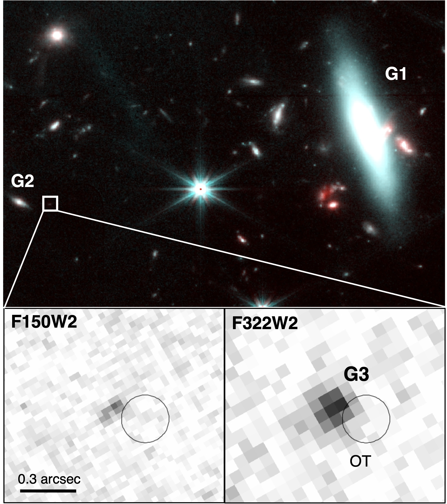
m A}) 是角直径距离。低红移亮星系方案是否需要极端偏移，主要由这个式子和候选星系角距离决定。模型拟合 / 应用方法
m iso}})，观测持续时间转为静止系 (T_{90,\
m rest})，余辉通量转为本征光度。若文章比较不同红移方案，读者应看这些派生量是否在短暴样本分布中合理，而不是只看某一个量是否“可以”。
m cc})，或构造包括星系亮度、角距离和短暴偏移分布的后验概率。参数退化在于：很暗的近位置源有较大的背景面密度惩罚，而较亮但较远的低红移源有较大的偏移惩罚。哪个方案胜出取决于定位误差、星系计数模型和偏移分布先验。重点章节 / 结果段落怎么读
m cc})、角偏移和物理偏移。不要只看作者选了哪个宿主，要看各候选概率的相对量级和先验假设。
m iso}})、(T_{90,\
m rest}) 和余辉光度都应仍与短暴族群相容。建议重点查看的图表
m cc}) 和投影偏移，尤其比较暗弱近位置源与低红移亮星系。关键图表逐图导读
m cc}) 或后验概率。关键是比较“暗但近”和“亮但远”两类候选。陷阱是亮星系视觉上更显眼，但其大偏移可能在物理上代价很高。
m iso}})、静止系时间或余辉光度。模型线或比较样本用于说明 GRB 061201 在 \(z>2\) 仍属于短暴。读图陷阱是样本比较受探测阈值影响，高红移短暴样本本来就不完整。论文原图 / 可嵌入图片
图注：The field of GRB061201 observed with \(\textit{JWST}/NIRCam\) using the $F150W2$ (blue/green) and $F322W2$ (red) filters. Three galaxies are considered as possible host galaxies: G1 at $z\sim0.111$, G2 at $z\sim1.2$, and G3 at $z\gtrsim2$. The insets zoom in on the target position, which lies 0.21\arcsec $\pm$ 0.13\arcsec (68\% confidence level) from the centroid of G3.
对应解读：对应“建议重点查看的图表”第1项和“关键图表逐图导读”图1：JWST近红外cutout、余辉位置、暗弱宿主G3及低红移候选G1/G2的空间关系。
入选理由：这是全文高红移宿主解释的核心图，直接显示GRB 061201余辉位置与F322W2暗源G3的0.21角秒±0.13角秒偏移，并同时标出G1、G2、G3三个候选宿主。它最能支撑日报中关于“暗但近”与“亮但远”宿主选择、坐标配准和近邻污染风险的讨论。
来源与置信度：\(arxiv_source\)；high；\(arxiv_source\) / main.tex:figure[1]
Fig02
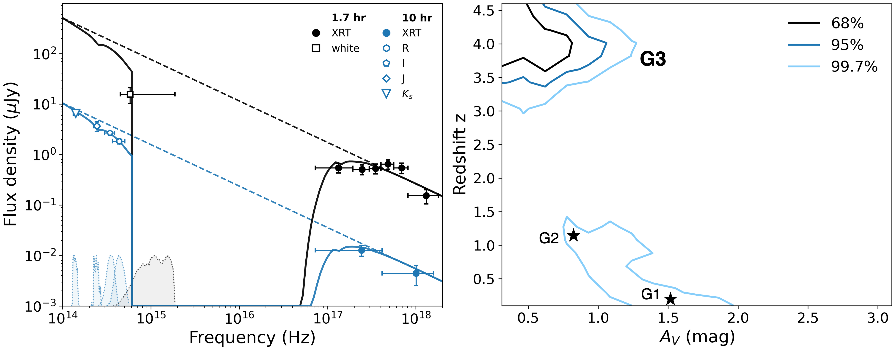
图注：\(\textit{Left:}\) Broadband afterglow SED at $T_0+1.7$\,hr and $T_0+10$\,hr. X-ray data (filled circles) and optical/nIR photometric points (open symbols) are best fit by a power-law model with index $\beta\approx$0.8, shown by the dashed line (without absorption/extinction) and by the solid line (including absorption and extinction effects). The dotted shaded curves show the filter response functions. \(\textit{Right:}\) Confidence contours for intrinsic extinction $A_V$ and redshift $z$. Contours show the 68\%, 95\%, and 99.7\% confidence regions. The favorite model corresponds to a high-redshift origin, consistent with an association with G3. The stars indicate the best fit values for G1 and G2.
对应解读：对应“建议重点查看的图表”第3项、第5项，以及“关键图表逐图导读”图3和模型拟合段落中的余辉SED、红移-消光置信区间分析。
入选理由：该图同时给出宽带余辉SED拟合和红移z—内禀消光A_V的68%、95%、99.7%置信轮廓，是判断高红移解是否优于G1/G2低红移方案的关键诊断图。它包含观测点、模型线、滤波器响应和置信区间，直接对应日报强调的SED退化、尘埃红化与高红移谱断裂问题。
来源与置信度：\(arxiv_source\)；high；\(arxiv_source\) / main.tex:figure[2]
Fig06
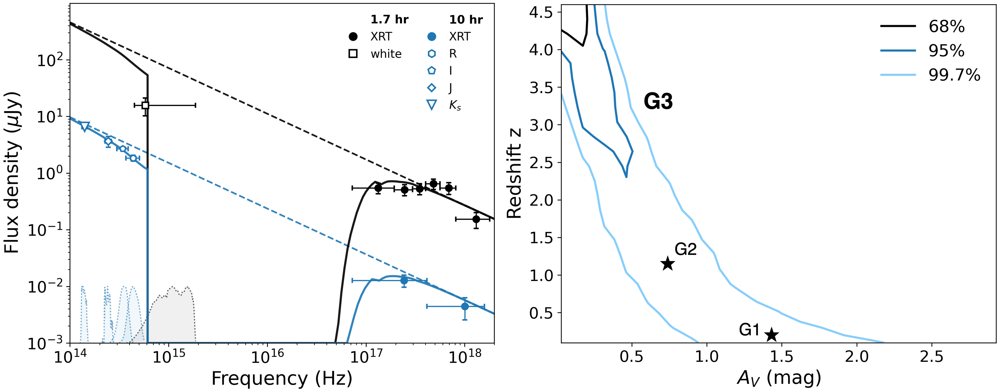
图注：Confidence contours for intrinsic extinction $A_V$ and redshift $z$, assuming an SMC extinction law. Contours show the 68\%, 95\%, and 99.7\% confidence regions. The favorite model corresponds to a high-redshift origin, consistent with an association with G3. The stars indicate the best fit values for G1 and G2.
对应解读：对应“建议重点查看的图表”第7项和模型拟合段落中的稳健性检验：改变消光律后红移—消光后验是否仍支持高红移。
入选理由：该图在采用SMC消光律时重新给出A_V-z置信轮廓，可检验高红移结论是否依赖特定尘埃模型。相比单纯展示漂亮场图，它更直接支撑日报关于模板、尘埃和光度红移系统误差的警示。
来源与置信度：\(arxiv_source\)；high；\(arxiv_source\) / main.tex:figure[6]
Fig03
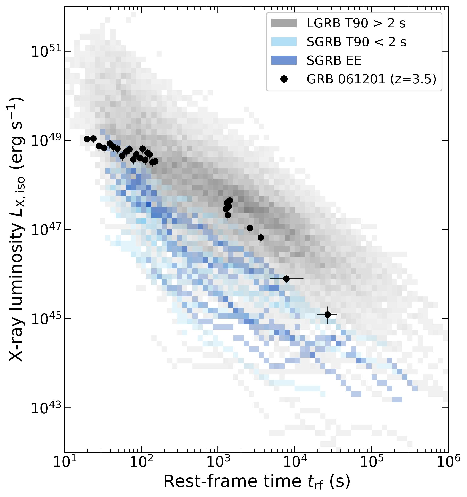
图注：X-ray luminosity light curve for GRB 061201 placed at $z=3.5$ (black symbols) compared to the density maps for long GRBs (gray), short GRBs (light blue) and short GRBs with extended emission (blue).
对应解读：对应“建议重点查看的图表”第5项和“关键图表逐图导读”图4：把GRB 061201置于z=3.5时的X射线余辉光度与短暴/长暴样本比较。
入选理由：该图检验若GRB 061201位于高红移，其X射线余辉是否仍落在短GRB族群合理范围内。它直接支撑日报中“高红移后余辉并不明显异常”的解释，并提供与长暴、短暴及带extended emission短暴的样本密度图比较。
来源与置信度：\(arxiv_source\)；high；\(arxiv_source\) / main.tex:figure[3]
Fig04
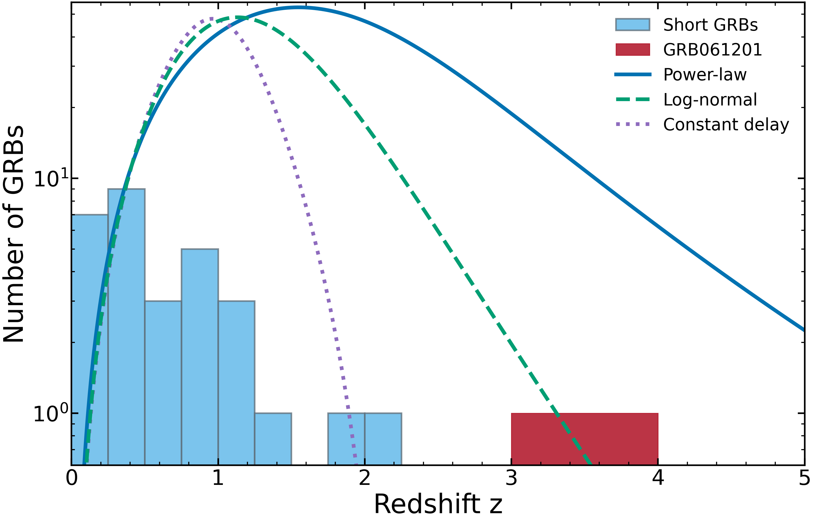
图注：Observed redshift distribution of short GRBs compared with the predictions of different delay time distributions. The red bin shows the approximate location of GRB\,061201.
对应解读：对应“建议重点查看的图表”第4项及详细解读中关于z>2短GRB稀有性、致密并合延迟时间分布和宇宙正午之后起源的讨论。
入选理由：该图展示短GRB观测红移分布与不同延迟时间分布预测，并标出GRB 061201的位置，有助于理解如果其位于高红移，对致密双星并合族群的意义。不过它不如Fig01、Fig02那样直接证明宿主关联或红移，因此排序较低。
来源与置信度：\(arxiv_source\)；high；\(arxiv_source\) / main.tex:figure[4]
Fig05
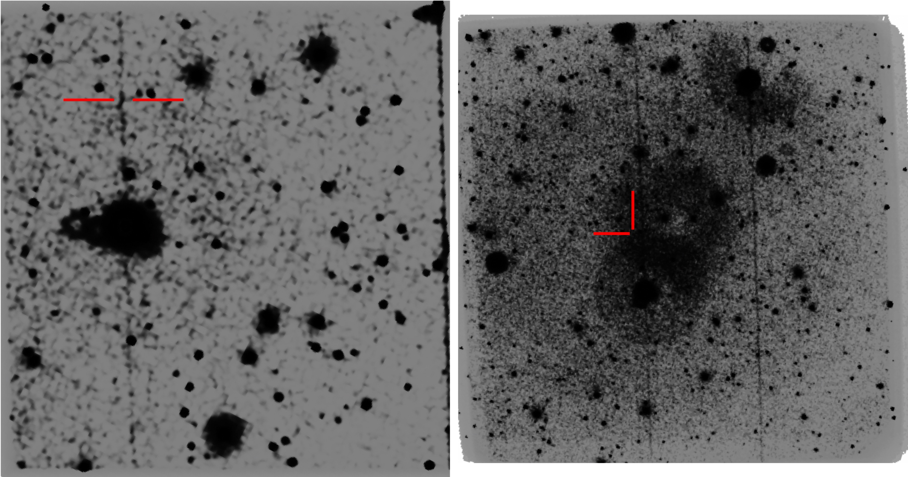
图注：\(\textit{Left:}\) Optical image of the field, obtained by stacking the UVOT $u$, $b$, $v$ observations in segment 000. The red lines mark the GRB position affected by a read-out streak from the nearby star. \(\textit{Right:}\) UV image of the field, obtained by stacking the UVOT $w1$ observations in segment 001. The red lines mark the GRB position, falling within rings of scattered light. The colormaps are scaled using the histogram equalization function in ds9.
对应解读：对应模型拟合段落中关于历史光学/紫外数据质量、背景污染和非探测限制的辅助说明。
入选理由：该图显示Swift/UVOT光学和紫外叠加图中GRB位置受到读出条纹与散射光环影响，可解释为什么早期光学/UV场图难以提供可靠宿主约束。它对高红移主张是辅助性证据，科学价值低于JWST成像、SED置信区间和余辉光度比较图。
来源与置信度：\(arxiv_source\)；high；\(arxiv_source\) / main.tex:figure[5]
强相关工作
这篇文章与短暴宿主识别和偏移分布研究直接相关。可检索关键词包括 “GRB 061201 host galaxy”, “short GRB hostless”, “short GRB offsets”, “chance coincidence probability short GRB”。同一事件 GRB 061201 的早期 Swift、光学余辉和宿主讨论文献应作为背景阅读；本文的新意是用 JWST 深近红外数据重新评估其高红移宿主可能性。
它也与高红移短暴和致密双星并合延迟时间分布有关。可检索关键词包括 “high-redshift short gamma-ray burst”, “compact binary merger delay time distribution”, “r-process early universe short GRB”。相反或张力观点主要来自低红移大偏移解释：如果已知短暴偏移分布允许很长尾，且附近星系的 (P_{\
m cc}) 仍很低，那么高红移解释就不是唯一方案。读者应把本文同短暴综述、GW170817/GRB 170817A、多信使并合率和宿主星系统计结合起来看。
同一事件 / 同类源线索：
相似工作：
基础理论 / 方法工作：
相反观点 / 张力线索：
（未提供）
2. Colour evolution in the radio afterglow of GRB 241025A
- 来源：arXiv / astro-ph.HE
- 链接：https://arxiv.org/abs/2607.01941v1
- 作者：S. Giarratana, O. S. Salafia, L. Nava, G. Ghirlanda, M. Giroletti, S. Antier, M. Pillas, T. Hussenot-Desenonges
- 评分：novelty 8/10，importance 8/10，relevance 9/10，final 9.35/10
- 推荐理由：Multiwavelength GRB 241025A afterglow campaign with radio color evolution requiring enhanced self-absorption/cold electrons; GRB-focused and relevant to relativistic-shock physics and broadband HE transient interpretation.
中文题目：GRB 241025A 射电余辉的颜色演化
做了什么：这篇论文报道了对 GRB 241025A 的多波段余辉跟踪，覆盖射电、近红外、光学和 X 射线。作者先用半经验模型描述光变曲线，发现单一前向激波成分大体能解释整体余辉，但射电波段随时间发生的“颜色演化”与标准慢冷却同步辐射余辉预言不一致。核心问题是：观测到的射电谱演化要求同步辐射自吸收频率 \(\nu_a\) 在早期比标准模型给出的更高。作者随后用结构化喷流前向激波模型拟合，并人为把光深乘以增强因子 \(\tau_{\rm enh}=500\)，使 \(\nu_a\) 上移，从而同时解释射电、近红外、光学和 X 射线数据。他们提出，这种额外光深可能来自激波下游未被费米一阶加速的冷电子群体。
为什么重要：GRB 余辉标准模型通常能用少数断裂频率和幂律指数统一解释宽波段光变，但射电自吸收段对激波下游粒子分布、电子注入比例和局域等离子体条件特别敏感。GRB 241025A 的多频多历元射电数据直接显示谱形随时间变化，迫使模型修改 \(\nu_a\) 或等效光深；这不是简单调节能量、密度或视角就能轻易抹平的细节。它把一个常被默认的假设——所有参与辐射的电子都按同一非热分布处理——推到了观测检验面前。
理论 / 观测 / 仪器方法价值：对理论而言，本文提供了一个用射电颜色演化约束冷电子和电子加速效率的案例；对观测而言，它强调单频射电探测不足以判断余辉物理，必须有多频、多历元采样才能定位 \(\nu_a\) 的演化；对方法而言，文章展示了从半经验光变拟合到半解析结构化喷流模型的诊断流程，并把残差集中到光深这一物理量上，而不是只给出一个形式上可接受的宽波段拟合。
为什么应该关注：如果你关心 GRB 余辉、相对论激波、喷流结构或射电瞬变巡天，这篇文章值得看，因为它说明下一代射电跟踪的科学产出不只是“有没有探测到余辉”，而是能测到激波微物理。尤其是 \(\nu_a\) 的位置和演化可能成为区分标准非热电子图像、部分电子加速图像、密度结构和喷流几何的关键观测量。
展开详细解读：文章讲解、背景、理论、重点章节、图表与相关工作
文章详细讲解
科学问题：GRB 241025A 的 prompt emission 被 Swift、Einstein Probe、Fermi/GBM、SVOM、Konus-Wind 和 VZLUSAT-2 等多个高能探测器同时探测到，是一个非常适合开展多波段余辉跟踪的事件。论文关注的不是单纯确认余辉存在，而是余辉谱形如何随时间演化，特别是射电波段不同频率之间的相对亮度变化。标准前向激波模型预言，在慢冷却同步辐射情形下，谱形由几个断裂频率控制，包括自吸收频率 \(\nu_a\)、特征同步辐射频率 \(\nu_m\) 和冷却频率 \(\nu_c\)。如果观测频段相对于这些断裂频率的位置确定，光变和颜色演化应服从相对固定的幂律关系。本文发现，GRB 241025A 的射电颜色演化要求早期 \(\nu_a\) 高于实际观测频段附近的标准预期。
作者怎么做：作者组织了覆盖射电、近红外、光学和 X 射线的观测活动，并把这些数据统一放在余辉建模框架下。第一步是半经验拟合：用灵活的函数形式描述各波段光变和谱形，而不立即强加完整的物理模型。这一步的作用是判断是否需要多个辐射成分，例如反向激波、能量注入、闪耀或宿主污染。结果显示，一个单一成分，即超相对论前向激波，可以在整体上复现余辉行为。第二步是把半经验结果与标准慢冷却余辉模型比较，发现射电段的谱演化无法自然落在标准断裂频率演化上。
关键结果：为把观测与物理模型连接起来，作者进一步使用半解析结构化喷流前向激波模型。结构化喷流允许能量和洛伦兹因子随角度变化，因此比简单顶帽喷流更适合描述真实 GRB 喷流和视角效应。即便如此，若采用标准光深，模型仍难以给出足够高的早期 \(\nu_a\)。作者引入一个乘在同步辐射自吸收光深上的增强因子 \(\tau_{\rm enh}\)，最佳描述需要 \(\tau_{\rm enh}=500\)。这意味着不是总辐射能量简单变大，而是吸收过程相对于标准非热电子预期显著增强。作者把这一增强解释为激波下游存在未被费米一阶加速的冷电子，它们不显著贡献高频同步辐射发射，却可以增加低频吸收光深。
局限和下一步：这个结论目前仍是模型依赖的。\(\tau_{\rm enh}\) 是一个有效参数，而不是从第一性原理粒子分布直接推导出的唯一解；它也可能与外部介质密度结构、微物理参数随时间演化、反向激波贡献、闪烁或早期射电标定系统误差存在退化。论文的重要性正在于把问题明确地定位到射电自吸收和冷电子，而不是声称已经唯一证明冷电子存在。下一步需要更多 GRB 具备从低频到高频的密集射电谱覆盖，并结合 VLBI 尺度、偏振、低频上限和更完整的粒子分布模型，检验类似 \(\tau_{\rm enh}\) 是否普遍存在。
关键结果是怎么做出来的
本文最重要的证据链从样本定义开始：研究对象是单个事件 GRB 241025A，但它的优势在于 prompt 阶段被多个高能卫星同时触发，余辉阶段又获得了射电、近红外、光学和 X 射线覆盖。对单个 GRB 来说，统计显著性不是来自大样本数量，而是来自同一事件上多频、多历元数据对谱能分布和光变曲线的交叉约束。作者报告各波段均清楚探测到余辉，这使模型不能只针对某一个波段做局部解释。
第一层拟合是半经验光变拟合。这里应重点看各频段数据点相对于拟合曲线的残差：如果射电、光学和 X 射线需要彼此独立的峰时、衰减指数或额外起伏，那么单一前向激波解释会变弱。作者的结论是单成分模型可以合理复现整体行为，因此后续异常主要不是“缺了一个显眼的第二辐射成分”，而是单成分内部的谱断裂演化与标准理论不一致。
第二层证据来自射电颜色演化。射电颜色指不同射电频率间的谱斜率和相对通量随时间变化。若观测频段均位于同一个幂律谱段，颜色应近似稳定；若 \(\nu_a\) 或 \(\nu_m\) 穿过观测频段，颜色会系统变化。作者发现，要解释早期射电颜色，\(\nu_a\) 必须在比标准模型更高的频率位置。这个结论应由射电多频光变图、按历元构造的射电谱图，以及断裂频率随时间演化图共同支撑。
第三层是半解析物理模型比较。作者引入结构化喷流，并在同步辐射自吸收光深上乘以 \(\tau_{\rm enh}\)。关键模型比较不是普通标准模型和增强模型谁“看起来更顺”，而是增强光深是否能在不破坏近红外、光学和 X 射线拟合的前提下修正射电颜色。论文给出的核心数值是 \(\tau_{\rm enh}=500\)，说明所需修正幅度很大，不能被看作微小标定偏差。
系统误差方面，读者需要关注射电通量标定、不同时标数据是否严格可比、银河系或宿主消光修正、X 射线吸收柱密度、星际闪烁以及外部介质密度假设。射电早期尤其容易受闪烁影响，若单个频点上下波动被误读为谱演化，会影响 \(\nu_a\) 判断。因此稳健性检验应包括去掉个别射电点、改变闪烁误差项、改变介质密度剖面、允许微物理参数变化，以及检查是否有反向激波可替代解释。
最终结论的置信度主要是模型一致性层面的：增强光深模型在宽波段上给出合理描述，并有理论动机，即下游冷电子增加吸收而不主导发射。但它不是一个完全排他性的发现。最值得关注的不是 \(\tau_{\rm enh}=500\) 这个数值本身是否可普适，而是射电颜色演化已经灵敏到可以暴露标准余辉微物理假设的不足。
展开背景、理论、公式、模型、章节和图表导读
背景知识
GRB 余辉通常被解释为相对论喷流与外部介质相互作用产生的同步辐射。prompt emission 结束后，喷流驱动的前向激波扫过星际介质或恒星风物质，激波后电子被加速到非热幂律分布，并在放大的磁场中辐射。这个框架自 1990 年代末以来非常成功，能够解释从 X 射线到射电的长时标衰减光变。
射电余辉在这个框架里特别重要，因为它常常覆盖自吸收频率 \(\nu_a\) 和特征频率 \(\nu_m\) 附近。高频光学和 X 射线通常位于光薄同步辐射段，对能量、电子谱指数和冷却频率敏感；低频射电则会受到同步辐射自吸收、源大小、闪烁和低能电子数量影响。因此，射电数据不仅补充能量估计，还能直接检验激波微物理。
历史上，许多余辉建模受限于射电采样稀疏：可能只有少数频率、少数历元，甚至只有上限。在这种情况下，\(\nu_a\) 常被弱约束，模型可以通过调整环境密度 \(n\)、磁场能量分数 \(\epsilon_B\)、电子能量分数 \(\epsilon_e\) 或喷流能量来得到近似拟合。现在多设施快速跟踪和宽频射电接收机使早期射电颜色演化成为可测量量，因此过去被隐藏的模型缺口开始显现。
这个问题现在值得重新看，还因为相对论激波粒子加速理论本身仍有未解之处。标准余辉模型通常假设所有电子或固定比例电子被加速成幂律非热分布，但等离子体模拟和理论研究表明，激波下游可能保留大量热电子或冷电子。它们对高频发射贡献小，却可能显著影响低频吸收和法拉第效应。GRB 241025A 正好提供了一个把这种粒子分布细节投射到可观测射电颜色上的案例。
该领域常见误区之一是把“单一前向激波能拟合光变”误解为“标准微物理完全成立”。事实上，同一个动力学成分可以有非标准粒子分布或非标准吸收。另一个误区是把射电点的偏离都归因于星际闪烁；闪烁确实重要，但若多频多历元出现系统颜色趋势，就需要物理解释。还有一个误区是只看总光变衰减指数，而忽略同一时刻的谱形，因为断裂频率的位置往往比单波段斜率更能暴露模型问题。
基础理论 / 方法脉络
基本物理图像是：GRB 喷流以超相对论速度进入外部介质，前向激波把动能转化为内能，部分能量进入电子和磁场。电子在磁场中作回旋运动并产生同步辐射。若电子能谱近似为幂律，宽波段谱能分布也呈分段幂律，每个谱段由断裂频率连接。
标准慢冷却余辉中通常有三个关键频率：自吸收频率 \(\nu_a\)、最小注入电子对应的特征频率 \(\nu_m\)、以及辐射冷却显著的冷却频率 \(\nu_c\)。慢冷却指 \(\nu_m<\nu_c\)，多数电子在动力学时间内未完全冷却。不同观测频率 \(\nu\) 相对于这些断裂频率的位置决定谱斜率和光变斜率。射电颜色演化本质上是在追踪 \(\nu_a\) 或 \(\nu_m\) 是否穿越射电频段。
本文的关键假设是余辉主要来自单一前向激波，并进一步允许喷流是结构化的。结构化喷流意味着单位立体角能量和初始洛伦兹因子随离轴角变化，观测者看到的是不同角区辐射经相对论 beaming 和到达时延叠加后的结果。这可以改变光变峰形和衰减，但并不自动任意改变同步辐射自吸收光深。
同步辐射自吸收由同一批或相关低能电子对低频光子的吸收决定。标准模型中，吸收系数由非热电子分布、磁场和源几何给出。若激波下游存在大量未被加速的冷电子，它们可能提高低频吸收而不显著提高光薄段发射。本文引入 \(\tau_{\rm enh}\) 作为有效光深增强因子，物理上相当于承认标准非热电子吸收不足。
主要退化关系包括：较高外部密度 \(n\) 也可提高 \(\nu_a\)，较高磁场能量分数 \(\epsilon_B\) 会改变发射和吸收，电子加速比例 \(\xi_e\) 改变每个被加速电子获得的能量，喷流视角影响峰时和亮度，星际闪烁会造成射电通量随机起伏。因此本文的诊断价值在于宽波段联合拟合：光学和 X 射线约束光薄同步辐射，射电约束吸收和低能电子，二者合在一起缩小可行参数空间。
公式与推导
从前向激波能量守恒开始，可用各向同性等效能量 \(E_{\rm iso}\) 估计相对论 blast wave 的尺度关系：
这里 \(R\) 是激波半径，\(n\) 是外部介质数密度，\(m_p\) 是质子质量，\(c\) 是光速，\(\Gamma\) 是 bulk 洛伦兹因子。该式说明在给定能量下，密度越高，减速越快，也会影响射电自吸收。
观测时间与半径和洛伦兹因子近似满足
其中 \(z\) 是红移。这个关系把动力学演化映射到观测光变；所有断裂频率的时间演化都依赖 \(R(t_{\rm obs})\) 和 \(\Gamma(t_{\rm obs})\)。
激波后内能密度可写为
其中撇号表示共动系。若磁场获得比例 \(\epsilon_B\) 的内能，则
这里 \(B'\) 是共动磁场。它同时控制同步辐射峰频、冷却频率和自吸收系数。
若被加速电子的能量分数为 \(\epsilon_e\)，幂律指数为 \(p\)，最小电子洛伦兹因子常近似为
其中 \(m_e\) 是电子质量。若只有比例 \(\xi_e\) 的电子被加速，右端通常还会随 \(\epsilon_e/\xi_e\) 增大；这正是冷电子问题的入口，因为未加速电子可影响吸收但不进入同一非热发射公式。
特征同步辐射频率为
其中 \(q_e\) 是电子电荷。这个式子说明 \(\nu_m\) 主要由 \(B'\)、\(\Gamma\) 和 \(\gamma_m\) 决定，通常控制低频到光学之间的谱峰穿越。
冷却洛伦兹因子和冷却频率可写为
其中 \(\sigma_T\) 是汤姆孙截面，\(t'\) 是共动时间。慢冷却条件是 \(\nu_m<\nu_c\)，本文正是在这种标准谱序下检查射电颜色是否相容。
自吸收频率由光深为一的条件定义：
其中 \(\alpha_\nu\) 是同步辐射吸收系数，\(\Delta R'\) 是共动发射层厚度。若标准非热电子给出的 \(\alpha_\nu\) 不足，\(\nu_a\) 会偏低，低频谱会过早变为光薄。
本文采用的有效修正可写成
其中 \(\tau_{\nu,{\rm std}}\) 是标准模型光深，\(\tau_{\rm enh}\) 是增强因子。因为 \(\tau_\nu\) 随频率通常快速下降，增大光深会把满足 \(\tau_\nu=1\) 的 \(\nu_a\) 推到更高频率。
观测通量可概括为发射率经吸收和几何投影后的积分：
其中 \(d_L\) 是光度距离，\(\delta_D\) 是多普勒因子，\(j'_{\nu'}\) 是共动发射系数，\(d\Omega\) 是喷流角元。结构化喷流模型本质上是在这个角向积分中允许能量和 \(\Gamma\) 随角度变化。
拟合优度通常可由高斯误差下的似然表示：
其中 \(F_{\nu,i}^{\rm obs}\) 是第 \(i\) 个观测通量，\(F_{\nu,i}^{\rm mod}\) 是模型通量，\(\sigma_i\) 是误差，\(\boldsymbol{\theta}\) 是模型参数。本文结论的实质是：包含 \(\tau_{\rm enh}\) 的 \(F_{\nu}^{\rm mod}\) 能显著改善射电颜色残差，同时不破坏其他波段。
模型拟合 / 应用方法
本文的拟合可以分成半经验拟合和半解析物理拟合两层。半经验拟合的目标是先描述数据本身，例如各波段峰时、上升和衰减斜率、谱斜率随时间变化等。它不要求每个参数都有唯一物理含义，但能揭示模型必须解释的现象：射电颜色随时间演化，而且这种演化与标准慢冷却前向激波的断裂频率轨迹不一致。
半解析物理拟合的参数通常包括喷流能量尺度、核心角、视角、初始洛伦兹因子或其角向结构、外部介质密度、电子谱指数 \(p\)、微物理参数 \(\epsilon_e\) 和 \(\epsilon_B\)，以及本文额外引入的 \(\tau_{\rm enh}\)。若红移已知，还会固定或拟合光度距离相关量；若宿主消光和 X 射线吸收不确定，它们会作为额外校正项影响光学和 X 射线归一化。
似然层面，观测通量点通常以对数通量或线性通量误差进入 \(\chi^2\) 或高斯似然；上限则需用截断似然或单侧约束处理。射电数据还应考虑星际闪烁造成的额外方差，否则早期射电点可能被赋予过高权重。残差诊断中，最关键的不是所有点的总 \(\chi^2\) 是否可接受，而是残差是否按频率和时间呈系统模式：例如低频持续低于模型、高频先后穿越不对，或同一历元谱斜率无法匹配。
参数退化非常强。提高 \(n\) 可增强自吸收，也会改变减速时间和峰值通量；提高 \(\epsilon_B\) 会改变 \(B'\)，进而同时移动 \(\nu_m\)、\(\nu_c\) 和 \(\nu_a\)；改变 \(\epsilon_e\) 会移动 \(\nu_m\) 并影响光薄段归一化；改变视角和喷流结构会改变峰形。\(\tau_{\rm enh}\) 的意义在于，它主要作用在吸收光深上，因此能针对射电颜色问题，但它与电子加速比例 \(\xi_e\) 和冷电子数密度在物理解释上并非完全独立。
模型可能失败的地方包括：真实余辉存在反向激波但被单成分模型吸收掉；外部介质不是简单均匀介质或恒星风剖面；微物理参数随激波强度或时间演化；射电通量受闪烁、宿主星系或标定影响；结构化喷流形式过于刚性。实际应用中，本文方法最适合用于多频射电采样丰富的事件：先用半经验模型确认颜色演化，再用物理模型测试标准 \(\nu_a\) 是否足够，最后判断是否需要冷电子或非标准吸收。
重点章节 / 结果段落怎么读
数据和观测部分应首先阅读。重点是 GRB 241025A 的触发信息、多设施 prompt 探测，以及余辉跟踪的时间覆盖和频率覆盖。读者应特别检查射电观测有哪些频段、每个频段有多少历元、早期是否覆盖到光变峰前后，因为这些决定 \(\nu_a\) 是否能被真正约束。
半经验拟合部分是第二个重点。这里不要只看最终曲线是否穿过数据点，而要看作者如何参数化光变和谱演化，是否允许不同波段有独立行为，以及他们如何得出“单一成分足够”的结论。若半经验模型已经需要多个不连续成分，那么后面的前向激波解释会更脆弱。
标准余辉模型比较部分是全文诊断核心。读者应找出作者如何判定慢冷却模型不一致：是时间衰减指数不满足闭合关系，还是射电谱斜率要求 \(\nu_a\) 位置不同，或两者都有。对本文而言，射电颜色演化和早期 \(\nu_a\) 偏高是关键。
半解析结构化喷流模型部分需要关注参数和假设。结构化喷流本身能解释许多光变形状，但本文额外需要 \(\tau_{\rm enh}=500\)。读者应检查该因子是固定还是拟合得到，置信区间如何，是否与其他参数强相关，以及增强后对近红外、光学、X 射线是否仍保持一致。
讨论和物理解释部分应重点看冷电子解释。作者把增强光深与未被费米一阶加速的下游冷电子联系起来，这与相对论激波理论有呼应。读者应区分“有效光深增强被数据偏好”和“冷电子群体被唯一证明”这两个层级。
建议重点查看的图表
-
多波段光变曲线：检查射电、近红外、光学和 X 射线数据是否能由单一成分贯通，尤其看射电峰时与高频衰减是否协调。
-
射电多频光变或颜色演化图：看不同射电频率之间的通量比如何随时间变化，是否呈系统趋势而非单个离群点。
-
按历元构造的射电谱能分布：检查谱峰或自吸收转折是否在观测频带内移动，以及低频端是否比标准模型更暗。
-
半经验拟合残差图：看残差是否集中在射电低频或早期历元；若残差具有频率相关结构，就支持吸收问题而不是随机误差。
-
标准慢冷却模型断裂频率演化图：重点看 \(\nu_a\)、\(\nu_m\)、\(\nu_c\) 与观测频带的相对位置，判断理论预期为何无法匹配颜色演化。
-
加入 \(\tau_{\rm enh}\) 后的结构化喷流拟合图：比较增强前后射电谱和宽波段光变的改善，同时确认高频段没有被牺牲。
-
参数后验或置信区间图：若论文给出 corner plot，应看 \(\tau_{\rm enh}\) 与 \(n\)、\(\epsilon_B\)、\(\epsilon_e\)、视角之间的相关性。
-
稳健性检验表：检查去除个别射电点、改变误差模型或介质假设后，是否仍需要显著增强光深。
关键图表逐图导读
图 1：通常应是 prompt 定位和多波段观测概览，或宽波段光变总览。横轴多为触发后时间，纵轴为通量密度或归一化通量，不同颜色代表不同频段。读图时要看数据覆盖是否连续，射电是否在早期和峰值附近有足够采样；不要只看高频余辉很平滑就认为模型已被充分验证。
图 2：若为多波段光变拟合图，横轴是时间，纵轴是通量密度，不同模型线可能代表半经验单成分拟合。关键是看射电点相对于模型线是否有系统偏离，以及近红外、光学、X 射线是否共同支持同一衰减趋势。读图陷阱是不同波段可能被人为平移或缩放，必须确认纵轴单位和图例说明。
图 3：射电颜色演化或射电谱图最关键。若横轴为频率、纵轴为通量密度，每条曲线代表一个观测历元，那么应看低频端是否被自吸收压低、谱峰是否随时间向低频移动、标准模型是否把转折放得太低。若横轴为时间、纵轴为通量比或谱指数，则应看颜色变化是否超过误差和闪烁预期。
图 4：标准慢冷却模型与数据对比图应展示 \(\nu_a\)、\(\nu_m\)、\(\nu_c\) 的位置或对应模型谱。读者应检查模型在哪些频段失败：若只在低频射电失败，而光学和 X 射线较好，问题更可能是吸收或低能电子，而不是整体动力学能量错误。
图 5：加入 \(\tau_{\rm enh}\) 的结构化喷流模型图应是结论支撑图。看增强光深后射电谱形是否被同时修正，以及是否仍能通过高频数据。陷阱是额外参数总能改善拟合，因此要看改善是否集中在物理预期的自吸收段，并关注 \(\tau_{\rm enh}\) 的不确定性。
图 6：如果有后验分布或参数相关图，横纵轴应是模型参数如 \(E_{\rm iso}\)、\(n\)、\(\epsilon_e\)、\(\epsilon_B\)、视角和 \(\tau_{\rm enh}\)。重点看 \(\tau_{\rm enh}\) 是否被下限约束，还是只是与 \(n\) 或 \(\epsilon_B\) 形成长退化尾。若后验只给出宽松上/下限，物理解释就应相应保守。
论文原图 / 可嵌入图片
Fig02
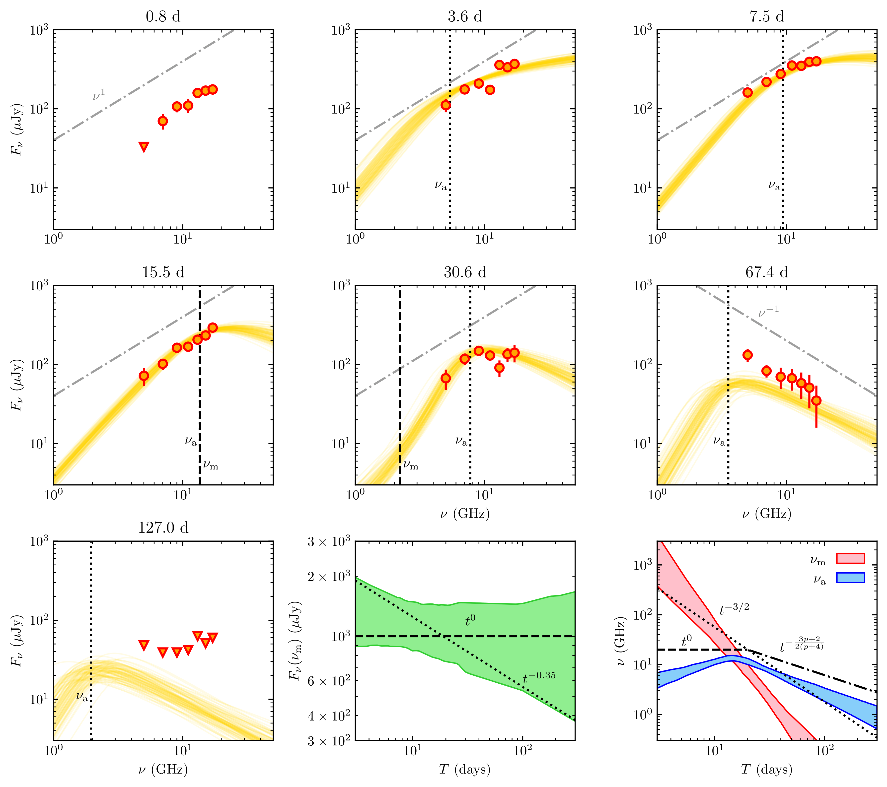
图注：Radio spectra of GRB 241025A and synchrotron spectral parameter evolution. Orange circles with error bars in each panel show the flux density of the GRB 241025A afterglow at fixed times (shown on top of the panel) as measured by our radio observing campaign. Thin yellow lines show the radio spectra constructed from 100 random posterior samples of the semi-empirical model. The bottom-centre panel shows the 90\% credible region spanned by the time evolution of $F_\nu(\nu_\mathrm{m})$ (green band, 90\% credible region from the model), with a dashed line showing the expected evolution ($t^0$), and a dotted line showing $t^{-0.35}$ for reference. Similarly, the bottom-right panel shows the evolution of the break frequencies (red: $\nu_\mathrm{m}$; blue: $\nu_\mathrm{a}$). The dashed and dot-dashed lines show the expected evolution of $\nu_\mathrm{a}$ before and after the $\nu_\mathrm{m}$ crossing, respectively (the slope shown after the crossing assumes $p=2.5$); the dotted line shows the expected evolution of $\nu_\mathrm{m}$. All expected evolutions refer to the self-similar phase of a \(\citet{Blandford1976}\) blast wave expanding in medium with an ISM density profile \(\citep\)[e.g.][]{Granot2002}.
对应解读：对应“射电多频光变或颜色演化图”“按历元构造的射电谱能分布”以及“标准慢冷却模型断裂频率演化图”。
入选理由：这是支撑论文核心结论的关键图：逐历元射电谱直接展示颜色演化和谱峰/自吸收转折行为，底部还给出半经验模型推得的峰值通量、ν_m 与 ν_a 随时间演化，并与标准 ISM 慢冷却预期斜率比较。它最直接说明为什么标准断裂频率轨迹无法解释观测到的射电颜色变化。
来源与置信度：\(arxiv_source\)；high；\(arxiv_source\) / aanda.tex:figure[2]
Fig03
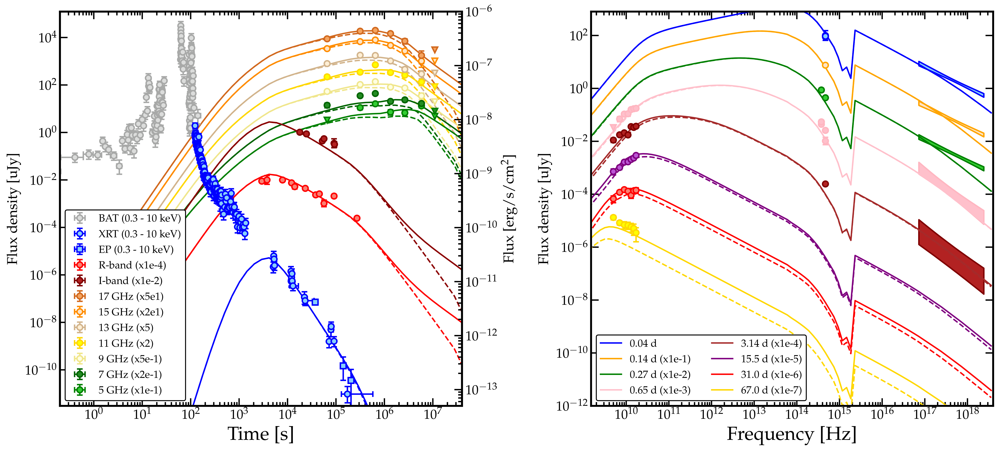
图注：Observations and afterglow modelling of GRB\,241025A. \(\textit{Left panel}\): multi-wavelength light curves. Prompt emission data from \(\textit{Swift}/BAT\) are shown as gray dots. The observed X-ray integrated flux (0.3--10\,keV) are represented with blue dots (\textit{Swift}/XRT) and squares (EP/FXT). Flux density measurements for the Optical and NIR are shown in red and brown, respectively. Radio flux density measurements are shown from the lowest band (5\,GHz, in green) to the highest band (17\,GHz, in light brown). \(\textit{Right panel}\): spectra at different times. Radio, Optical, NIR and X-ray data are represented with the same colour for each epoch, from 0.04 days (blue) to 67 days (yellow) post-burst. The X-ray flux density spectra are presented as ``butterfly'' plots (see Appendix~\(\ref{appendix:butterfly}\) for a detailed description on the methods employed to calculate the butterfly plots). The afterglow model discussed in Section \(\ref{subsec:modelling_om_code}\) is represented with dashed (core of the jet) and solid (total emission, i.e. core + wings) lines.
对应解读：对应“加入 τ_enh 后的结构化喷流拟合图”和“关键图表逐图导读”中关于宽波段光变与多历元谱能分布的模型对比。
入选理由：该图同时给出多波段光变曲线和不同时刻的宽波段谱，并叠加结构化喷流模型的核心与总辐射曲线，是检验 τ_enh 物理模型是否能同时拟合射电、光学/NIR 和 X 射线的主要证据。相比单独的 X 射线或参数图，它更能体现增强光深并未牺牲高频段拟合。
来源与置信度：\(arxiv_source\)；high；\(arxiv_source\) / aanda.tex:figure[3]
Fig10
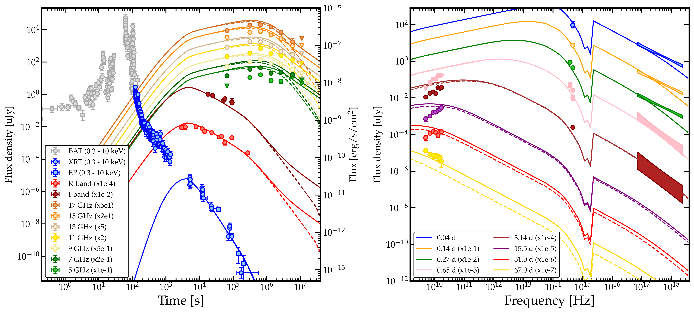
图注：Observations and afterglow modelling of GRB\,241025A. \(\textit{Left panel}\): multi-wavelength light curves. \(\textit{Right panel}\): spectra at different times. The afterglow model, represented with dashed (core of the jet) and solid (total emission, i.e. core + wings) lines, is computed with the set of parameters of Table \(\ref{tab:model_params}\) but $\tau_{\mathrm{enh}}$, which is set to one.
对应解读：对应“标准慢冷却模型与数据对比图”以及“加入 τ_enh 后的结构化喷流拟合图”中的增强前后比较。
入选理由：Fig10 使用与物理模型相同参数但将 τ_enh 设为 1，是判断标准光深为何失败的直接对照图。与 Fig03 结合可以清楚看到增强光深主要改善射电谱形和低频吸收段，而不是任意调整整体归一化。
来源与置信度：\(arxiv_source\)；high；\(arxiv_source\) / aanda.tex:figure[10]
Fig01
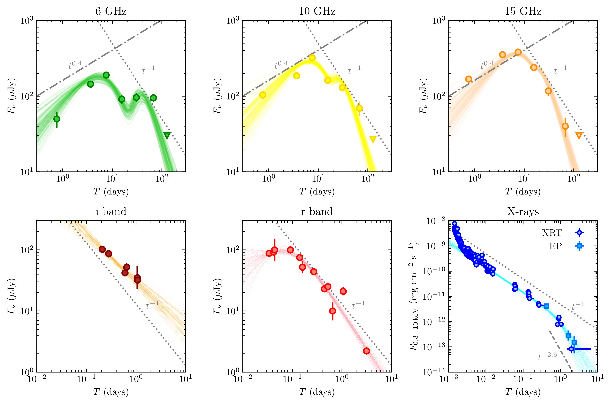
图注：Multi-wavelength light curves of GRB\,241025A. Circles and squares with error bars in each panel show the flux density or flux of the GRB\,241025A afterglow in a specific passband (shown on top of the panel) at different times. Dot-dashed, dotted and double-dash-dotted gray lines show reference power law behaviors $t^{0.4}$, $t^{-1}$ and $t^{-2.6}$, respectively. In each panel, thin coloured lines show the light curves constructed from 100 random posterior samples of an empirical or semi-empirical model fitted to the observed evolution (see text).
对应解读：对应“多波段光变曲线”和半经验拟合段落。
入选理由：该图展示射电、近红外、光学和 X 射线各波段随时间的观测覆盖，并叠加半经验模型后验样本，是理解数据基础和单一成分能否贯通多波段余辉的入口图。它能帮助读者判断射电峰时、高频衰减和高能余辉是否在同一整体演化框架下。
来源与置信度：\(arxiv_source\)；high；\(arxiv_source\) / aanda.tex:figure[1]
Fig09
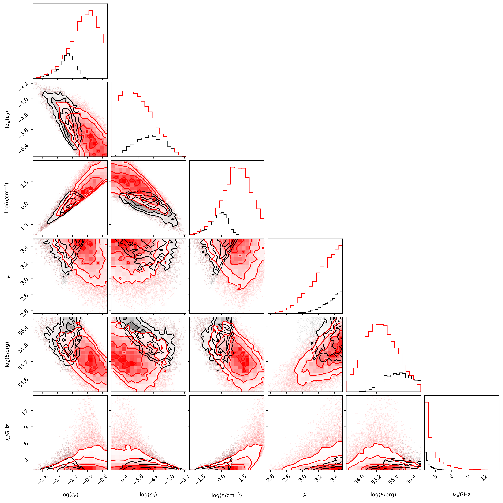
图注：Corner plot showing the distribution of samples that survive the cuts that represent the constraints imposed by the positions of the break frequencies and the X-ray flux density during the self-similar phase, as discussed in Sect.\ \(\ref{sec:standard_afg_model_failure}.\) The black contours and histograms refer to the model that includes SSC cooling in the Thomson regime (following \citealt{Sari2001}). The red contours and histograms refer to a model that ignores SSC.
对应解读：对应“标准慢冷却模型断裂频率演化图”和模型拟合中关于标准余辉模型失败、参数退化与 SSC 影响的讨论。
入选理由：该 corner plot 展示满足断裂频率位置和 X 射线通量约束后仍可存活的标准模型参数样本，并区分是否包含 SSC 冷却。虽然不是直接的光变图，但它支撑了论文关于标准慢冷却模型受限、仅靠常规参数调节难以解决射电颜色问题的论证。
来源与置信度：\(arxiv_source\)；high；\(arxiv_source\) / aanda.tex:figure[9]
Fig08

图注：Corner plot of the semi-empirical model (cfr.\ Sect. \ref{sec:semi_emp_radio}) posterior probability. In the panels under the diagonal, the contours show the one-, two- and three-sigma credible regions of the marginalized two-dimensional posteriors. Dots show samples outside the three-sigma contour. The panels on the diagonal show the marginalised one-dimensional posterior probability distribution of each single parameter, with the median and 68\% credible interval shown on top of the panel.
对应解读：对应“参数后验或置信区间图”和半经验拟合残差/诊断前的半经验模型参数约束。
入选理由：该图给出半经验射电模型后验分布，可用于评估射电谱演化参数是否被数据有效约束，以及参数间是否存在明显退化。它不如 Fig02 直观，但可作为射电颜色演化诊断的统计支撑。
来源与置信度：\(arxiv_source\)；high；\(arxiv_source\) / aanda.tex:figure[8]
强相关工作
这篇工作与经典 GRB 余辉理论直接相连，尤其是 Sari、Piran 与 Narayan 建立的同步辐射断裂频率框架，以及后续 Granot、Sari 等对分段谱和自吸收的系统整理。本文并不是推翻前向激波模型，而是在前向激波框架内部指出标准电子分布和自吸收处理可能不够。建议检索关键词包括 “GRB afterglow synchrotron self-absorption”, “cold electrons downstream relativistic shock”, “fraction of accelerated electrons GRB afterglow”, “radio colour evolution GRB afterglow”。
同类观测上，应把 GRB 241025A 放到射电余辉密集监测事件中比较，尤其是那些具有多频射电谱、早期射电峰和反向激波争议的 GRB。相反或张力观点包括：用密度结构、反向激波、星际闪烁或微物理参数演化解释射电异常，而不引入大量冷电子。由于我不能确认 GRB 241025A 是否已有独立同事件论文或 GCN 汇总页的稳定公开链接，这里只列出本文 arXiv 页面作为同事件入口；读者可在 ADS、GCN Circulars 和各卫星触发目录中用 “GRB 241025A” 检索同事件材料。
同一事件 / 同类源线索：
相似工作：
（未提供）
基础理论 / 方法工作：
相反观点 / 张力线索：
（未提供）
3. Electron stability constrains neutrino time delays
- 来源：arXiv / astro-ph.HE
- 链接：https://arxiv.org/abs/2607.01339v1
- 作者：Mauricio Bustamante, José Manuel Carmona, José Luis Cortés, Ardit Gkioni, Maykoll A. Reyes
- 评分：novelty 8/10，importance 8/10，relevance 9/10，final 9.35/10
- 推荐理由：astro-ph.HE；用TeV--PeV天体电子稳定性约束中微子LIV时间延迟，直接涉及高能宇宙中微子、多信使解释和基础物理限制，结论清楚且对相关延迟声称有较强排除力。
中文题目：电子稳定性如何限制中微子传播时延
做了什么：这篇文章讨论一个经常被忽略的对称约束：如果用洛伦兹不变性破缺来解释高能宇宙中微子相对伽马射线的到达时延，那么同一类修正不仅会影响中微子，还会改变电子和中微子相关反应的运动学。超光速中微子会触发真空中产生正负电子对的能量损失；而作者强调，通常被认为更安全的亚光速中微子修正会打开电子衰变为电子加中微子对的通道。由于我们已经观测到从 \,\(\mathrm{TeV}\) 到 \,\(\mathrm{PeV}\) 量级的宇宙电子仍然稳定传播，这直接排除了许多可产生可观中微子时延的洛伦兹破缺参数空间。核心结论是：高能中微子时延不能简单归因于单独作用在中微子扇区的标准有效场论式洛伦兹破缺；若有时延，更可能来自源内天体物理过程、所有粒子等同受影响的特殊实现，或超出常规有效场论框架的新物理。
为什么重要：高能中微子与伽马射线的时间关联常被用来检验洛伦兹不变性破缺，但过去的直觉是：超光速中微子受 \,\(\nu\to\nu+e^-+e^+\) 强约束，亚光速中微子则较容易留下可观时延。本文指出这种直觉不完整，因为亚光速中微子对应的相对色散修正会让高能电子通过 \,\(e^-\to e^-+\nu+\bar\nu\) 失稳。这样，中微子时延的两侧参数空间都被高能粒子稳定性压缩。
理论 / 观测 / 仪器方法价值：理论价值在于把中微子时间飞行检验和电子稳定性约束放进同一个运动学框架，避免只看中微子传播而忽略其他粒子扇区的一致性。观测价值在于把 TeV--PeV 宇宙线电子观测转化为对中微子洛伦兹破缺的限制。方法价值在于强调阈值反应、真空能量损失和多粒子扇区比较是检验时延模型的必要诊断，而不只是拟合 \,\(\Delta t\) 与能量的幂律关系。
为什么应该关注：如果你关注 IceCube 高能中微子、瞬变源关联、量子引力传播效应或洛伦兹不变性检验，这篇文章的意义是给出一个很实用的“否决条件”：任何声称用中微子洛伦兹破缺解释可观时延的模型，都必须同时解释为什么高能电子没有快速衰变。它把一个看似中微子专属的问题变成了多信使、多粒子种类的一致性问题。
展开详细解读：文章讲解、背景、理论、重点章节、图表与相关工作
文章详细讲解
科学问题：高能宇宙中微子的到达时间有时被拿来检验能量依赖的传播速度。如果中微子速度相对光速有很小偏离，来自宇宙学距离的传播会把这种微小差异积累成秒、小时甚至更长的时延。过去讨论中，一个常见判断是超光速中微子会因真空正负电子对辐射而迅速损失能量，因此很难传播到地球；相比之下，亚光速中微子似乎没有同样强的能量损失通道，于是更容易被用来解释“中微子晚到”的现象。本文的出发点正是质疑这个不对称判断。
作者怎么做：文章在洛伦兹不变性破缺的有效场论式色散关系下，比较中微子和电子的最大可达速度或高阶能量修正。关键不是单独问中微子能否传播，而是问在同一套运动学修正下，哪些本来被禁止的真空反应会被打开。超光速中微子的经典约束来自 \,\(\nu\to\nu+e^-+e^+\)。本文强调其互补过程 \,\(e^-\to e^-+\nu+\bar\nu\)：当中微子相对电子呈亚光速修正时，高能电子可通过发射中微子对而衰变或快速损能。作者把这个阈值和衰变率估计同近年来 \,\(\mathrm{TeV}\) 到 \,\(\mathrm{PeV}\) 天体物理电子的存在相结合，得到对相关洛伦兹破缺系数的限制。
关键结果：电子稳定性把原先可能被用于产生中微子可观时延的亚光速参数空间也排除了。换句话说，“超光速侧被中微子真空对产生排除，亚光速侧可产生大时延”这个常见叙事不再成立；两侧都受到强约束。只要该洛伦兹破缺以标准有效场论方式改变不同粒子种类的相对色散关系，高能电子观测就会成为一把强筛子。本文的物理图像很清楚：可观传播时延需要足够大的速度偏离，但足够大的速度偏离同时会把真空中的禁戒反应变成允许反应，导致高能粒子无法稳定到达。
局限和下一步：该结论依赖于洛伦兹破缺在粒子种类之间不是完全普适的、且可用标准有效场论色散关系描述。如果所有粒子种类受到完全相同的修正，许多阈值反应只对相对速度差敏感，约束会大幅改变。若新物理不是局域有效场论、存在退相干、随机传播效应、源内发射时延主导，或反应矩阵元受到额外选择规则抑制，结论也需要重新评估。下一步值得做的是把具体中微子瞬变关联的时延声称、电子谱最高能端数据、以及多粒子洛伦兹破缺系数放进统一贝叶斯或轮廓似然框架，明确哪些模型真的还能留下可观 \,\(\Delta t\)。
关键结果是怎么做出来的
本文最重要的证据链不是来自某一个瞬变源的时间关联，而是来自“已观测到的高能电子仍然存在”这一事实。样本选择在概念上等价于选取可靠的天体物理电子或电子加正电子通量测量中最高能、统计和系统误差仍可接受的数据点。抽象层面上，只要存在能量为 \,\(E_e\) 的电子从天体物理环境传播到探测器，且其传播或损失时间不被新的真空衰变压倒，就能给出 \,\(e^-\to e^-+\nu+\bar\nu\) 的寿命下限。文章据此把 TeV--PeV 电子观测转化为洛伦兹破缺参数上限。
统计显著性在这类工作中通常不表现为“发现一个新信号的 \,\(n\sigma\)”；它更像是排除某个参数区域的运动学和寿命条件。第一层是阈值条件：若某个参数值使得已观测能量 \,\(E_e\) 的电子衰变在运动学上允许，而且衰变率足够高，则该参数值与观测到的高能电子相矛盾。第二层是传播条件：电子的真空衰变长度必须大于源到地球的有效距离，或至少大于银河系内高能电子可传播的能损尺度。由于高能电子在普通天体物理辐射损失下本来就有有限视界，保守做法通常只要求新物理衰变不要比已知损失更快。
模型比较的核心是把产生中微子时延所需的速度偏离与电子稳定性允许的速度偏离放在同一张参数图上。若中微子时延需要 \,\(\delta v_\nu(E)\) 达到某个量级，而电子稳定性要求相关相对修正远小于该量级，则“传播诱导中微子时延”的解释被排除。文中支撑结论的图表应包括：洛伦兹破缺系数与能量阶数的排除区间、可产生某一观测时延的参数带、以及来自中微子真空对产生和电子中微子对发射的双侧限制。
系统误差主要来自高能电子观测本身的能标、粒子鉴别、电子与伽马或强子背景分离、最高能端统计量，以及电子传播距离的天体物理不确定性。理论系统误差则包括色散关系的截断阶数、电子扇区是否也有独立修正、不同中微子味和质量本征态的处理、以及反应率计算是否只采用相对速度差主导的近似。稳健性检验应看结论是否依赖某一个最高能电子点，还是在一系列 TeV--PeV 观测上都成立；还应看即便采用最保守的电子寿命要求，是否仍然压过解释中微子时延所需的参数。
因此，本文的关键结果可概括为一个闭环：可观 \,\(\Delta t_\nu\) 要求非零且不太小的中微子速度修正；超光速侧被 \,\(\nu\to\nu+e^-+e^+\) 限制；亚光速侧被 \,\(e^-\to e^-+\nu+\bar\nu\) 限制；剩下的空间不足以解释已声称的高能中微子与光子之间的大时延，除非改变模型假设。
展开背景、理论、公式、模型、章节和图表导读
背景知识
研究对象是高能中微子的传播速度及其可能的洛伦兹不变性破缺。标准相对论中，真空光速是所有无质量粒子的极限速度，超相对论粒子的速度偏离主要由质量项决定。对于 \,\(\mathrm{TeV}\) 到 \,\(\mathrm{PeV}\) 中微子，质量导致的传播时延极小，无法产生可观的多信使时间差。因此，如果有人把可观时延归因于传播效应，通常需要引入能量依赖的非标准色散关系。
历史上，高能中微子洛伦兹破缺讨论常受两个事实推动。第一，长基线和超新星中微子给出了低能或中等能量的严格速度限制。第二，IceCube 等观测到宇宙高能中微子后，人们可以用更高能量和更长基线测试微小速度偏离。若速度修正随能量增长，高能宇宙中微子看起来非常敏感。这也是为什么一些论文会用中微子与伽马暴、耀变体或潮汐瓦解事件的时间关联来约束或解释洛伦兹破缺。
观测背景中还有另一个独立领域：宇宙线电子和正电子谱。高能电子由于同步辐射和逆康普顿损失，传播距离比质子短得多，但我们仍能观测到 \,\(\mathrm{TeV}\) 甚至更高能端的电子或电子加正电子成分。这些电子的存在不仅约束附近源模型，也约束任何会让电子在真空中额外衰变的新物理。本文的创新点就在于把这个电子稳定性事实拿来反制中微子时延模型。
为什么现在值得重新看？一方面，多信使天文学在不断积累中微子候选关联事件，任何“中微子晚到或早到”的解释都会牵涉传播物理。另一方面，高能宇宙线电子谱的测量能区、统计和系统控制正在改善，使得电子稳定性成为可量化约束。更重要的是，过去关于亚光速中微子较少受真空辐射约束的说法容易被过度使用，而本文指出一旦考虑互补反应，这种说法并不安全。
该领域常见误区有三个。第一，把中微子速度修正当成只影响中微子的现象，而忘记阈值反应取决于不同粒子种类之间的相对色散关系。第二，把观测到的源内时间差直接解释为传播时延，而忽略源内发射机制、喷流几何和粒子加速时间。第三，只看某个能量下的飞行时间公式，却不检查同一参数是否会让高能粒子在到达前通过真空反应损失能量。
基础理论 / 方法脉络
基础物理图像是：粒子的传播速度由能量动量关系决定。标准相对论给出 \,\(E^2=p^2c^2+m^2c^4\)，超相对论粒子的群速度非常接近 \,\(c\)。洛伦兹不变性破缺通常被参数化为在高能端加入随动量或能量增长的小修正。虽然这个修正可以很小，但宇宙学距离足够长，飞行时间差可能被放大；同时，高能阈值反应也对这种小修正极其敏感。
本文关心的关键量不是绝对速度，而是中微子与电子、光子之间的相对色散修正。若中微子在某能量下相对电子和光子超光速，则真空中可能发生类似切伦科夫辐射的过程 \,\(\nu\to\nu+e^-+e^+\)，中微子能量会快速退化。若中微子相对电子亚光速，则从电子视角看，高能电子可能拥有足够的“有效超额能量”去辐射中微子对，即 \,\(e^-\to e^-+\nu+\bar\nu\)。两者本质上都是洛伦兹破缺改变能量动量守恒可满足性的结果。
观测方法的逻辑是反向的：我们不必直接看见真空衰变，只要看见本应衰变的高能粒子还存在，就能排除导致快速衰变的参数。对于中微子，IceCube 等探测到的高能中微子排除过强的超光速修正；对于电子，TeV--PeV 宇宙电子的存在排除会导致电子中微子对发射的亚光速中微子修正。本文的中心贡献就是把这两类约束并列，说明中微子时延的正负两侧都不能随意使用。
这里有重要退化关系。若电子本身也有洛伦兹破缺修正，那么阈值主要约束的是电子和中微子修正的差，而不是某个单独系数。若光子也有相同修正，则由光子定义的到达时延也会改变。若所有粒子完全普适地共享同一色散修正，很多相对阈值效应会消失或变弱。因此，本文排除的是一大类“中微子扇区相对其他标准模型粒子有可观差异”的有效场论模型，而不是所有可能的新时空模型。
系统误差还包括天体物理传播。高能电子在银河系中受磁场扩散、同步辐射和星光背景逆康普顿损失影响，最高能电子的源距通常有限。因此用电子稳定性做约束时，不一定需要假设电子跨越宇宙学距离；只要新物理衰变长度短到小于合理的银河传播尺度，就会与观测冲突。保守处理会削弱但不会消除高能电子对大速度偏离的限制。
公式与推导
第一步从修正色散关系开始。对粒子种类 \,\(a\) 可写成
其中取 \,\(c=\hbar=1\)，\(m_a\) 是质量，\(M\) 是高能标，\(n\) 是修正阶数，\(\eta_a^{(n)}\) 是无量纲系数。这个式子说明高能端的小修正会随 \,\(p_a/M\) 的幂次增长。
群速度由
给出。这里近似适用于 \,\(E_a\gg m_a\) 且修正项很小。中微子的传播时延相对光子可估计为
其中 \,\(L\) 是传播距离；符号约定下 \,\(\delta v_\nu<0\) 对应中微子晚到。
若源在宇宙学距离，传播积分应写成
其中 \,\(E_0\) 是地球观测能量，\(z\) 是红移，\(H(z)\) 是哈勃参数。这个式子展示了为什么高能和长基线能放大极小的 \,\(\eta_\nu^{(n)}\)。
真空阈值主要由相对修正控制。定义电子与中微子的有效速度差尺度
当 \,\(\Delta\eta^{(n)}_{\nu e}>0\) 足够大时，中微子可能发生 \,\(\nu\to\nu+e^-+e^+\)。其阈值量级可由有效质量平方平衡估计为
其中 \,\(m_e\) 是电子质量。它说明最高能中微子的存在会限制正的相对修正。
本文强调互补的亚光速侧。若 \,\(\Delta\eta^{(n)}_{\nu e}<0\)，则可定义 \,\(\Delta\eta^{(n)}_{e\nu}\equiv \eta_e^{(n)}-\eta_\nu^{(n)}>0\)，高能电子可辐射中微子对。无质量中微子近似下阈值量级为
其中右端在理想无质量极限可很小，实际约束由相空间、弱相互作用矩阵元和有限传播寿命决定，而不只是静态阈值。
衰变率的量纲估计可写成
其中 \,\(G_F\) 是费米常数，方括号给出由洛伦兹破缺打开的有效相空间尺度。不同自旋结构和手征耦合会改变数值因子，但强能量依赖是关键。
电子稳定性要求寿命大于有效传播或损失时间：
若只要求保守的银河传播尺度，可取 \,\(t_{\mathrm{prop}}\) 为扩散或辐射冷却时间的较小者；若要求源距更远，约束更强。
把上式反解得到相对修正上限的标度：
该式说明最高能电子特别有力，因为约束随 \,\(E_e\) 急剧增强。最后，把时延所需修正
与电子稳定性上限比较，就能判断某个中微子时延解释是否已被排除。
模型拟合 / 应用方法
这类工作的拟合对象不是传统意义上的光谱源模型，而是洛伦兹破缺系数或相对色散参数。参数通常包括修正阶数 \,\(n\)、中微子系数 \,\(\eta_\nu^{(n)}\)、电子系数 \,\(\eta_e^{(n)}\)、可能的光子系数 \,\(\eta_\gamma^{(n)}\)，以及高能标 \,\(M\)。如果假定电子和光子扇区标准不变，约束可直接落在 \,\(\eta_\nu^{(n)}\) 上；若允许多个扇区同时变化，约束主要落在差值 \,\(\eta_e^{(n)}-\eta_\nu^{(n)}\) 或 \,\(\eta_\nu^{(n)}-\eta_e^{(n)}\) 上。
似然可分成两类。对中微子时延声称，可用到达时间、能量、红移和源内发射时间先验构造 \,\(\mathcal{L}_{\mathrm{delay}}\)。对电子稳定性，常见做法是构造单边排除条件：若给定参数导致 \,\(\Gamma_{e\to e\nu\bar\nu}^{-1} 残差诊断应关注最高能端。若新物理电子衰变存在，电子谱会在某个能量以上出现异常截断或快速软化；如果观测谱在该能量仍有显著通量，模型就失败。实际读图时不能只看最佳拟合线是否穿过低能数据，因为洛伦兹破缺效应往往在高能端以高次幂爆发。能标系统误差会水平移动阈值，通量系统误差会改变截断显著性，但很难把一个强烈真空衰变伪装成平滑普通辐射冷却。 主要退化来自粒子扇区之间的相对系数。若同时调节 \,\(\eta_e^{(n)}\) 和 \,\(\eta_\nu^{(n)}\)，可以让电子衰变阈值后移，但这也会影响中微子时延相对光子的解释。若光子也有类似修正，则光子到达时间不再是无修正参考钟。若源内发射时间未知，传播时延和源内时延高度退化；因此单个瞬变事件很难单独证明传播新物理，必须与稳定性约束联立。 模型可能失败的方式包括：使用单一中微子事件拟合过多自由参数；忽略中微子味振荡和质量本征态传播；假定电子最高能端来自遥远源而没有传播建模；或者把非观测到的衰变通道当成可任意忽略的矩阵元。本文的强处在于，它不需要精细解释电子源，只要承认高能电子被观测到且没有被额外真空衰变完全抹掉，就足以给出保守约束。 实际应用上，可把本文结果作为筛选器：任何拟合 IceCube 事件时延的洛伦兹破缺模型，都应先计算其是否触发 \,\(\nu\to\nu+e^-+e^+\) 或 \,\(e^-\to e^-+\nu+\bar\nu\)。若触发且寿命过短，就不必再用复杂源模型解释时延。 第一部分应读引言和问题设定。重点看作者如何定义“中微子时延”的传播解释，以及他们为什么认为过去文献偏重超光速侧的真空对产生，而低估了亚光速侧的电子稳定性约束。这里还应确认他们采用的是哪类洛伦兹破缺有效场论，以及是否假设光子或电子扇区为标准形式。 第二部分应读修正色散关系和运动学推导。重点是 \,\(\nu\to\nu+e^-+e^+\) 与 \,\(e^-\to e^-+\nu+\bar\nu\) 两个通道的阈值条件如何由能量动量守恒导出。读者要注意约束到底落在单独中微子系数，还是落在电子与中微子的相对系数。 第三部分应读电子观测约束。这里要看作者采用哪些 TeV--PeV 电子或电子加正电子观测，最高能数据点如何处理，能标和通量误差如何进入约束，是否只用保守的“电子存在性”论证，还是进一步使用能谱形状。若有表格列出不同观测给出的限制，应优先检查最高能但仍可靠的数据。 第四部分应读与中微子时延解释的比较。关键是看作者如何把某个声称的高能中微子时延映射成所需的洛伦兹破缺参数，再与电子稳定性和中微子真空对产生限制叠加。最有信息量的通常是参数空间图：哪些区域被超光速中微子能损排除，哪些被电子稳定性排除，哪些对应可观时延。 第五部分应读讨论和结论。重点不是“洛伦兹破缺被完全排除”，而是限定条件：标准有效场论、非普适粒子修正、没有额外抑制机制。在这部分还应看作者列出的逃逸路径，例如纯天体物理时延、所有粒子等同受影响的实现、或超出标准有效场论的框架。 修正色散关系或速度偏离示意图：应看横轴是否为能量，纵轴是否为 \,\(\delta v\) 或洛伦兹破缺系数；关键是正负号如何对应超光速和亚光速。 阈值反应运动学图：应检查 \,\(\nu\to\nu+e^-+e^+\) 与 \,\(e^-\to e^-+\nu+\bar\nu\) 是否在同一符号约定下展示，避免把“亚光速中微子”误读成“没有真空反应”。 高能电子数据表或能谱图：应看最高能端数据点、误差棒、能标系统误差和背景扣除。真正驱动约束的是最高能仍可信的电子观测。 洛伦兹破缺参数排除图：应看被电子稳定性排除的区域与产生中微子可观时延所需区域是否重叠；还要注意不同修正阶数 \,\(n\) 的曲线斜率。 中微子时延所需参数带：应看作者是否把源红移、观测能量和源内发射时延不确定性分开处理。若源内时延未边缘化，传播解释会显得过强。 稳健性检验图或表：应看更换电子最高能数据、改变传播时间下限、改变电子扇区假设后，结论是否仍能排除可观中微子时延。 与既有约束对比图：应看本文约束相对 IceCube 高能中微子稳定性、实验室速度测量、超新星中微子和伽马射线洛伦兹破缺约束的位置。 图 1：如果论文给出速度修正或色散关系示意，横轴通常是粒子能量 \,\(E\)，纵轴是速度偏离 \,\(\delta v\) 或等效洛伦兹破缺项。模型线的正负号最重要：正号对应中微子超光速，负号对应中微子亚光速。读图陷阱是不要把 \,\(\delta v<0\) 直接理解为“无能损约束”；本文正是说明这一侧会通过电子衰变受限。 图 2：若有阈值条件图，通常会显示被允许或禁止的反应区域。坐标可能是洛伦兹破缺系数对能量，或电子系数与中微子系数的二维平面。数据点不是事件计数，而是由已观测最高能粒子给出的排除边界。应重点看 \,\(\nu\to\nu+e^-+e^+\) 和 \,\(e^-\to e^-+\nu+\bar\nu\) 是否分别限制参数空间的两侧。 图 3：高能电子能谱图的横轴应为电子能量，纵轴可能是通量或经 \,\(E^3\) 加权的通量。模型线若包含新物理损失，会在高能端出现截断或陡降。读图时要看最高能点是否只是上限、误差棒有多大、以及不同实验能标是否一致；不要只凭平滑曲线外观判断约束强弱。 图 4：核心排除图很可能把洛伦兹破缺参数与修正阶数或能量尺度联系起来。阴影区代表被电子稳定性、中微子真空对产生或其他观测排除的区域；曲线或带状区代表解释某类中微子时延所需的参数。主要结论应表现为：时延解释带落在排除区内，或被两侧约束夹住。 图 5：若论文比较不同 \,\(n\) 的结果，横轴可能是 \,\(n=1\)、\(n=2\) 等情形，纵轴是允许的 \,\(\eta^{(n)}\) 或等效能标。读图要注意高阶修正在低能不敏感但高能迅速增强，因此 PeV 电子对高阶项也可能有竞争力。 图 6：稳健性或系统误差图应展示改变电子传播时间、最高能数据选择、能标偏移或电子扇区系数后的排除边界。若所有合理选择下，可观中微子时延所需区域仍被排除，结论就稳健；若只有最激进假设下才排除，则需要谨慎。重点章节 / 结果段落怎么读
建议重点查看的图表
关键图表逐图导读
论文原图 / 可嵌入图片
Fig01
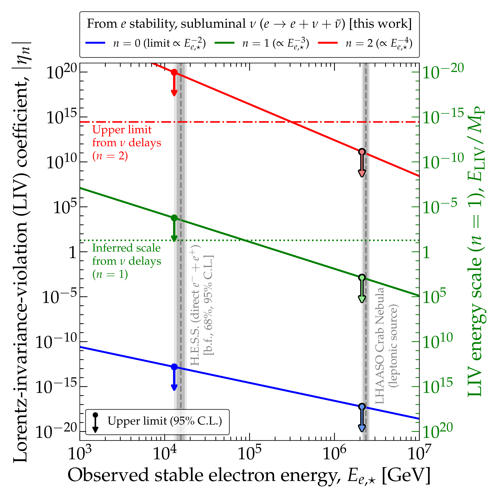
图注：\(\textbf{Neutrino Lorentz-invariance violation limits from electron stability.}\) The survival of high-energy electrons imposes strict upper bounds on the Lorentz-violating coefficient $|\eta_n|$ to prevent the catastrophic electron decay $e^- \to e^- + \nu + \bar{\nu}$. Electron stability limits are shown from the 15.5-TeV electron-positron candidates observed by H.E.S.S.~\(\cite{HESS:2024etj}\) and the 1.12-PeV gamma ray observed by LHAASO (implying 2.34-PeV electrons)~\(\cite{LHAASO:2021cbz, LHAASO:2021gok}.\) The latter invalidates, by orders of magnitude, the subluminal-LIV parameter space previously invoked to explain anomalous neutrino-photon time delays with linear ($n = 1$) energy dependence~\(\cite{Amelino-Camelia:2016ohi, Huang:2018ham, Huang:2019etr, Amelino-Camelia:2022pja, Amelino-Camelia:2025lqn},\) and establishes stringent new bounds on subluminal LIV effects with energy-independent ($n=0$), linear ($n=1$), and quadratic ($n=2$) neutrino-velocity modifications.
对应解读：对应“建议重点查看的图表”第4、5、7项，以及“关键图表逐图导读”中图4/图5关于洛伦兹破缺参数排除图、不同修正阶数和中微子时延所需参数带的讨论。
入选理由：这是本文最核心的结果图，直接展示电子稳定性给出的洛伦兹破缺系数上限，并把H.E.S.S.的15.5 TeV电子候选和LHAASO推断的PeV电子约束与过去用于解释中微子-光子时延的参数空间进行对比。它最能支撑日报的主结论：亚光速中微子时延解释所需区域被高能电子稳定性排除，且覆盖n=0、n=1、n=2不同能量依赖。
来源与置信度：\(arxiv_source\)；high；\(arxiv_source\) / main.tex:figure[1]
Fig02
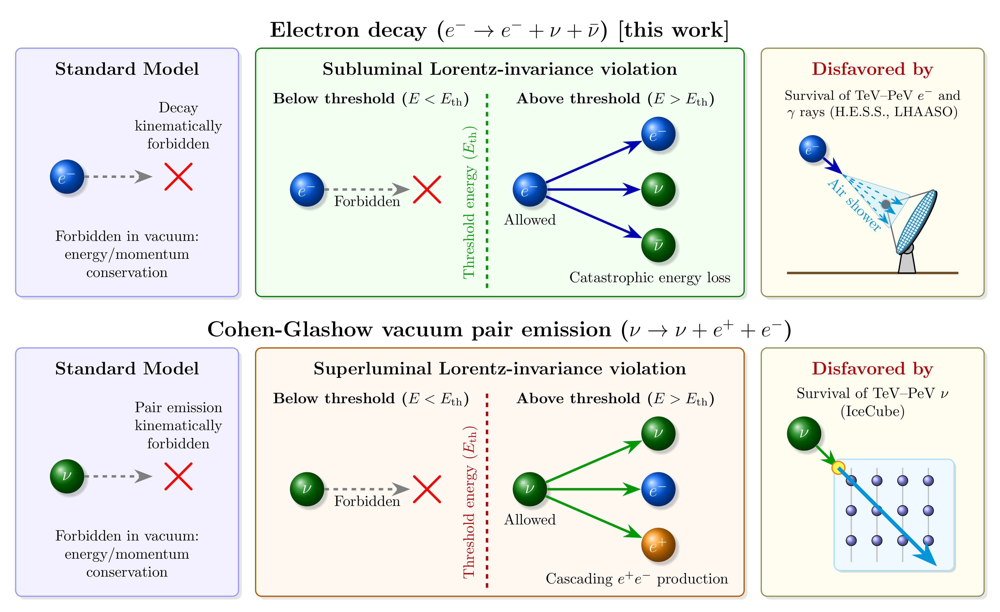
图注：\(\textbf{Anomalous vacuum decay processes induced by Lorentz-invariance violation (LIV).}\) While forbidden by exact energy-momentum conservation in the Standard Model (\textit{left panels}), LIV modifies particle dispersion relations, opening new decay and pair-emission channels above a critical energy threshold, $E_{\rm th}$ (\textit{center panels}). \(\textit{Top row:}\) The subluminal LIV-induced electron decay ($e^- \to e^- + \nu + \bar{\nu}$) derived and constrained in this work, which triggers catastrophic energy loss for high-energy electrons. \(\textit{Bottom row:}\) Contrast with the analogous superluminal Cohen-Glashow vacuum pair emission ($\nu \to \nu + e^+ + e^-$). \(\textit{Right panels:}\) depict the phenomenological survival arguments used to constrain these models: the detection of TeV--PeV cosmic-ray electrons via extensive air showers (\(\eg,\) in H.E.S.S., LHAASO) or cosmic neutrinos in neutrino telescopes (in IceCube) precludes such rapid energy losses, thereby placing stringent bounds on LIV.
对应解读：对应“建议重点查看的图表”第1、2项，以及“关键图表逐图导读”中图1/图2关于速度修正符号、阈值反应运动学、电子衰变与中微子真空对产生互补关系的讨论。
入选理由：这张图以示意方式把标准模型中禁戒的真空反应与LIV打开后的阈值过程并列展示，特别突出本文新增强调的e^-→e^-+ν+ν̄与传统Cohen-Glashow过程ν→ν+e^++e^-的互补性。它有助于读者避免把“亚光速中微子”误解为没有能损约束，并为Fig01中的排除边界提供物理机制解释。
来源与置信度：\(arxiv_source\)；high；\(arxiv_source\) / main.tex:figure[2]
强相关工作
这篇工作直接连接两条文献线。第一条是高能中微子洛伦兹破缺和真空对产生约束，典型关键词包括 “Lorentz invariance violation high-energy neutrino vacuum pair emission”、“IceCube neutrino time delay LIV”、“neutrino superluminal Cohen Glashow”。这类工作强调超光速中微子会通过 \,\(\nu\to\nu+e^-+e^+\) 快速损失能量，因而 IceCube PeV 中微子的存在已经给出强约束。本文的新意是指出亚光速侧不能被当作自由空间，因为电子稳定性提供互补限制。
第二条是宇宙线电子谱和电子稳定性约束，关键词包括 “cosmic ray electron spectrum TeV PeV Lorentz violation”、“electron stability neutrino pair emission”、“DAMPE CALET HESS LHAASO cosmic ray electrons”。这些观测通常用于研究附近脉冲星、超新星遗迹或暗物质候选，但本文把它们用于基础物理检验。若读者想追踪同类源背景，应检索 CALET、DAMPE、H.E.S.S. 和 LHAASO 的 cosmic-ray electron plus positron spectrum 论文，以及 Standard-Model Extension 中不同粒子扇区的洛伦兹破缺综述。
与相反观点或张力相关的文献主要是那些把个别 IceCube 中微子与伽马暴、耀变体或其他瞬变源的时间差解释为传播诱导洛伦兹破缺的论文。本文并不否认时间相关性研究的价值，而是要求这些解释必须通过多粒子稳定性检验。检索关键词可用 “IceCube GRB neutrino Lorentz violation time delay”、“TXS 0506+056 neutrino LIV time of flight”、“multi-messenger Lorentz invariance violation constraints”。
同一事件 / 同类源线索：
相似工作：
基础理论 / 方法工作：
- https://arxiv.org/abs/0801.0287
- https://arxiv.org/abs/0801.0288
- https://arxiv.org/abs/0801.0289
- https://arxiv.org/abs/0801.0286
相反观点 / 张力线索：
4. Energetic particle-mediated interplanetary shocks observed by Solar Orbiter
- 来源：arXiv / astro-ph.HE
- 链接：https://arxiv.org/abs/2607.02044v1
- 作者：D. Trotta, D. Lario, B. Reville, S. Raptis, O. Pezzi, H. Hietala, P. Mostafavi, J. Giacalone
- 评分：novelty 8/10，importance 8/10，relevance 8/10，final 9.00/10
- 推荐理由：Solar Orbiter observations of energetic-particle-mediated collisionless shocks provide rare direct evidence for particle pressure modifying shocks, directly relevant to cosmic-ray acceleration physics and shock microphysics.
中文题目：Solar Orbiter 看到由高能粒子反过来塑形的行星际激波
做了什么：这篇文章在 Solar Orbiter 的近日心行星际激波样本中寻找一种少见但很关键的状态：激波上游的高能质子压力不再只是被动诊断量，而是达到或超过热压与磁压之和，从而可能反过来改变激波前兆区和速度剖面。作者用超过 \(10\,\mathrm{keV}\) 的质子通量估算高能粒子压力 \(P_{\rm EP}\)，并与上游热压 \(P_{\rm Th}\) 和磁压 \(P_B\) 比较，筛出四个满足 \(P_{\rm EP}\ge P_{\rm Th}+P_B\) 的事件。这些事件位于 Solar Orbiter 激波总体中的高速、强激波、高马赫数尾部，并显示出上游激波参考系流速降低、粒子主导前兆区可延伸到约 \(10^5\) 个离子惯性长度 \(d_i\) 的迹象。核心结论是：在日球层内，至少部分行星际无碰撞激波已经进入高能粒子动力学反馈不可忽略的 regime，这是宇宙线激波加速理论长期假设但近地空间很少直接看到的现象。
为什么重要：弥散激波加速理论通常假设被加速粒子可以在强激波前方形成压力梯度，预加速并减速上游等离子体，最终使激波结构从单一跃迁变成带有前兆区的非线性结构。但在天体激波中很难原位测量粒子压力、磁场、热等离子体和速度剖面。Solar Orbiter 在 \(<1\,\mathrm{au}\) 的多仪器观测给了一个少见机会：把宇宙线加速理论中的“粒子反作用”放到可直接测量的太阳风激波里检验。
理论 / 观测 / 仪器方法价值：这项工作的价值不在于发现又一批太阳高能粒子事件，而在于提出并实施了一个相对直接的动力学筛选标准：比较 \(P_{\rm EP}\)、\(P_{\rm Th}\) 和 \(P_B\)，再结合激波马赫数、几何角、上游速度剖面和前兆区尺度判断粒子是否可能主导激波上游。这为后续 Solar Orbiter、Parker Solar Probe、近地卫星和多点任务建立了可复用的事件筛选与诊断框架。
为什么应该关注：如果你关心宇宙线起源、太阳高能粒子、无碰撞激波或空间天气预报，这篇文章值得看，因为它把“高能粒子被激波加速”推进到“高能粒子改变激波本身”。这会影响我们如何解释粒子谱、最大能量、前兆区湍流、激波压缩比以及 CME 驱动激波的空间天气效率，也提醒我们在强事件中不能把激波当成固定背景来做试验粒子加速。
展开详细解读：文章讲解、背景、理论、重点章节、图表与相关工作
文章详细讲解
科学问题：无碰撞激波可以把太阳风或 CME 驱动结构中的部分离子加速到远高于热能的能量。传统试验粒子图像把激波当作给定背景，粒子只是在两侧散射并反复穿越激波获得能量；但非线性弥散激波加速要求，当高能粒子压力 \(P_{\rm EP}\) 足够大时，它们会在上游形成压力梯度，改变流速、湍流和压缩结构。天体物理上，这正是超新星遗迹激波加速银河宇宙线时最重要、也最难直接检验的环节。本文问的是：在日球层内的行星际激波中，是否能找到 \(P_{\rm EP}\) 已经达到动力学主导的直接证据？
作者怎么做：作者分析 Solar Orbiter 在 \(<1\,\mathrm{au}\) 观测到的行星际激波，使用磁场、热等离子体和高能质子数据。关键操作是把超过 \(10\,\mathrm{keV}\) 的质子观测转换为高能粒子压力 \(P_{\rm EP}\)，再和上游热压 \(P_{\rm Th}\) 以及磁压 \(P_B\) 比较。筛选标准不是简单看粒子通量是否增强，而是要求 \(P_{\rm EP}\ge P_{\rm Th}+P_B\)，也就是高能粒子压力已经不小于上游普通等离子体和磁场提供的主要压力支撑。随后作者检查这些事件在激波速度、马赫数、激波法向、上游速度剖面和前兆区长度上的共同特征。
关键结果：作者识别出四个满足上述压力条件的激波。这四个事件不是普通激波样本的随机子集，而集中在 Solar Orbiter 激波总体中的高速、强激波、高马赫数尾部。在若干事件中，\(P_{\rm EP}\) 增强的位置与激波参考系下上游体速度下降相伴，这正是高能粒子压力梯度预先减速上游流的预期信号。作者还估计粒子主导前兆区可延伸到约 \(10^5 d_i\)，其中 \(d_i\) 是离子惯性长度；这一尺度远大于普通离子尺度的激波过渡层，说明观测到的不是局地耗散层的小扰动，而是由高能粒子输运和散射控制的大尺度结构。前兆区大小随激波几何变化，暗示磁场与激波法向夹角会影响粒子沿磁场逃逸和回返的距离。
局限和下一步：这类判断仍然依赖若干观测与模型假设。首先，\(P_{\rm EP}\) 来自有限能段的质子测量，低能截断、未观测高能尾、各向异性和重离子贡献都会影响压力估计。其次，单航天器穿越把空间结构和时间演化混在一起，前兆区长度与速度剖面的解释需要假设激波在穿越期间近似稳定。第三，激波几何、法向和激波速度的不确定性会传递到马赫数、激波参考系流速和 \(d_i\) 标度。下一步最有价值的是把 Solar Orbiter、Parker Solar Probe 和近地多点观测结合起来，区分时间变化与空间结构，并用混合模拟或全粒子模拟检验观测到的压力比、速度减速和湍流增强是否能由同一套非线性加速模型同时解释。
关键结果是怎么做出来的
本文最重要的证据链从样本筛选开始。作者不是只挑选太阳高能粒子通量大的时段，而是在 Solar Orbiter 已识别的行星际激波群体中，逐个计算上游高能质子压力 \(P_{\rm EP}\)、热压 \(P_{\rm Th}\) 与磁压 \(P_B\)。真正进入核心样本的是四个满足 \(P_{\rm EP}\ge P_{\rm Th}+P_B\) 的激波。这个条件很强，因为它要求高能粒子压力不仅相对背景增强，而且达到足以和磁场、热等离子体共同竞争的动力学量级。
事件数方面，论文的核心不是大样本统计显著性，而是从一个较大的 Solar Orbiter 激波总体中找出高马赫数尾部的极端事件。作者将这四个事件与总体激波分布对比，重点看激波速度、快磁声马赫数或相关马赫数、压缩强度和激波几何。支撑结论的关键图表应包括总体分布中的事件位置、各事件的时间序列、压力分量比较以及速度在激波参考系中的变化。读者应关注四个事件是否确实系统性落在强激波尾部，而不是由个别仪器噪声或背景选择造成。
显著性或置信度的逻辑更接近物理阈值判据和多量一致性检验，而不是单一 \(p\)-value。压力比 \(P_{\rm EP}/(P_{\rm Th}+P_B)\) 是核心诊断量；如果这个比值在上游前兆区持续大于或接近 \(1\)，并且同时看到激波参考系上游速度 \(u_{\rm sh}\) 下降，就比单独看到粒子增强更有说服力。作者还把前兆区尺度用离子惯性长度 \(d_i\) 归一化，得到可达 \(\sim10^5 d_i\) 的尺度，这支持“高能粒子输运尺度”而非“薄激波耗散层”的解释。
模型比较方面，隐含的竞争解释至少有三类：第一，普通试验粒子加速，只产生高能粒子增强但不改变流体；第二，局地暂态结构或 CME sheath 中的压缩与湍流，使压力估计看起来偏大；第三，真正的粒子介导激波，上游存在由 \(P_{\rm EP}\) 梯度驱动的减速和扩展前兆区。本文最强的论点在于多个诊断量方向一致：高 \(P_{\rm EP}\)、高马赫数、强激波、上游速度变化和几何相关的前兆区长度。
系统误差主要来自压力估算和激波参数。\(P_{\rm EP}\) 需要从有限能段积分，能谱外推、探测器能道响应、粒子各向异性和背景扣除都会改变绝对值；\(P_{\rm Th}\) 依赖密度和温度，\(P_B\) 依赖磁场幅值，二者通常较直接但仍会受时间平均窗口影响。激波法向、激波速度和上游区间选择影响马赫数及激波参考系速度剖面。稳健性检验应检查不同上游窗口、不同能量下限、不同法向解和不同平滑尺度下，四个事件是否仍满足 \(P_{\rm EP}\ge P_{\rm Th}+P_B\)。
展开背景、理论、公式、模型、章节和图表导读
背景知识
研究对象是行星际无碰撞激波，通常由日冕物质抛射、共转相互作用区或高速太阳风结构驱动。所谓无碰撞，是指粒子平均自由程远大于激波厚度，普通库仑碰撞不足以耗散动能；激波跃迁、加热和粒子加速主要依赖电磁场、波粒相互作用和等离子体不稳定性。行星际激波是研究天体激波的天然实验室，因为航天器能原位测量磁场、等离子体速度、密度、温度和粒子能谱。
历史问题来自宇宙线加速理论。弥散激波加速可以自然产生近似幂律能谱，但在高效率极限下，被加速粒子的压力不应再被忽略。理论上，宇宙线压力会在激波上游形成前兆区，使流体在到达气体亚激波之前已经被逐渐减速和压缩，导致总压缩比、谱指数、湍流强度和最大能量都发生变化。这个非线性图像在超新星遗迹、星系团激波和日球层终端激波中常被讨论，但直接观测证据很少，因为大多数天体激波无法原位测量压力分量。
Solar Orbiter 让这个问题现在值得重新看。它在较小日心距离处穿越行星际激波，那里 CME 驱动结构更年轻、更快，高能粒子通量和激波马赫数可能比 \(1\,\mathrm{au}\) 附近更高。同时，Solar Orbiter 的磁场、太阳风等离子体和高能粒子载荷能较完整地覆盖本文需要的压力预算。相比只用近地卫星，近日心观测更容易捕捉尚未充分衰减和混合的强激波。
常见误区之一是把“粒子通量很高”等同于“粒子动力学重要”。高能粒子数目可以很少但能量高，压力需要按动量或能量加权积分；相反，高通量低能粒子未必能主导总压力。另一个误区是把激波前的粒子增强都理解为激波局地加速。实际上，上游粒子可能来自远处磁连接、先前事件或 CME 内部结构。本文的价值在于用压力比较、速度剖面和前兆区尺度组合判断，而不是只凭粒子增强下结论。
基础理论 / 方法脉络
从物理图像看，激波是超磁声流遇到障碍或快速驱动结构后形成的不可逆跃迁。上游流的动能通量在激波处转化为热能、磁场压缩、湍流和非热粒子能量。若非热粒子只占很小压力，可以采用试验粒子近似；若非热粒子压力 \(P_{\rm EP}\) 与热压 \(P_{\rm Th}\) 或磁压 \(P_B\) 可比，就必须把它们写入动量和能量守恒。
本文的关键量是三种压力。热压 \(P_{\rm Th}\) 主要由密度和温度决定，反映普通太阳风等离子体的随机热运动；磁压 \(P_B\) 由磁场强度决定，反映磁场对压缩的抵抗；高能粒子压力 \(P_{\rm EP}\) 来自超过 \(10\,\mathrm{keV}\) 的质子分布函数或微分通量积分。三者单位相同，因而可直接比较。判据 \(P_{\rm EP}\ge P_{\rm Th}+P_B\) 表示高能粒子已经足以成为上游动量平衡中的主导项之一。
观测方法的核心是把单航天器时间序列转换到激波参考系。需要确定激波到达时刻、上游和下游平均态、激波法向、激波速度以及磁场与法向夹角。然后把上游区域中粒子压力增强的时间长度乘以激波参考系中的流速，估计前兆区空间尺度，并用离子惯性长度 \(d_i\) 归一化。若前兆区达到 \(10^5 d_i\)，就远超离子皮肤深度控制的局地跃迁层，说明扩散和散射输运是主要尺度来源。
主要退化关系在于空间与时间混淆、能谱积分范围和几何效应。单点观测无法直接区分航天器穿越一个静态前兆区，还是激波和粒子源本身随时间演化。\(P_{\rm EP}\) 对能谱低能端很敏感，而低能端也最容易受太阳风热尾、仪器背景和各向异性的影响。准平行激波更容易让粒子沿磁场向上游传播，准垂直激波的前兆区通常较短；因此几何角会同时影响观测到的粒子压力和前兆区长度。
公式与推导
第一步是压力预算。对非相对论等离子体，热压通常写作
其中 \(n\) 是数密度，\(k_{\rm B}\) 是玻尔兹曼常数，\(T\) 是温度；若分别处理电子和离子，应把各组分压力相加。磁压为
其中 \(B\) 是磁场强度，\(\mu_0\) 是真空磁导率。这两个量给出未计入非热粒子时上游介质的主要压力支撑。
第二步是从粒子分布函数得到高能粒子压力。若质子分布近似各向同性，动压张量的标量部分可写为
其中 \(p\) 是动量，\(v(p)\) 是粒子速度，\(f(p)\) 是相空间分布函数，\(p_{\min}\) 对应本文采用的约 \(10\,\mathrm{keV}\) 低能阈值。这个式子说明压力对高动量粒子有额外权重，因此不能只看粒子数通量。
第三步是把观测到的微分强度与压力相连。若仪器给出按能量的微分强度 \(j(E)\)，在各向同性近似下可用
理解为对能道求和的连续极限；实际分析会使用离散能道响应和几何因子。非相对论近似下 \(E=p^2/(2m_p)\) 与 \(v=p/m_p\)，其中 \(m_p\) 是质子质量。
第四步是本文的动力学筛选量，可定义为
当 \(\Xi\ll1\) 时，高能粒子可视为被动示踪；当 \(\Xi\gtrsim1\) 时，高能粒子压力必须进入上游动量平衡。本文四个核心事件满足 \(\Xi\ge1\)。
第五步是把粒子压力写入一维稳态动量守恒。沿激波法向 \(x\) 有近似关系
其中 \(\rho\) 是质量密度，\(u\) 是激波参考系下沿法向的流速。若上游 \(P_{\rm EP}\) 向激波方向增加，为保持总动量通量守恒，\(\rho u^2\) 往往下降，表现为上游流在到达亚激波前被预先减速。
第六步可用压力梯度写成流速变化的局地形式。在忽略强时间变化并近似一维时，
若 \(dP_{\rm EP}/dx\) 是主导项，就得到粒子介导前兆区的基本诊断：高能粒子压力增强应与上游速度下降共现。
第七步是尺度估计。离子惯性长度为
其中 \(c\) 是光速，\(\omega_{pi}\) 是离子等离子体频率，\(m_i\) 和 \(n_i\) 是离子质量和数密度，\(e\) 是元电荷，\(\epsilon_0\) 是真空介电常数。把前兆区长度写成 \(L_{\rm foreshock}/d_i\) 可以比较不同密度环境下的激波结构。
第八步是从时间序列估算前兆区长度。若航天器在激波参考系中扫过上游结构，近似有
其中 \(u_{\rm rel}\) 是激波相对上游等离子体或航天器的有效扫掠速度，\(\Delta t\) 是 \(P_{\rm EP}\) 增强持续时间。本文报告的粒子主导区域可达 \(\sim10^5 d_i\)，意味着 \(L_{\rm foreshock}\) 由高能粒子扩散长度而非微观激波厚度控制。
第九步是与弥散输运的联系。若粒子沿法向有效扩散系数为 \(\kappa\)，稳态上游扩散长度近似为
其中 \(u_1\) 是上游激波参考系流速。准平行几何通常有更大的沿磁场逃逸距离，因此 \(L_{\rm diff}\) 与激波几何相关，这与本文关于前兆区尺度依赖几何的结论相连。
模型拟合 / 应用方法
这类工作的“拟合”首先体现在激波参数反演。需要从上游和下游磁场、速度、密度的平均态估计激波法向、激波速度、压缩比和马赫数。常见方法包括磁场协方差、Rankine-Hugoniot 条件、多变量最小二乘和不同上游下游窗口的交叉检验。拟合量本身不是最终物理结论，但它们决定了激波参考系速度剖面和几何角，因此会强烈影响后续解释。
第二层拟合是粒子能谱到压力的转换。观测给出离散能道计数或通量，需经过几何因子、能道宽度、背景扣除和可能的死时间修正，得到微分强度或相空间分布。若能谱在观测能段内近似幂律，可拟合谱指数和归一化，再积分得到 \(P_{\rm EP}\)。这里的退化很明显：低能截断越低，非相对论粒子数和压力贡献越大；但低能段也更容易与热尾、局地扰动和仪器阈值混淆。
第三层统计判断是压力比 \(\Xi=P_{\rm EP}/(P_{\rm Th}+P_B)\) 的不确定性传播。\(P_{\rm Th}\) 的误差来自 \(n\) 和 \(T\)，\(P_B\) 的误差通常较小但受平均窗口和波动影响，\(P_{\rm EP}\) 的误差则包含计数统计、能谱插值、各向异性和系统标定。实际应用中应检查 \(\Xi\) 的置信区间是否稳健跨过 \(1\)，而不是只看名义中心值。
残差诊断应围绕“粒子压力是否解释了速度变化”展开。若在 \(P_{\rm EP}\) 上升的前兆区内，激波参考系上游速度没有任何系统下降，粒子介导解释会变弱；反之，若速度下降与 \(P_{\rm EP}\) 梯度同相，并且热压或磁压变化不足以解释动量通量变化，结论会增强。还应检查磁场压缩、湍流增强和粒子各向异性是否与准平行或准垂直几何预期一致。
模型可能失效的地方包括非稳态、三维结构和远程磁连接。CME sheath 内部可以有复杂压缩、剪切和湍流，单航天器看到的速度下降未必全由粒子压力导致。粒子可能沿磁力线来自不同位置的激波段，而不是本地激波加速；此时本地 \(P_{\rm EP}\) 与本地速度结构的因果关系会被削弱。因此最理想的后续拟合应把观测时间序列与混合模拟或全球 MHD 加粒子输运模型联合比较，而不仅是逐点压力预算。
重点章节 / 结果段落怎么读
数据与样本部分应先读。重点看 Solar Orbiter 使用了哪些仪器数据、激波列表如何定义、上游和下游时间窗口如何选择，以及超过 \(10\,\mathrm{keV}\) 的质子压力如何从能道数据计算。读者要特别关注是否只使用质子、是否考虑各向异性、以及能量积分上下限如何影响 \(P_{\rm EP}\)。
激波参数方法部分是第二个重点。这里应检查激波法向、激波速度、马赫数和几何角的确定方式。因为本文把四个事件放在高马赫数尾部，并讨论前兆区尺度依赖激波几何，所以法向和速度的不确定性直接关系到核心结论。
主结果部分应围绕四个事件的时间序列阅读。看每个事件中 \(P_{\rm EP}\)、\(P_{\rm Th}\)、\(P_B\)、磁场、密度、温度、流速和粒子通量在激波前后的相对时序。真正重要的是 \(P_{\rm EP}\ge P_{\rm Th}+P_B\) 是否在上游持续出现，以及是否与激波参考系速度下降同步。
总体统计和比较部分用于判断这些事件是否特殊。读者应看四个事件在 Solar Orbiter 激波总体中的位置，例如速度、马赫数和压缩强度分布。若它们确实集中在强激波尾部，说明粒子介导状态可能需要高马赫数和强加速效率，而不是普通行星际激波的常态。
讨论与局限部分要重点看作者如何处理替代解释。包括前兆区长度估计、几何依赖、单点观测限制、压力估计系统误差，以及与非线性弥散激波加速理论的联系。附录或稳健性检验若有，应优先看不同时间窗口、不同能量阈值和不同激波法向解下结论是否保持。
建议重点查看的图表
-
激波总体参数分布图：看四个粒子主导事件在激波速度、马赫数、压缩比或几何角分布中的位置，确认它们是否确实处在强激波高端尾部。
-
单事件多面板时间序列：看磁场、密度、温度、太阳风速度、粒子通量、\(P_{\rm EP}\)、\(P_{\rm Th}\) 和 \(P_B\) 的相对时序，尤其是 \(P_{\rm EP}\) 超过 \(P_{\rm Th}+P_B\) 的持续时间。
-
压力比 \(\Xi=P_{\rm EP}/(P_{\rm Th}+P_B)\) 图：看 \(\Xi\) 是否显著超过 \(1\)，是否只是单个尖峰，还是在上游前兆区连续保持较高。
-
激波参考系速度剖面图：看 \(P_{\rm EP}\) 增强区是否对应上游流速下降，以及这种下降是否超过测量噪声和普通波动幅度。
-
前兆区尺度与几何角关系图：看 \(L_{\rm foreshock}/d_i\) 是否随激波几何系统变化，准平行与准垂直事件是否表现不同。
-
事件参数表：检查每个事件的日心距离、激波速度、马赫数、法向角、压力分量、能量积分范围和不确定性。表格往往比图更适合发现某个事件是否由边界选择驱动。
关键图表逐图导读
图 1：建议把它作为样本定位图来读。横轴可能是激波速度、马赫数或事件序号，纵轴可能是压力比或另一个激波强度指标；数据点代表 Solar Orbiter 激波总体，四个核心事件应被突出标记。读图重点是这些事件是否只是压力比高，还是同时位于高速度和高马赫数区域。陷阱是不要把少数极端点自动当成统计相关，必须看总体样本覆盖和选择函数。
图 2：通常会是某个核心事件的多面板时间序列。横轴为时间，纵向面板依次展示磁场、等离子体速度、密度、温度、粒子通量和压力分量；垂直线标出激波到达时刻，上游区在一侧。读者应看 \(P_{\rm EP}\) 开始增强的位置是否早于激波跃迁，以及 \(P_{\rm EP}\) 超过 \(P_{\rm Th}+P_B\) 的区间是否清楚。读图陷阱是时间序列中的尖峰可能来自局地波动或计数统计，应看持续结构而非单点峰值。
图 3：若展示四个事件的压力预算，横轴可为相对激波时间或归一化距离，纵轴为 \(P_{\rm EP}\)、\(P_{\rm Th}\)、\(P_B\) 或 \(\Xi\)。模型线或阴影区可能表示阈值 \(\Xi=1\) 与不确定性范围。主要结论应是四个事件都存在粒子压力主导区。读图时要注意纵轴是否为对数坐标；对数坐标上看似小的间隔可能对应压力的大倍数差异。
图 4：速度剖面图最能支撑“粒子介导”。横轴为时间、距离或 \(d_i\) 归一化距离，纵轴为激波参考系上游流速；若同时叠加 \(P_{\rm EP}\) 或 \(\Xi\)，应检查速度下降与压力增强是否空间同位。陷阱是激波速度和法向的不确定性会改变速度投影，因此要看误差条或不同法向解的稳健性。
图 5：前兆区尺度与激波几何关系图应显示 \(L_{\rm foreshock}/d_i\) 随 \(\theta_{Bn}\) 或相关几何指标的变化。若准平行事件前兆区更长，符合粒子沿磁场扩散的直觉；若离散度很大，则说明湍流水平、粒子能量和非稳态也很重要。读图时不要把几何相关性过度解释为唯一因果，因为四个事件样本很小。
图 6 或表 1：事件汇总表应核查所有核心数值，包括日心距离、上游密度、磁场、温度、激波速度、马赫数、\(P_{\rm EP}\)、\(P_{\rm Th}\)、\(P_B\)、\(\Xi\) 和前兆区长度。读者应特别看不确定性是否足以使某些事件从 \(\Xi\ge1\) 掉到 \(\Xi<1\)，以及不同事件是否由同一能量范围和同一处理流程得到。
论文原图 / 可嵌入图片
Fig01
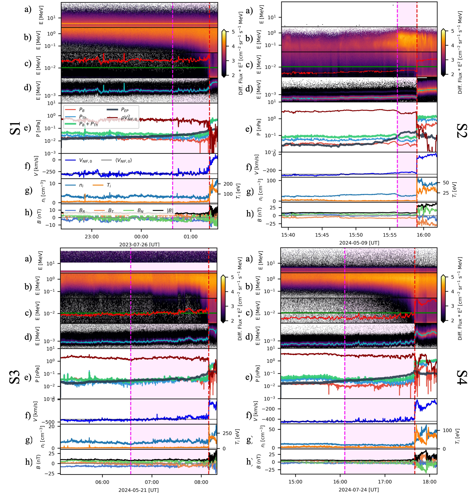
图注：Overview of the four energetic particle-mediated shocks. a)–d): Differential energy flux measured by the sunward apertures of HET/EPT (a,b), pixel-averaged STEP (c), and angle-averaged SWA-PAS (d). The cyan line marks the peak of the thermal proton distribution $E_{bulk}$, the red line shows $10 E_{bulk}$, and the green line indicates the lower integration limit $E_1$ used in the energetic particle pressure calculation. e): Evolution of the pressure contributions: magnetic pressure $P_B$ (red), thermal pressure $P_{Th}$ (blue), energetic particle pressure $P_{EP}$ (black), and $P_{Th}+P_{EP}$ (green) and ram pressure $\rho V_{NIF,0}^2$ along the shock normal in the shock rest frame (dark red). Magenta shading marks intervals where $P_{EP} \geq P_B + P_{Th}$. f): Plasma velocity along the shock normal in the shock rest frame (blue), with the grey line indicating the upstream average. Panels g) and h) show the ion density and temperature, and the magnetic field magnitude and components, respectively.
对应解读：对应“单事件多面板时间序列”“压力比/压力预算”“激波参考系速度剖面图”，也是关键图表逐图导读中图2、图3、图4所描述诊断量的核心合并图。
入选理由：这张图同时给出粒子能谱、积分下限、磁压/热压/高能粒子压、满足 \(P_EP\) ≥ \(P_B+P_Th\) 的着色区间，以及激波静止系中沿法向的等离子体速度，是支撑论文主结论“高能粒子压力主导并可能减速上游流”的最关键证据。它比其他候选图更直接展示 \(P_EP\) 超过背景压力的持续区间和速度剖面的同位变化。
来源与置信度：\(arxiv_source\)；high；\(arxiv_source\) / \(Energetic_Particle_Pressure_R1.tex\):figure[1]
Fig02
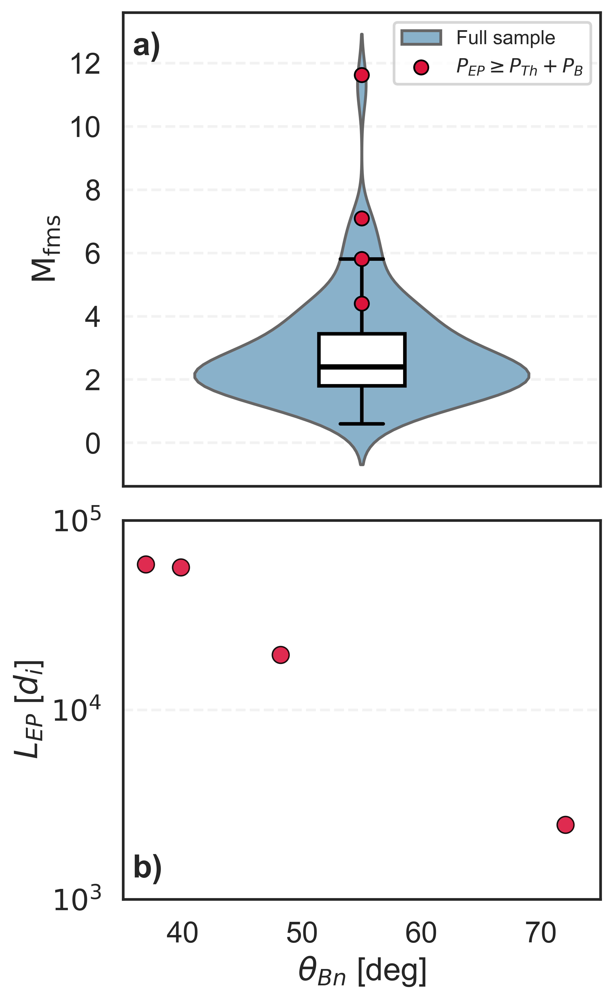
图注：a) Distribution of the fast magnetosonic Mach number $\mathrm{M_{fms}}$ for the Solar Orbiter shocks. The violin plot shows the full distribution, with the box indicating the interquartile range and median. The four shocks identified in this work with $P_{EP} \geq P_B + P_{Th}$ are highlighted in red. b) Upstream precursor length $L_{EP}$ as a function of the shock normal angle $\theta_{Bn}$ for the four energetic particle-mediated shocks.
对应解读：对应“激波总体参数分布图”和“前兆区尺度与几何角关系图”，也对应关键图表逐图导读中的图1和图5。
入选理由：左图把四个 \(P_EP\) ≥ \(P_B+P_Th\) 事件放在 Solar Orbiter 激波总体的快磁声马赫数分布中，检验它们是否位于高马赫数尾部；右图直接给出前兆区长度 \(L_EP\) 与激波法向角 \(theta_Bn\) 的关系，是判断前兆尺度是否受激波几何控制的主要图。
来源与置信度：\(arxiv_source\)；high；\(arxiv_source\) / \(Energetic_Particle_Pressure_R1.tex\):figure[2]
Fig03
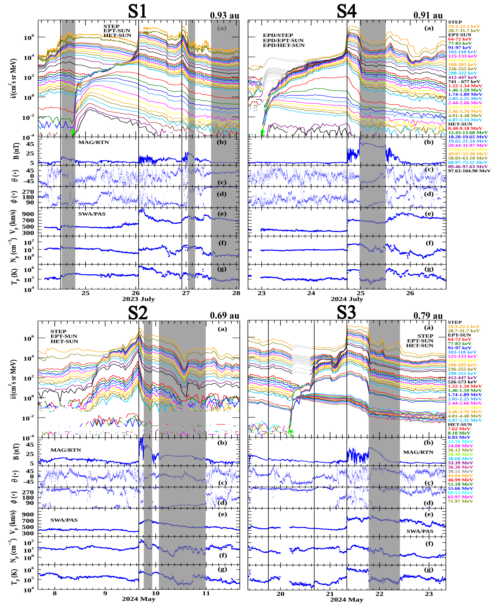
图注：Large-scale context for the Shocks 1-4 (in counterclockwise order) as seen from Solar Orbiter. Each panel is center at the passage of the shock and covers two days prior and after the shock passage. Each subpanel shows (a) hourly averages of energetic particle intensities measured at selected energy channels of STEP and the sun apertures of EPT and HET; one-minute averages of magnetic field (b) magnitude, and (c-d) angular direction in RTN coordinates; 10-minute averages of the solar wind proton (e) bulk speed, (f) density, and (g) temperature. The vertical solid lines indicate the passage of IP shocks and the shaded gray columns the passage of ICMEs as identified in helioforecast.space/icmecat \(\citep{moestl_2026}.\)
对应解读：对应“单事件多面板时间序列”的大尺度背景检查，以及详细解读中关于 CME/ICME sheath、远程磁连接和时间演化可能性的局限讨论。
入选理由：该图覆盖每个激波前后数天的粒子强度、磁场方向、太阳风速度、密度和温度，并标出 ICME 区间，可用于判断四个事件是否处在复杂大尺度结构中。它不直接给出 \(P_EP\) 压力预算，但有助于解释事件背景和排查单航天器时间序列中的非稳态或结构性干扰。
来源与置信度：\(arxiv_source\)；high；\(arxiv_source\) / \(Energetic_Particle_Pressure_R1.tex\):figure[3]
Fig04
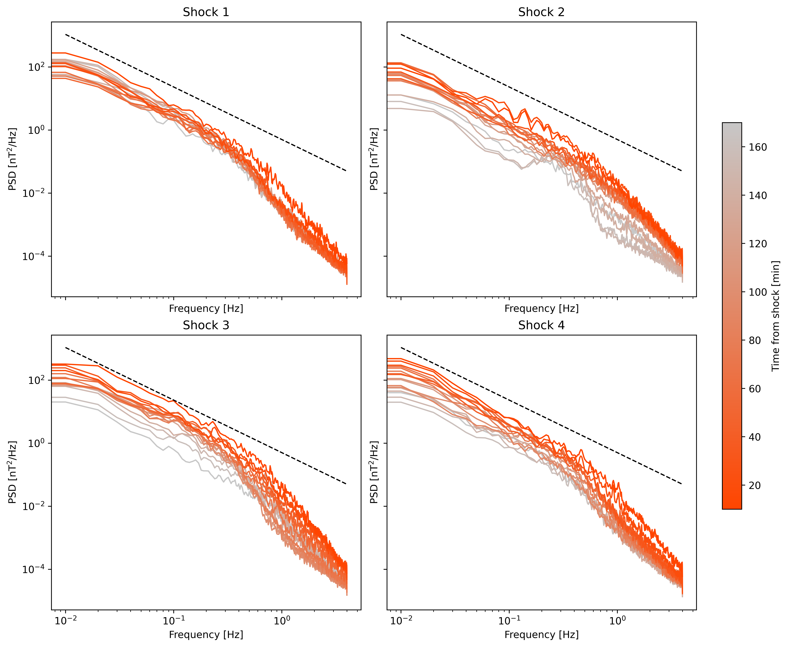
图注：Magnetic field power spectral densities upstream of the four shock events. For each shock (panels 1–4), spectra are computed using sliding 20-minute windows shifted by 10 minutes and ordered by their time relative to the shock crossing, with darker colors corresponding to spectra closer to the shock. The dashed line shows a reference $f^{-5/3}$ slope.
对应解读：对应模型拟合与残差诊断中关于上游湍流、粒子散射和粒子压力增强区伴随波动变化的讨论。
入选理由：该图展示四个激波上游磁场功率谱随接近激波的演化，并与 \(f^{-5/3}\) 参考斜率比较，可辅助判断粒子介导前兆区是否伴随增强的磁湍流和散射环境。它对主压力判据的直接性弱于 Fig01 和 Fig02，但能补充说明高能粒子、上游波动与激波结构耦合。
来源与置信度：\(arxiv_source\)；high；\(arxiv_source\) / \(Energetic_Particle_Pressure_R1.tex\):figure[4]
强相关工作
这篇工作与同类源研究的关系主要在于：行星际激波一直是弥散激波加速的近场实验室，早期近地和 Helios、ACE、Wind、STEREO 观测已经显示准平行激波前方有高能粒子和 ULF 波增强，但多数研究关注粒子加速效率、注入和谱形，而不是直接证明 \(P_{\rm EP}\) 超过热压与磁压并改变上游流。本文把重点放在“粒子压力介导激波结构”，因此更接近非线性宇宙线改性激波的观测检验。检索关键词可用 “interplanetary shocks energetic particle pressure”, “Solar Orbiter shock energetic particles”, “particle mediated collisionless shocks”, “nonlinear diffusive shock acceleration heliosphere”。
基础理论联系包括 Drury 关于弥散激波加速的综述、Blandford 与 Eichler 关于宇宙线源和非线性激波的经典综述，以及 Bell 关于宇宙线流驱动不稳定性的工作。这些理论通常用于超新星遗迹和银河宇宙线问题，但本文显示日球层强行星际激波也能短暂进入相似的动力学反馈状态。相反观点或张力主要来自试验粒子解释和单点观测限制：高能粒子增强未必本地生成，速度剖面未必由粒子压力唯一驱动，有限能段压力积分可能低估或高估真实 \(P_{\rm EP}\)。检索关键词可用 “test particle diffusive shock acceleration”, “shock precursor spacecraft observations”, “Solar Orbiter interplanetary shock catalog”, “foreshock energetic particles anisotropy”。
同一事件 / 同类源线索：
- https://arxiv.org/abs/2607.02044
- https://arxiv.org/pdf/2607.02044
- https://sci.esa.int/web/solar-orbiter
相似工作：
- https://ui.adsabs.harvard.edu/abs/1981JGR....86.4319L/abstract
- https://ui.adsabs.harvard.edu/abs/2005SSRv..118..363R/abstract
基础理论 / 方法工作：
- https://ui.adsabs.harvard.edu/abs/1983RPPh...46..973D/abstract
- https://ui.adsabs.harvard.edu/abs/1987PhR...154....1B/abstract
- https://ui.adsabs.harvard.edu/abs/1978MNRAS.182..147B/abstract
相反观点 / 张力线索：
（未提供）
5. X-ray Fourier lag-frequency spectra modulated by stochastic turbulent acceleration in the jets of high-frequency-peaked BL Lac
- 来源：arXiv / astro-ph.HE
- 链接：https://arxiv.org/abs/2607.01606v1
- 作者：Guang-Cheng Xiao, Wen Hu, Da-Guo Jiang, Jun-Xian Wang, Zhen-Yi Cai, Da-Hai Yan, Fang-Wu Lu
- 评分：novelty 7/10，importance 7/10，relevance 9/10，final 8.70/10
- 推荐理由：Theoretical framework for X-ray lag-frequency spectra in HBL jets, explicitly tied to SSC cooling and TeV-bright blazar flares; strong relevance to blazar/TeV gamma-ray source physics.
中文题目：随机湍流加速如何调制高峰频 BL Lac 喷流中的 X 射线傅里叶时滞谱
做了什么：这篇文章用一-zone 轻子喷流模型研究高峰频 BL Lac 天体在 X 射线不同能段之间的傅里叶时滞-频率谱。作者把随机湍流加速、同步辐射冷却、同步自康普顿冷却和粒子逃逸放在同一个时间依赖框架里，说明为什么同类耀变中既能看到硬滞后，也能看到软滞后，并且两者之间存在可连续过渡的时滞状态。核心结论是：随机湍流加速会延缓高能电子冷却，从而放大或改写过渡区和软滞后区的时滞；非线性的同步自康普顿冷却还能进一步增强时滞幅度，尤其有助于解释 TeV 亮耀发中较大的 X 射线时滞以及“耀发持续越久、时滞越大”的经验趋势。
为什么重要：X 射线时滞是少数能直接触及喷流内部加速、冷却和逃逸时间尺度的观测量之一。单看能谱往往存在严重退化：不同的电子注入、磁场、Doppler 因子和辐射区大小可以给出相近的同步辐射谱。但时滞-频率谱保留了扰动传播和电子能量演化的相位信息，因此能为区分随机加速、冷却主导和逃逸主导情形提供额外约束。
理论 / 观测 / 仪器方法价值：本文的价值主要在方法和解释框架：它不是针对某一次耀发做经验拟合，而是给出一个能同时产生硬滞后、软滞后和过渡状态的统一时间依赖模型。对理论而言，它把随机湍流加速对高能电子冷却的抑制作用具体投射到可观测的傅里叶时滞谱上；对观测而言，它告诉我们应该如何把 XMM-Newton、NuSTAR、Swift 或未来高通量 X 射线任务的分能段光变曲线转化为喷流微物理约束。
为什么应该关注：如果你关心 BL Lac 喷流中粒子到底是被冲击、湍流还是磁重联加速，或者关心 TeV blazar 的多波段耀发为什么有时出现正时滞、有时出现负时滞，这篇文章值得看。它提醒我们：时滞的符号本身并不是简单的“加速慢”或“冷却慢”标签，时滞幅度和频率依赖才真正编码了加速、冷却、逃逸和同步自康普顿非线性之间的竞争。
展开详细解读：文章讲解、背景、理论、重点章节、图表与相关工作
文章详细讲解
科学问题：高峰频 BL Lac 天体的同步辐射峰通常落在紫外到 X 射线波段，因此 X 射线光变直接追踪最高能电子的加速和冷却。观测上，不同 X 射线能段之间常出现时滞：高能 X 射线落后低能 X 射线时通常称为硬滞后或正时滞，低能 X 射线落后高能 X 射线时通常称为软滞后或负时滞。难点在于，同一个源在不同耀发、不同能段和不同时间尺度上都可能切换时滞符号，简单的“加速时间大于冷却时间”或“冷却时间大于加速时间”图像不够用。
作者怎么做：文章建立了一个通用的一-zone 轻子模型，把辐射区视为具有磁场、电子分布、逃逸过程和湍流随机加速的均匀区。电子能量分布随时间演化，并通过同步辐射和同步自康普顿过程产生 X 射线和高能辐射。作者重点计算不同 X 射线能带光变曲线之间的傅里叶交叉谱，从相位差得到频率依赖的时滞，而不是只比较两条光变曲线峰值到达时间。
关键结果：模型自然给出两个清晰时滞区间：硬滞后区和软滞后区，并且二者之间存在过渡状态。随机湍流加速不是一个只负责把电子推向高能的附加项；它还会改变高能电子的有效冷却过程，使过渡区和软滞后区的时滞被放大或改变形状。同步自康普顿冷却由于依赖电子分布自身产生的光子场，具有非线性反馈，因此在 TeV 亮耀发中可以进一步增强时滞幅度。
局限和下一步：一-zone 模型的优势是透明和可控，但真实喷流可能有多区结构、能量分层、几何传播效应、磁场湍动的空间非均匀性以及观测采样窗口影响。本文的结论更像是“可行的物理机制和诊断框架”，而不是对某一个源的唯一解释。下一步应把模型同具体源的多历元 X 射线光变、TeV 光变和能谱演化联合拟合，并检验时滞-频率谱、能谱滞回环和多波段互相关能否由同一组参数同时解释。
关键结果是怎么做出来的
这篇文章不是观测样本统计论文，因此没有新的事件数、源表或耀发样本量；它的证据链来自时间依赖数值实验和傅里叶诊断。作者选择高峰频 BL Lac 的典型一-zone 轻子喷流参数区间，构造电子加速、冷却、逃逸和辐射之间的演化，然后从模拟得到的软、硬 X 射线光变曲线计算交叉谱和时滞-频率谱。读者应把“样本选择”理解为参数空间和物理情形选择，而不是天体目录筛选。
最重要的结果是时滞谱可以被分成硬滞后、软滞后和过渡三类。硬滞后对应较高能光子变化相对滞后，通常意味着电子被逐步加速到更高能量的时间尺度在可观测频率范围内可见；软滞后对应低能光子相对滞后，通常与高能电子先冷却再贡献低能发射有关。过渡区则说明这两个过程不是非黑即白，而是在特定频率、能量和参数组合下同时竞争。
统计显著性方面，本文的“显著性”不是以观测置信度给出，而体现在模型输出的系统性趋势：改变随机湍流加速强度、逃逸时间、磁场和同步自康普顿冷却贡献后，时滞符号和幅度发生可重复的规律性变化。应重点关注论文中展示时滞-频率谱随参数变化的图，以及比较仅同步冷却与包含同步自康普顿非线性冷却时的模型曲线。
模型比较的核心是物理项开关和参数扫描，而不是传统的贝叶斯证据或信息准则。读者应查看作者是否分别展示了无随机湍流加速、弱随机湍流加速、强随机湍流加速，以及同步自康普顿冷却弱和强的情形。真正支撑结论的是：这些模型不是只改变光变幅度，而是系统性地改变相位差、时滞符号转换频率和时滞峰值幅度。
主要系统误差来自模型理想化：一-zone 均匀区假设会压缩真实喷流中的空间传播时延；粒子逃逸时间的参数化可能与湍流扩散耦合；同步自康普顿光子场若用局域近似处理，可能低估或高估辐射区内部光子响应时间。稳健性检验应关注作者是否改变能带选择、扰动持续时间、初始电子分布和冷却通道权重后仍能得到同样的时滞分类。
从图表证据看，最关键的不是某条曲线是否正好复现实测时滞数值，而是曲线族是否呈现连续的物理排序：随机湍流加速越能维持高能电子，过渡和软滞后越容易被放大；同步自康普顿冷却越强，长持续耀发或 TeV 亮态中较大时滞越容易出现。这个趋势若能在未来多源、多历元观测中被验证，将比单源峰值时滞拟合更有说服力。
展开背景、理论、公式、模型、章节和图表导读
背景知识
高峰频 BL Lac 是 blazar 的一个子类，其喷流大致指向观测者，非热辐射被相对论性 Doppler 增强。它们的低能峰通常由电子同步辐射产生，并可延伸到 X 射线波段；高能峰通常可由同步自康普顿过程或外部康普顿过程解释。由于外部辐射场在许多高峰频 BL Lac 中较弱，一-zone 同步自康普顿模型长期是解释其宽带谱能量分布的基准模型。
X 射线时滞研究的历史问题是：观测确实显示软、硬 X 射线之间存在从几百秒到数小时不等的延迟，但不同仪器、不同耀发、不同分析方法给出的时滞符号和幅度并不总一致。早期工作常用互相关函数或峰值时间差来描述时滞，后来傅里叶相位滞后方法被更多采用，因为它能区分不同时间尺度上的响应。
从理论上说，硬滞后和软滞后最直观地对应加速和冷却竞争。若电子从低能逐步加速到能辐射硬 X 射线的能量，高能光变可能落后；若高能电子迅速冷却并随后贡献低能光子，低能光变可能落后。但真实喷流还包含逃逸、湍流扩散、非线性辐射反馈和几何光行时效应，导致时滞符号并不能被单一时间尺度直接决定。
现在值得重新看这个问题，是因为 X 射线光变数据的时间分辨率和连续覆盖显著改善，TeV blazar 的多波段监测也能更好地区分同步峰和高能峰的共同演化。另一方面，粒子加速理论也从简单冲击加速扩展到湍流随机加速、磁重联和混合机制。时滞-频率谱恰好能把这些机制的时间尺度差异转化为可测相位信息。
该领域常见误区有三点。第一，把单个正时滞或负时滞直接等同于某一种唯一机制，忽略频率依赖和能带依赖。第二，只看峰值到达时间而忽略光变形状和相干性，容易把采样窗口或红噪声泄漏当成物理时滞。第三，用静态能谱拟合参数解释动态时滞，却没有检查同一组参数是否能同时再现光变、能谱演化和傅里叶相位。
基础理论 / 方法脉络
基本物理图像是：喷流中相对论电子在磁场中作螺旋运动，产生同步辐射；同一批电子还可以把同步光子反康普顿散射到更高能量，形成同步自康普顿辐射。对高峰频 BL Lac 来说，X 射线通常位于同步辐射峰附近或其高能侧，因此对电子分布的最高能端极其敏感。
电子能量随时间变化由多个过程共同控制。系统性加速或随机湍流加速会把电子推向高能；同步辐射和同步自康普顿冷却会使电子损失能量；逃逸会把电子从辐射区移走。随机湍流加速在动量空间表现为扩散，既能拓宽电子能谱，也能改变电子达到和离开高能端的时间历程。
时滞的观测量不是电子能量本身，而是不同 X 射线能带光变的相位差。给定软能带光变和硬能带光变，可以做傅里叶变换，计算交叉谱；交叉谱的辐角给出相位差，相位差除以角频率给出时间滞后。这样得到的时滞是频率依赖的，能分别诊断长时间尺度扰动和短时间尺度扰动。
本文模型的关键假设是一-zone 均匀辐射区：磁场、粒子分布和辐射场在区内用平均量描述，观测变化主要来自电子分布的时间演化，而不是多区几何传播。这个假设使得加速、冷却和逃逸时间尺度可以清晰映射到时滞谱，但也意味着模型可能把真实喷流的空间结构效应吸收到有效参数中。
常见退化包括磁场强度与电子 Lorentz 因子之间的退化、Doppler 因子与辐射区大小之间的退化、加速时间与逃逸时间之间的退化，以及同步自康普顿冷却强度与电子密度之间的退化。时滞-频率谱有助于打破部分退化，因为不同参数改变的不只是能谱峰位置，还会改变相位差随频率的形状。
公式与推导
第一步，从一-zone 辐射区中电子分布的连续性方程出发。若用 \(N(\gamma,t)\) 表示单位 Lorentz 因子区间内的电子数，\(\gamma\) 是电子 Lorentz 因子，\(Q(\gamma,t)\) 是注入项，\(t_{\rm esc}\) 是逃逸时间，则时间依赖输运方程可写成
这里 \(D_{\gamma\gamma}\) 是能量空间扩散系数，代表随机湍流加速；\(\dot{\gamma}_{\rm cool}\) 是冷却率。这个方程说明时滞来自电子分布对扰动的有限响应时间。
第二步，把随机湍流加速与扩散系数联系起来。常用定义是
若 \(D_{\gamma\gamma}\) 较大，则 \(t_{\rm acc}\) 较短，高能电子可更快建立；若扩散持续存在，它也会补偿部分高能端冷却，使高能电子分布的相位响应发生变化。
第三步，同步辐射冷却率由磁能密度 \(U_{B}=B^{2}/(8\pi)\) 决定：
其中 \(B\) 是磁场，\(\sigma_{\rm T}\) 是 Thomson 截面，\(m_{e}\) 是电子质量，\(c\) 是光速。它给出典型冷却时间
因此高能电子冷却更快，软滞后自然可能出现。
第四步，同步辐射特征频率把电子能量与观测 X 射线能带联系起来。对 Doppler 因子 \(\delta_{\rm D}\) 和红移 \(z\)，有
这意味着较硬 X 射线对应较大的 \(\gamma\)，于是硬、软能带光变实际上采样电子分布的不同能量层。
第五步，同步自康普顿冷却可近似写为
其中 \(U_{\rm syn}(t)\) 是同步光子能量密度，\(f_{\rm KN}(\gamma)\) 描述 Klein-Nishina 修正。由于 \(U_{\rm syn}(t)\)
) 由 \(N(\gamma,t)\) 自身决定，这一项带来非线性反馈，可放大某些频率上的相位差。
第六步，模型光变可由电子分布卷积单粒子辐射功率得到：
其中 \(d_{L}\) 是光度距离，\(P_{\nu'}\) 是共动系单电子辐射谱，\(\nu'=(1+z)\nu/\delta_{\rm D}\)。这一步把粒子输运方程连接到实际软、硬 X 射线光变。
第七步，对软、硬能带光变 \(s(t)\) 和 \(h(t)\) 做傅里叶变换，得到 \(S(f)\) 和 \(H(f)\)。交叉谱定义为
其中星号表示复共轭。交叉谱相位为
这里 \(\tau(f)>0\) 或 \(\tau(f)<0\) 的符号约定取决于软、硬能带在交叉谱中的顺序；论文的物理讨论对应硬滞后和软滞后两类相位响应。
第八步，判断硬滞后或软滞后的量级可用时间尺度比较理解：
当 \(\eta(\gamma)\) 接近或大于某些能带对应的响应尺度时，加速过程会在时滞谱中留下硬滞后特征；当冷却和逃逸主导时，软滞后更容易出现。本文强调的是随机湍流加速和非线性同步自康普顿冷却会改变这个简单判据，使过渡区和大幅度时滞成为自然结果。
模型拟合 / 应用方法
这类工作若与观测数据对接，首先要拟合的是分能带 X 射线光变和时滞-频率谱，而不仅是平均谱能量分布。典型拟合量包括磁场 \(B\)、Doppler 因子 \(\delta_{\rm D}\)、辐射区尺度 \(R\)、电子注入强度和谱形、随机湍流加速系数 \(D_{\gamma\gamma}\)、逃逸时间 \(t_{\rm esc}\)，以及同步自康普顿冷却强度相关的电子密度或光子能量密度。
统计上，可以把模型产生的软、硬能带光变先通过同样的采样窗口、噪声模型和傅里叶分箱处理，再与观测的功率谱、相干函数和时滞谱比较。若直接拟合光变，可使用高斯似然或基于计数率的 Poisson 似然；若拟合交叉谱，则需要处理复数交叉谱估计量的协方差，因为相位误差在低相干或低信噪比频段会变得非高斯。
参数退化是核心挑战。增大 \(B\) 会提高同步辐射频率并加快冷却，增大 \(\delta_{\rm D}\) 会压缩观测时间并提高观测频率，改变 \(D_{\gamma\gamma}\) 会同时影响高能电子建立时间和谱宽，改变 \(t_{\rm esc}\) 则可能模拟冷却造成的衰减。只用静态谱很难区分这些情形；时滞谱的价值在于它对时间尺度比值更敏感。
残差诊断应重点看三类量。第一，模型能否同时复现软、硬能带光变的上升沿和下降沿，而不是只匹配峰值。第二，时滞谱的符号转换频率是否正确。第三，相干函数是否在模型预言强时滞的频率范围内仍足够高；若相干性很低，观测到的大时滞可能只是噪声或非平稳过程的产物。
模型可能失败的场景也很明确。如果观测显示不同能带之间存在复杂的多峰相位结构，单一区域电子演化可能不够；如果同时期 TeV 光变与 X 射线时滞完全脱钩，单一同步自康普顿区也可能不足；如果偏振角快速旋转或 VLBI 结构显示明显多区活动，则需要引入几何传播、磁场拓扑变化或多区辐射模型。
重点章节 / 结果段落怎么读
数据和问题设定部分应先看作者如何定义软、硬 X 射线能带、时滞符号约定和傅里叶频率范围。由于正负时滞在文献中有不同符号约定，读者必须先确认论文中“硬滞后”和“软滞后”对应的交叉谱定义。
模型部分是全文核心。重点看电子输运方程中随机湍流加速、辐射冷却和逃逸如何写入，尤其是 \(D_{\gamma\gamma}\)、\(t_{\rm esc}\)、同步冷却和同步自康普顿冷却的处理方式。还要注意作者是否采用 Thomson 近似、是否考虑 Klein-Nishina 效应，以及光子场是否随时间自洽演化。
傅里叶时滞计算部分需要仔细读。应检查模拟光变如何生成、分箱和去趋势，交叉谱如何平均，时滞误差或相干性如何估计。理论曲线若未经观测窗口卷积，和真实数据比较时会偏理想化。
主结果部分应围绕三类时滞状态阅读：硬滞后、软滞后和过渡状态。注意每一类状态对应的是哪些时间尺度排序，而不是只记住曲线正负。特别要看随机湍流加速打开或增强后，时滞幅度和转换频率如何变化。
讨论部分的重点是同步自康普顿冷却和 TeV 亮耀发。作者认为非线性同步自康普顿冷却能解释较大 X 射线时滞以及耀发持续时间和时滞幅度之间的正相关。读者应检查这个论断是否依赖特定参数选择，以及是否可被多区几何延迟替代。
建议重点查看的图表
-
电子能谱随时间演化图：看高能端在有无随机湍流加速时的建立和衰减速度，尤其是高能电子是否被持续补充。
-
软、硬 X 射线模拟光变图：看硬能带峰值相对软能带是提前还是滞后，并比较上升沿、峰值和下降沿的差异。
-
傅里叶时滞-频率谱图：这是最关键诊断。应看时滞符号、幅度、频率依赖以及是否存在从硬滞后到软滞后的转换频率。
-
随机湍流加速参数扫描图：看增强 \(D_{\gamma\gamma}\) 或缩短 \(t_{\rm acc}\) 后，时滞幅度是否系统性放大，还是只在个别频率点变化。
-
同步自康普顿冷却开关或强度比较图：看加入非线性冷却后大时滞是否更容易出现，特别是在长持续耀发或 TeV 亮态参数下。
-
耀发持续时间与时滞幅度关系图或诊断表：看模型是否给出随持续时间增加而时滞增大的趋势，并检查散布是否由参数退化控制。
-
相干性或残差诊断图：如果论文提供，应看强时滞频段是否仍有高相干性；低相干频段的时滞解释要谨慎。
关键图表逐图导读
图 1：通常应是模型示意或电子分布演化。横轴可能是电子 Lorentz 因子 \(\gamma\) 或时间，纵轴可能是 \(N(\gamma,t)\) 或 \(\gamma^{2}N(\gamma,t)\)。读图时要看高能端斜率和截止能量如何随随机湍流加速改变。陷阱是不要把某一时刻的硬电子谱直接等同于硬 X 射线时滞；时滞来自整个响应过程。
图 2：若展示软、硬 X 射线光变，横轴应为观测者时间或归一化时间，纵轴为通量或计数率。数据点或模型线之间的峰值偏移可给出直观时滞，但这不是傅里叶时滞的全部。读者应分别看上升沿和下降沿，因为冷却主导的软滞后常在衰减阶段更明显。
图 3：时滞-频率谱应是全文最重要的图。横轴为傅里叶频率 \(f\)，纵轴为时间滞后 \(\tau(f)\)。模型线若跨过零点，说明存在硬滞后和软滞后之间的转换。读图陷阱是低频点可能受有限光变长度影响，高频点可能受数值噪声或采样影响；真正稳健的是宽频段趋势。
图 4：参数扫描图可能比较不同随机湍流加速强度。横轴仍多为 \(f\)，纵轴为 \(\tau(f)\)，不同颜色代表不同 \(D_{\gamma\gamma}\) 或 \(t_{\rm acc}\)。关键是看曲线是否按物理预期有序排列，而不是交叉混乱。如果只在很窄频率范围内出现放大，需要警惕参数偶然性。
图 5：同步自康普顿冷却影响图应比较仅同步冷却与同步加同步自康普顿冷却。读者应看加入同步自康普顿后是否同时改变时滞幅度和光变非对称性。陷阱是同步自康普顿冷却增强也可能改变平均能谱，若能谱已不符合 HBL 典型状态，则时滞解释并不充分。
图 6：若有耀发持续时间与时滞幅度关系图，横轴可能是耀发持续时间或扰动时间尺度，纵轴是最大时滞或某频段平均时滞。关键趋势是持续时间越长，时滞越大。读图时要检查该关系是否对能带选择、Doppler 因子和辐射区大小稳健，因为这些量都能重新缩放观测时间。
论文原图 / 可嵌入图片
Fig02
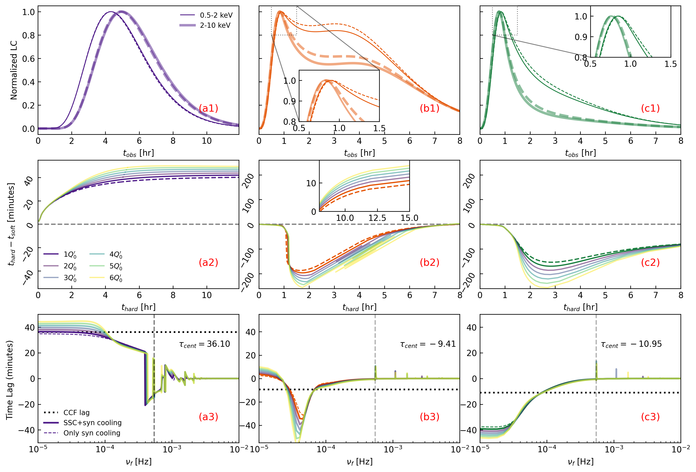
图注：Normalized LCs, instantaneous time delay and Fourier lag-frequency spectra measured between the hard and soft bands for the three representative lag regimes. The normalized LCs for the three cases are shown in the top panels, where the thick and thin lines represent the hard and soft LCs, respectively. The resulting Fourier and CCF time lags are shown in the bottom panels. The dashed lines show the results without considering nonlinear SSC cooling, while the solid lines represent the results including SSC cooling. The gradient-coloured lines show the results calculated for different injection rates from $Q'_0$ to $6Q'_0$. The corresponding instantaneous lags are presented in the middle panels.
对应解读：对应“建议重点查看的图表”中的软/硬 X 射线模拟光变图、傅里叶时滞-频率谱图和同步自康普顿冷却比较；也对应“关键图表逐图导读”中图 2、图 3 的核心解读。
入选理由：这张图同时给出三种代表性时滞区间的软硬能带归一化光变、瞬时时滞以及傅里叶时滞-频率谱，是判断硬滞后、软滞后和过渡状态的最直接证据。它还用实线/虚线比较加入与不加入非线性 SSC 冷却的结果，并展示不同注入率对时滞的影响，覆盖日报中最关键的诊断量。
来源与置信度：\(arxiv_source\)；high；\(arxiv_source\) / ftlag.tex:figure[2]
Fig04
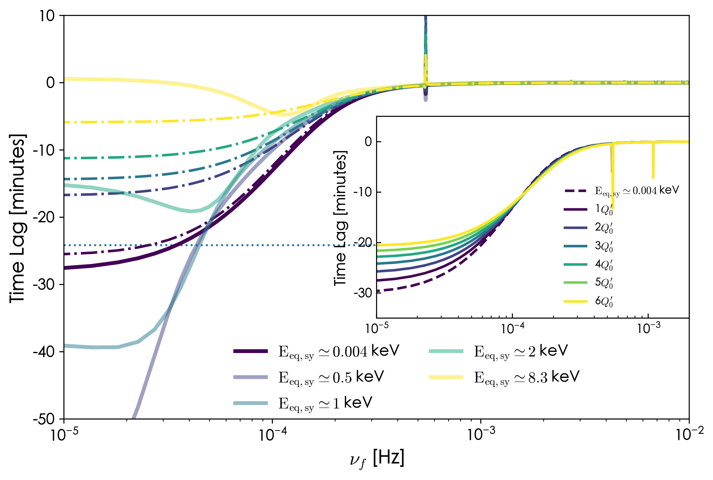
图注：The influence of the diffusion coefficient $D_0$ on the Fourier lag-frequency spectra. The gradient-coloured solid lines display the results calculated with different values of $E_{\rm eq,sy}$ varying from 0.004 to 8.3 keV, while the corresponding results from the pure cooling model are denoted by dash-dotted lines. In the inset, the gradient-coloured lines show the results calculated with $E_{\rm eq,sy}=0.004$ keV for different injection rate from $Q'_0$ to $6Q_0'$, and the dashed line denotes the result without accounting for SSC cooling.
对应解读：对应“随机湍流加速参数扫描图”和“关键图表逐图导读”中图 4 关于不同随机湍流加速强度对时滞-频率谱影响的部分。
入选理由：该图明确扫描扩散系数 D0，并用不同 \(E_eq,sy\) 展示傅里叶时滞-频率谱如何随 STA 强度变化，同时与纯冷却模型对比。它最适合支撑日报中关于随机湍流加速是否系统性放大或改变时滞形状的讨论。
来源与置信度：\(arxiv_source\)；high；\(arxiv_source\) / ftlag.tex:figure[4]
Fig06
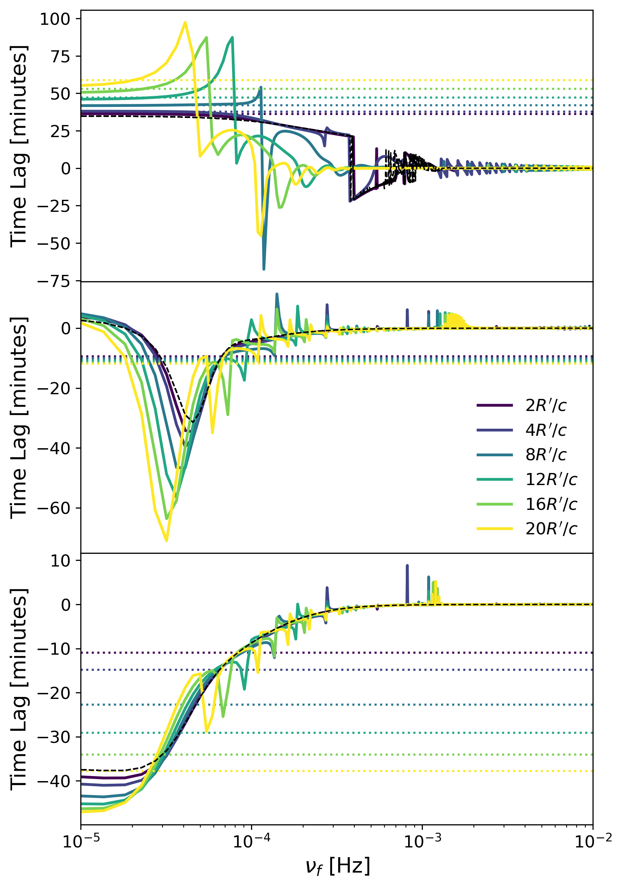
图注：Fourier lag-frequency spectra calculated with different injection time-scales varying from $2R'/c$ to $20R'/c$. Top, middle and bottom panels show the results for Case A, B, and C, respectively. The black dashed lines denote the results without incorporating nonlinear SSC cooling. The injection time-scales are labelled at the right lower corner of the middle panel in the figure.
对应解读：对应“耀发持续时间与时滞幅度关系图或诊断表”和“关键图表逐图导读”中图 6 关于注入/耀发持续时间与时滞幅度关系的部分。
入选理由：该图直接比较从 2R'/c 到 20R'/c 的不同注入时间尺度下的傅里叶时滞-频率谱，并分别给出 Case A、B、C。它是检验论文结论中“耀发持续时间越长，时滞越大”这一趋势的关键图。
来源与置信度：\(arxiv_source\)；high；\(arxiv_source\) / ftlag.tex:figure[6]
Fig01
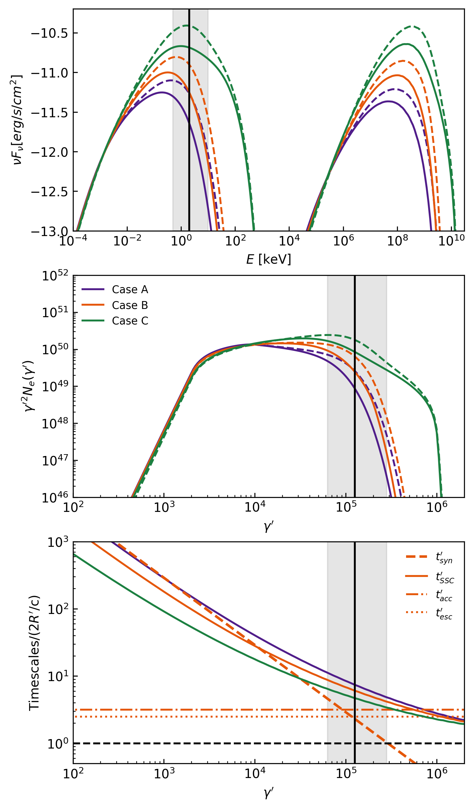
图注：Steady-state SEDs (top), EEDs (middle) and timescales of radiating electrons (bottom) resulting from the three sets of base parameters listed in Table \(\ref{tabs:basepara},\) illustrating three types of time lags measured in blazar flares. The solid lines denote the results calculated by considering nolinear SSC cooling effects, while the dashed lines represent the results accounting only for synchrotron loss. The shaded areas in the middle and bottom panels indicate the Lorentz factor ranges of the electrons radiating in the $0.5-10$ keV X-rays, indicated by the shaded area in the top panel. In the bottom panel, the various timescales in the jet co-moving frame are shown as indicated in the legend, and are plotted in units of $2R'/c$, which is denoted by a horizontal dashed line.
对应解读：对应“电子能谱随时间演化图”的物理背景、“同步自康普顿冷却开关或强度比较图”，以及“关键图表逐图导读”中图 1 关于 SED、EED 和时间尺度的说明。
入选理由：这张图汇总三组基准参数下的稳态 SED、电子能谱和加速/冷却/逃逸时间尺度，并用实线/虚线区分是否考虑非线性 SSC 冷却。它能把时滞符号与电子所在 Lorentz 因子范围、加速和冷却时间尺度联系起来，是理解后续时滞谱的物理基础。
来源与置信度：\(arxiv_source\)；high；\(arxiv_source\) / ftlag.tex:figure[1]
Fig05
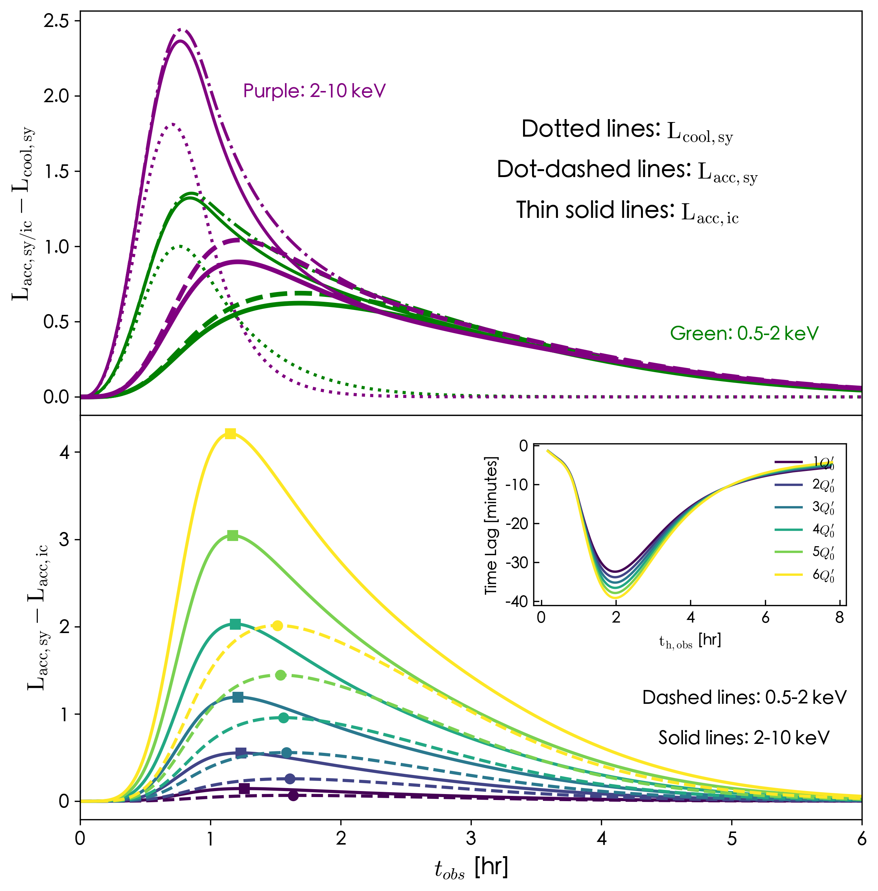
图注：The effects of STA suppression and SSC cooling on the time lags between soft ($0.5-2$ keV) and hard ($2-10$ keV) X-rays for $E_{\rm eq,sy}\simeq2$ keV. In the upper panel, thick dashed and solid lines denote $L_{\rm acc,sy}-L_{\rm cool,sy}$ and $L_{\rm acc,ic}-L_{\rm cool,sy}$, respectively (see text for detail).
对应解读：对应“同步自康普顿冷却开关或强度比较图”和日报关键结果中关于 STA 抑制高能电子冷却、SSC 冷却进一步放大时滞的讨论。
入选理由：该图专门针对 \(E_eq,sy\) 约 2 keV 的情形分解 STA suppression 与 SSC cooling 对 0.5–2 keV 和 2–10 keV 时滞的影响，比一般参数扫描更直接呈现机制层面的贡献。适合嵌入解释为什么过渡区和软滞后区的时滞会被放大。
来源与置信度：\(arxiv_source\)；high；\(arxiv_source\) / ftlag.tex:figure[5]
Fig08
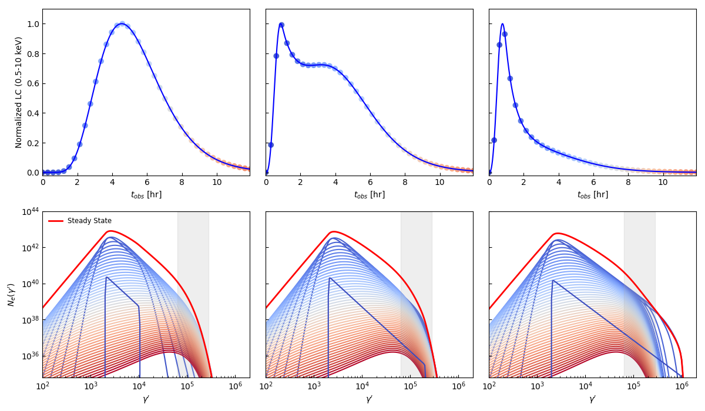
图注：Theoretical LCs in the $0.5-10$ keV X-ray band (upper panel) and the evolution of the emitted electron spectra (lower panel). In the lower panel, the red solid lines show the steady-state electron spectra resulting from constant injection, and the colour--gradient lines represent the time-dependent electron spectra calculated at the times corresponding the dots in the upper panel. The shaded areas indicate the range of electron Lorentz factors corresponding to the X-ray emission presented in the upper panels.
对应解读：对应“电子能谱随时间演化图”和“软、硬 X 射线模拟光变图”中关于光变阶段与电子谱演化关系的部分。
入选理由：该图给出 0.5–10 keV 理论光变及对应时刻的时间依赖电子谱演化，能直观看到耀发上升、峰值和衰减阶段电子分布如何变化。虽然它不直接展示软硬能带傅里叶时滞，但对解释高能端电子补充与衰减过程很有价值。
来源与置信度：\(arxiv_source\)；high；\(arxiv_source\) / ftlag.tex:figure[8]
强相关工作
这篇工作与高峰频 BL Lac 的 X 射线时滞观测传统直接相关，特别是针对 Markarian 421、Markarian 501、PKS 2155-304 等 TeV blazar 的多历元 XMM-Newton、BeppoSAX、RXTE、Swift 和 NuSTAR 研究。可检索关键词包括 “HBL X-ray time lag Fourier lag spectrum”, “Markarian 421 soft lag hard lag”, “PKS 2155-304 X-ray hysteresis”, “TeV blazar synchrotron cooling lag”。这些观测论文通常强调能谱滞回环、互相关时滞和耀发持续时间，本文则把这些现象放入随机湍流加速的一-zone 输运框架中。
理论上，它与经典同步自康普顿 blazar 模型、时间依赖电子输运模型、Fokker-Planck 随机加速模型相连。相反或竞争解释包括多区喷流模型、冲击沿喷流传播造成的几何延迟、磁重联 plasmoid 级联、以及能带混合和红噪声导致的表观时滞。可检索关键词包括 “time-dependent SSC blazar model”, “stochastic acceleration blazar X-ray variability”, “Fokker Planck acceleration blazar”, “multi-zone blazar time lags”。如果要找综述，可检索 “blazar variability review”, “particle acceleration in relativistic jets review”。
同一事件 / 同类源线索：
相似工作：
（未提供）
基础理论 / 方法工作：
（未提供）
相反观点 / 张力线索：
（未提供）
6. TEQUILA: Mechanism-free polarimetry for astronomy
- 来源：arXiv / astro-ph.HE
- 链接：https://arxiv.org/abs/2607.01325v1
- 作者：Alan M. Watson, Noémie Globus
- 评分：novelty 7/10，importance 7/10，relevance 9/10，final 8.70/10
- 推荐理由：面向GRB余辉、blazar等瞬变源早期偏振随访的无运动部件光学偏振仪，给出设计、定标和初始性能；虽非伽马探测本身，但对高能瞬变多波段跟进有实用仪器价值。
中文题目：TEQUILA：一种无转动机构的天文偏振成像仪
做了什么：这篇论文介绍了安装在墨西哥圣佩德罗马蒂尔天文台 1.3 米 COLIBRÍ 望远镜第二 Nasmyth 焦点的光学成像偏振仪 TEQUILA。它用带片上线栅微偏振阵列的 CMOS 探测器，在单次曝光中同时测量 Stokes 参量 \(I\)、\(Q\) 和 \(U\)，不需要半波片、转轮或 Wollaston 棱镜等运动机构。作者给出仪器设计、探测器标定、平场中的偏振结构、标准星校准和初步科学测试。核心结果是：点源绝对偏振测量在 pupil-tracking 模式下达到约 \(0.15\%\) 的均方根不确定度，在 field-tracking 模式下约 \(0.20\%\)；前者可由测量误差和标准星误差解释，后者还需要约 \(0.10\%\) 的额外校准项。代价是微偏振阵列和探测器导致总体量子效率较低，估计约 \(17\%\)。
为什么重要：早期瞬变源偏振观测的难点不是只在灵敏度，而在时间：伽马射线暴余辉、耀变体耀发和年轻恒星爆发的偏振状态可能在分钟到小时尺度变化。传统偏振仪常依赖旋转波片或多次曝光，容易受到源本身变化、天空变化、机械重复性和焦点稳定性的影响。TEQUILA 的价值在于把 \(I\)、\(Q\)、\(U\) 放进同一帧图像里，牺牲一部分效率，换取同步性、简单性和快速响应。
理论 / 观测 / 仪器方法价值：对仪器和方法的价值很直接：它展示了商用 CMOS 微偏振阵列在天文点源绝对偏振测量中已经能达到亚百分比精度，并且给出了 Nasmyth 焦点、alt-az 望远镜、pupil-tracking 与 field-tracking 模式下的真实校准预算。对观测者来说，这篇文章提供了如何把微偏振传感器从实验室器件变成可用天文仪器的完整案例，包括平场偏振纹理、像素子阵列解调、标准星零点、仪器偏振和残差项的处理。
为什么应该关注：如果你关心 GRB 余辉磁场结构、喷流几何、耀变体冲击区或年轻恒星盘的散射几何，这类单次曝光偏振仪会改变可获得的数据类型：不是隔几十分钟得到一个偏振点，而是能在瞬变早期连续跟踪 \(p\) 和 \(\theta\) 的演化。即使你不使用 TEQUILA，这篇论文也值得看，因为它把微偏振阵列的优势和硬伤都量化了：同步测量很好，但平场偏振结构、低量子效率和 field-tracking 下的额外系统误差不能忽略。
展开详细解读：文章讲解、背景、理论、重点章节、图表与相关工作
文章详细讲解
科学问题：这篇文章要解决的是快速天文瞬变源偏振观测中的时间同步问题。偏振不仅告诉我们源有多亮，还告诉我们辐射场、磁场和散射几何是否有优选方向。对 GRB 余辉、耀变体和年轻恒星爆发源来说，偏振度 \(p\) 与偏振角 \(\theta\) 可以在很短时间内变化。如果用传统调制器按序测量不同偏振态，得到的 \(Q\) 和 \(U\) 可能并不对应同一时刻的源状态。TEQUILA 的目标是用一次曝光同时记录多个线偏振方向，从而避免时间插值和机械调制带来的误差。
作者怎么做：TEQUILA 安装在 COLIBRÍ 1.3 米 alt-az 望远镜的第二 Nasmyth 端口，采用商用 CMOS 传感器，其像素上覆盖线栅微偏振阵列。相邻像素或像素单元对应不同偏振透射方向，经过解调后给出 \(I\)、\(Q\) 和 \(U\)。仪器没有运动偏振部件，固定在一个光学波段内工作，并以 seeing-limited 成像为目标。论文不仅描述光机结构，也重点讨论探测器响应、平场、绝对偏振校准、标准星观测和两种跟踪模式下的表现。
关键结果：传感器表征显示平场中存在不可忽略的偏振结构，且整体量子效率不高，作者估计包括微偏振阵列损失后的有效量子效率约为 \(17\%\)。对点源绝对偏振，TEQUILA 在 pupil-tracking 观测中达到 \(0.15\%\) 的 RMS 不确定度；在 field-tracking 中达到 \(0.20\%\)。更重要的是误差预算不同：pupil-tracking 的散布可以由测量噪声和标准星不确定度解释，不需要额外校准误差；field-tracking 需要再加入约 \(0.10\%\) 的校准项。这说明 Nasmyth 几何、场旋转处理和平场偏振结构之间的耦合是实际误差源。
局限和下一步：论文明确指出，面向扩展源的偏振校准仍在进行中。点源测量可以通过孔径测光、局部背景和标准星转换来控制误差，但扩展源会直接暴露像素级响应、平场偏振结构、PSF 与采样之间的耦合。另一个限制是低量子效率，它会影响暗弱瞬变源的极早期测量深度。下一步最关键的是把点源校准推广到空间变化的 Mueller 或响应矩阵标定，并在真实瞬变源上展示时间分辨偏振曲线的科学收益。
关键结果是怎么做出来的
本文最重要的证据链从探测器表征开始。作者先把微偏振 CMOS 当作一个偏振响应不均匀的成像系统，而不是理想四通道探测器。平场测试显示，不同微偏振方向的像素响应不仅有普通像素响应差异，还有随位置变化的偏振结构。这一步很关键，因为若把平场只当作强度平场处理，残余结构会直接泄漏到归一化 Stokes 参量 \(q=Q/I\) 和 \(u=U/I\)。作者据此给出探测器效率估计，指出包含线栅微偏振阵列损失后的有效量子效率约 \(17\%\)。
点源偏振校准使用标准星和重复观测来评估绝对精度。论文摘要给出的关键数字是 pupil-tracking 模式下 RMS 约 \(0.15\%\)，field-tracking 模式下 RMS 约 \(0.20\%\)。这里 RMS 不是单帧光子噪声的宣传值，而是把标准星测得的偏振与参考偏振比较后得到的实际散布，因此包含了测量、标定、望远镜姿态和仪器响应的综合影响。读者应重点看标准星残差图、按偏振度或偏振角分组的残差表，以及是否有随视场位置、空气质量、旋转角或时间的趋势。
显著性和误差预算的核心在于是否需要额外系统项。作者报告说，在 pupil-tracking 模式下，观测 RMS 可由测量误差与标准星本身不确定度解释，没有证据要求再加入独立校准误差。这相当于说明误差模型的归一化残差接近单位方差。相反，在 field-tracking 模式下，若只用测量误差和标准星误差，残差散布偏大，必须加入约 \(0.10\%\) 的额外校准不确定度。这不是小细节，因为很多瞬变源跟踪观测会在实际调度中选择不同跟踪模式。
支撑结论的图表应包括：探测器或平场响应图、微偏振阵列解调后的 \(q\) 与 \(u\) 平场结构图、标准星观测与文献值比较图、残差随仪器角或天空角变化的图，以及 pupil-tracking 与 field-tracking 的误差预算表。若论文给出初步科学观测，读者还应检查目标偏振变化是否显著超过同夜标准星残差，而不是只看形式上的 \(p/\sigma_p\)。
主要系统误差来自几个方向：微偏振像素的相对透过率、不同偏振方向像素的 PSF 采样差异、CMOS 非线性或低信号区响应、天空背景偏振、Nasmyth 反射引入的仪器偏振，以及 field-tracking 下场旋转与 detector-fixed 平场结构之间的耦合。稳健性检验应包括多标准星、多夜重复、不同孔径半径、不同背景环、不同视场位置和不同跟踪模式的比较。论文的一个有用结论是，至少对点源，pupil-tracking 当前已经达到可用于科学观测的亚百分比绝对偏振精度。
展开背景、理论、公式、模型、章节和图表导读
背景知识
光学线偏振观测测量的是电磁波横向电场振荡方向的统计偏好。天体辐射若来自各向同性热辐射且没有明显散射几何，通常偏振很低；若来自同步辐射、非球对称散射、磁化喷流或尘埃散射，偏振就能成为几何和磁场的直接诊断量。对许多高能瞬变源，光变曲线和颜色只能给出能量释放和冷却信息，偏振则能区分有序磁场、冲击生成小尺度磁场、几何边缘效应和多发射区叠加。
传统天文偏振仪常用旋转半波片配合偏振分束器，或用多束光路同时记录不同偏振态。前者系统性成熟，但需要多次曝光或机械调制；后者同步性更好，但光路复杂、体积和校准负担较大。微偏振阵列传感器把不同偏振分析方向直接做在探测器像素上，思路类似彩色 CMOS 的 Bayer 阵列，只不过颜色滤光片换成了线栅偏振片。这样可以用单帧图像解出线偏振 Stokes 量。
为什么现在值得重新看这个问题？一方面，快速瞬变巡天和多信使触发越来越依赖分钟级响应，仪器可靠性和机械简单性变得非常重要。另一方面，商用微偏振 CMOS 的性能已经足以进入天文测试阶段，尽管其量子效率、像素响应一致性和偏振串扰还不如理想天文 CCD 加传统偏振模块。TEQUILA 正是把这类工业传感器放到真实望远镜上，检验它在标准星和真实天文环境中的表现。
这个领域常见误区之一是把“单次曝光”理解为“天然没有系统误差”。实际上，单次曝光只消除了不同偏振态之间的时间不同步，并不自动消除像素响应、平场、PSF 采样、探测器非线性和仪器偏振。另一个误区是只看偏振度 \(p\) 的误差，而忽略 \(q\) 与 \(u\) 的残差分布；由于 \(p\) 是正定量，低信噪比下会有偏置，严肃分析应首先在 \(q\)-\(u\) 平面完成。
基础理论 / 方法脉络
线偏振的基本物理图像是：观测到的光可以分解为两个互相垂直的线偏振分量。Stokes 参量 \(I\) 表示总强度，\(Q\) 表示相对某一参考轴的水平/垂直偏振差，\(U\) 表示相对旋转 \(45^\circ\) 后参考轴的偏振差。归一化参量 \(q=Q/I\) 和 \(u=U/I\) 给出线偏振状态，偏振度 \(p\) 和偏振角 \(\theta\) 则是它们的极坐标表示。
微偏振阵列的观测逻辑是让不同像素具有不同透射轴角 \(\phi_k\)。理想情况下，一个角度为 \(\phi_k\) 的线偏振分析器记录的强度等于总强度和投影到该方向的线偏振分量之和。若有至少三个不同的 \(\phi_k\)，就可以通过线性反演求出 \(I\)、\(Q\) 和 \(U\)。实际传感器通常使用周期性单元，例如包含多个方向的微偏振像素，再通过局部重采样或解调生成 Stokes 图像。
TEQUILA 的特定假设是：点源在几个相邻微偏振像素上的 PSF 和天空背景可被足够好地校正，使微偏振方向之间的强度差主要来自天体偏振，而非采样或响应差异。这个假设对 seeing-limited 点源比较合理，但对扩展源和强空间梯度区域更难成立，因为源结构本身会和像素级偏振图案卷积在一起。
观测方法上的关键退化包括：真实天体 \(q\)、\(u\) 与仪器偏振零点之间的退化，探测器固定图案与 field rotation 之间的退化，以及低信噪比下 \(p\) 的 Ricean 偏置。Nasmyth 焦点还会引入反射相关的偏振效应，alt-az 望远镜的姿态变化会使天空参考系、仪器参考系和瞳面参考系之间的转换变得重要。因此论文区分 pupil-tracking 和 field-tracking 的性能，是仪器偏振分析中非常实用的一点。
公式与推导
偏振测量从 Stokes 向量开始。忽略圆偏振时，入射光可写成
其中 \(I\) 是总强度，\(Q\) 和 \(U\) 是相对于选定参考轴定义的线偏振分量。本文的仪器目标就是从单次曝光中的多个微偏振像素估计这个向量。
理想线偏振分析器在角度 \(\phi_k\) 上的输出强度满足
其中 \(f_k\) 是第 \(k\) 个微偏振通道的计数，\(g_k\) 是通道增益或透过率，\(b_k\) 是背景，\(n_k\) 是噪声。因子 \(2\phi_k\) 来自线偏振角的 \(180^\circ\) 周期性。
把多个通道写成矩阵形式，有
其中设计矩阵 \(\mathbf{A}\) 的第 \(k\) 行为 \(\frac{g_k}{2}\left(1,\cos 2\phi_k,\sin 2\phi_k\right)\)。在平场和增益校正后，Stokes 估计量可用加权最小二乘给出：
其中 \(\mathbf{W}\) 是噪声协方差矩阵的逆，通常由光子噪声、读出噪声和平场不确定度决定。
归一化 Stokes 参量定义为
它们比 \(Q\) 和 \(U\) 更适合做绝对偏振校准，因为透明度、曝光时间和总通量的一阶变化会在比值中抵消。线偏振度和偏振角为
这里 \(\arctan2\) 保留象限信息，\(1/2\) 则反映线偏振的角周期性。
若天空参考系与仪器参考系相差角度 \(\psi\)，归一化 Stokes 参量按
旋转。pupil-tracking 与 field-tracking 的差别，本质上会改变 \(\psi\) 随时间的行为以及 detector-fixed 系统误差如何投影到天空坐标。
点源标准星校准可写成残差模型
其中 \(i\) 标记标准星或观测序列。若误差模型正确，归一化残差应满足近似单位方差。可用
估计是否需要额外校准项 \(s\)。论文报告 pupil-tracking 下不需要明显的 \(s\)，而 field-tracking 下需要约 \(s\simeq0.10\%\)。
仪器灵敏度可用偏振误差的近似传播理解。若总源计数为 \(N_\star\)，背景和读噪贡献为 \(N_{\rm bg}\) 与 \(N_{\rm rn}\)，则强度信噪比近似为
在理想均匀角采样下，归一化 Stokes 误差通常随 \({\rm SNR}_I^{-1}\) 缩放：
其中 \(C\) 是由调制效率、通道数和权重决定的常数。TEQUILA 的低有效量子效率会降低 \(N_\star\)，因此直接影响暗弱瞬变源的可测偏振下限。
模型拟合 / 应用方法
这类仪器论文的“模型拟合”主要不是拟合天体物理模型，而是拟合从像素计数到 \(I\)、\(Q\)、\(U\) 的响应模型和校准残差模型。第一层拟合是微偏振通道的线性解调：给定每个通道的偏振角、增益、背景和噪声，把同一源在不同微偏振像素上的计数转换为 Stokes 估计。这里的关键拟合量包括源通量、背景、\(q\)、\(u\)，以及可能的通道相对增益修正。
第二层是绝对偏振校准。标准星有文献给出的 \(p\) 和 \(\theta\)，可转换成参考 \(q\) 与 \(u\)。观测值与参考值之间的差异用于估计仪器零点、角度偏移、偏振效率和额外系统散布。本文的结果说明，pupil-tracking 模式的残差不需要额外校准方差，而 field-tracking 模式需要约 \(0.10\%\) 的附加项。这类结论通常来自残差 RMS、\(\chi^2\) 或等价的误差膨胀检验。
参数退化主要有三类。第一，偏振效率与真实偏振度的标定退化：如果标准星覆盖的 \(p\) 范围太窄，效率误差可能被误认为天体偏振偏低或偏高。第二，偏振角零点与 \(q\)-\(u\) 旋转退化：一个小角度误差会在 \(q\) 和 \(u\) 之间相互泄漏。第三，平场残差与源位置退化：如果源落在不同 detector 区域时 \(q\) 或 \(u\) 有系统漂移，点源重复观测的散布会低估扩展源或大视场测量的风险。
残差诊断应优先在 \(q\) 和 \(u\) 平面进行，而不是只看 \(p\)。因为 \(p=\sqrt{q^2+u^2}\) 是正定量，低信噪比下会系统偏高。对于标准星，好的图应显示 \(q^{\rm obs}-q^{\rm ref}\) 与 \(u^{\rm obs}-u^{\rm ref}\) 没有随时间、视场位置、空气质量、旋转角、通量或孔径半径的趋势。对于科学目标，若目标偏振变化幅度只与标准星系统散布相当，就不能过度解释为真实磁场演化。
模型可能失败的场景包括：目标过暗导致微偏振通道间的 Poisson 噪声主导；源处在拥挤场或宿主星系背景中，使不同偏振像素采样到不同空间结构；扩展源具有强亮度梯度，使像素级微偏振阵列与源结构卷积；以及 alt-az Nasmyth 反射引入的姿态相关偏振没有被完全建模。论文把扩展源校准列为仍在进行中，是对这些风险的合理承认。
重点章节 / 结果段落怎么读
-
科学动机与仪器定位：读者应先看作者为什么把 TEQUILA 优化给瞬变源，而不是追求极限深度或全波段覆盖。重点是单次曝光同步测量 \(I\)、\(Q\)、\(U\) 对 GRB 余辉、耀变体和年轻恒星变源的意义。
-
光机与探测器设计：这一部分要关注微偏振 CMOS 的像素排布、固定光学波段、COLIBRÍ 第二 Nasmyth 焦点的几何，以及无运动部件如何降低响应时间和机械复杂性。不要只看“commercial components”这个卖点，更要看它带来的量子效率和校准代价。
-
探测器表征和平场：这是全文技术含量最高的部分之一。重点读平场中的偏振结构、通道相对增益、低量子效率估计，以及作者如何把这些影响纳入 Stokes 解调。这里决定了仪器误差下限。
-
标准星校准与点源性能：应重点看 pupil-tracking 与 field-tracking 的分开分析。论文的核心性能数字 \(0.15\%\)、\(0.20\%\) 和 field-tracking 额外 \(0.10\%\) 校准项都来自这里。
-
初步科学结果与讨论：如果论文展示了早期科学观测，读者应把它看作性能验证，而非最终天体物理结论。重点检查目标偏振信号是否显著超过标准星残差和模式相关系统误差。
-
局限与未来工作：扩展源校准仍未完成，低量子效率限制暗源深度。这一节决定了 TEQUILA 当前最适合的问题类型：快速、点源、相对明亮的瞬变偏振，而不是高精度宽场偏振制图。
建议重点查看的图表
-
仪器布局或光路图：看 TEQUILA 如何接到 COLIBRÍ 第二 Nasmyth 端口，是否有额外反射面，光路中哪些元件可能引入仪器偏振。
-
微偏振阵列像素示意或原始图像局部放大：看不同偏振方向的像素如何排列，解调 \(I\)、\(Q\)、\(U\) 时空间采样是否可能引入 PSF 相关误差。
-
平场和偏振平场结构图：重点看 detector 上 \(q\) 与 \(u\) 的固定图案幅度、空间尺度和是否有边缘效应。这直接关系到扩展源和 field-tracking 的系统误差。
-
量子效率或吞吐量估计表：看约 \(17\%\) 有效量子效率是如何分解的，微偏振阵列损失、CMOS 响应和其他光学损耗分别占多少。
-
标准星观测与参考值比较图：看观测 \(q\)、\(u\)、\(p\)、\(\theta\) 是否围绕文献值无偏分布，误差棒是否能解释散布。
-
pupil-tracking 与 field-tracking 残差对比：这是验证核心结论的图。重点看 field-tracking 是否存在随旋转角、时间或视场位置的残差趋势。
-
初步科学目标偏振曲线：如果有，重点看偏振变化是否超过 \(0.15\%\) 到 \(0.20\%\) 的绝对系统地板，以及时间采样是否真正体现单次曝光优势。
关键图表逐图导读
图 1：通常应是仪器或望远镜接口示意图。横向信息不是坐标轴，而是光从望远镜 Nasmyth 焦点到探测器的路径。读图时要找反射面、滤光片、探测器位置和是否存在可转动部件。主要结论应是 TEQUILA 的偏振分析发生在探测器微偏振阵列上，而不是前端机械调制器。读图陷阱是把无运动部件等同于无仪器偏振；Nasmyth 光路本身仍可引入偏振。
图 2：若为微偏振阵列或像素响应图，坐标轴通常是 detector 像素位置。不同颜色或灰度代表不同微偏振方向或通道响应。读者应检查一个 Stokes 解调单元覆盖多少像素、相邻方向是否采样同一 PSF 区域，以及坏点或通道响应差异如何处理。陷阱是忽略 seeing 与像素采样：点源中心落点变化会影响不同偏振通道的相对计数。
图 3：平场或偏振平场图应显示 detector 坐标上的归一化响应、\(q\) 或 \(u\) 结构。坐标轴是像素位置，色标可能是百分比级偏振残差。主要结论是平场不只是强度校正，还含有偏振结构。读图时要看结构是大尺度渐变还是小尺度固定图案；前者可由低阶模型吸收，后者更容易污染扩展源测量。
图 4：标准星 \(q\)-\(u\) 比较图通常以参考值为模型点，观测值带误差棒。若点围绕参考值随机散布，说明零点和效率校准可靠。应检查高偏振标准星和低偏振标准星是否都一致，因为低偏振标准星更敏感于仪器偏振，高偏振标准星更敏感于角度零点和效率。
图 5：残差 RMS 或归一化残差图可能按 pupil-tracking 与 field-tracking 分组。坐标轴可为观测序号、旋转角、空气质量或时间，纵轴为 \(\Delta q\)、\(\Delta u\) 或总残差。关键结论是 pupil-tracking 的散布可由已知误差解释，而 field-tracking 需要额外约 \(0.10\%\) 校准项。陷阱是只看整体 RMS，不看残差是否随姿态角有系统趋势。
图 6：若有科学验证目标的光变和偏振曲线，横轴应为时间，纵轴分别为强度、\(p\) 和 \(\theta\)，或 \(q\) 与 \(u\)。读者应把目标变化幅度与标准星系统误差对照，而不是只看相邻点是否不同。真正有说服力的结果应在 \(q\)-\(u\) 平面也表现为连续或统计显著的变化。
论文原图 / 可嵌入图片
Fig11
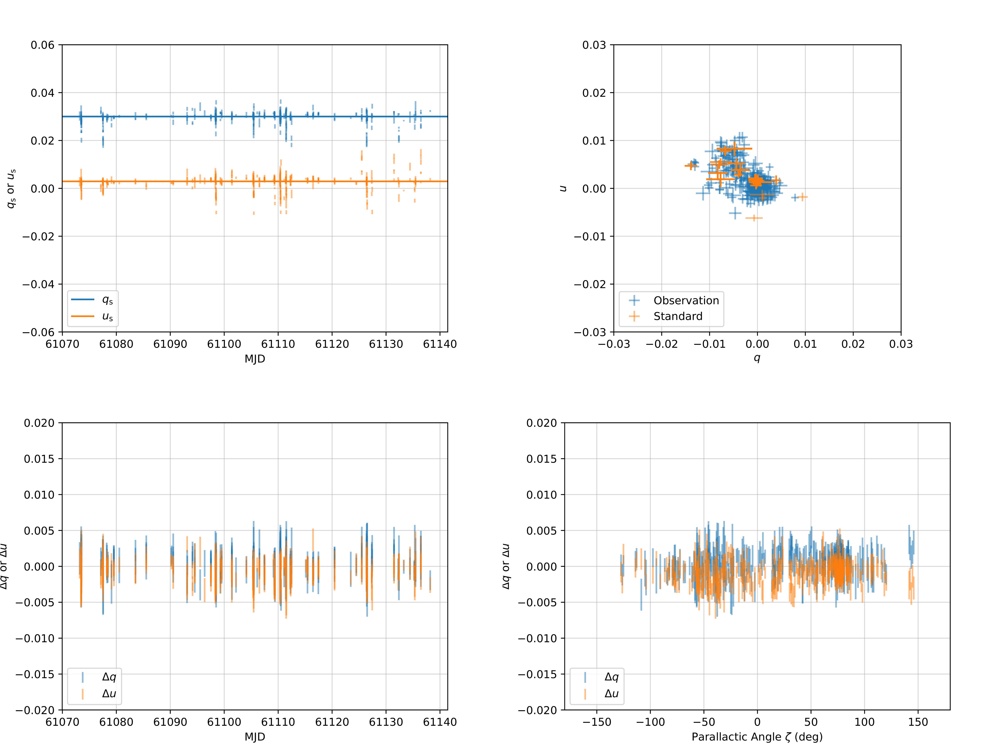
图注：Calibration with pupil tracking. Upper left: The raw polarizations $\qs$ and $\us$ for 403 observations of RoboPol standards. We see a strong instrumental polarization in $\qs$, a weaker one in $\us$, and dispersion due to the intrinsic polarization of the standards. Upper right: Values of $(q,u)$ for the standards and observations after transforming the observations from $(\qs,\us)$ to $(q,u)$. Lower left: Residuals $\Delta q \equiv q - q_0$ and $\Delta u \equiv u - u_0$ (observation minus standard) as a function of date. Lower right: Residuals $\Delta q$ and $\Delta u$ as a function of parallactic angle $\zeta$.
对应解读：建议重点查看的图表第5、6项；关键图表逐图导读图4、图5；模型拟合中关于标准星残差、pupil-tracking 是否需要额外校准方差的段落。
入选理由：这是支撑论文核心定量结论的最关键图之一，直接展示 pupil-tracking 下标准星观测从原始传感器坐标到天球 q、u 的校准结果，并给出相对参考标准星的 Δq、Δu 残差随日期和视差角的变化。它能检验误差棒是否解释散布、是否存在随姿态角的系统趋势，以及为什么作者认为 pupil-tracking 不需要额外校准项。
来源与置信度：\(arxiv_source\)；high；\(arxiv_source\) / main.tex:figure[11]
Fig12
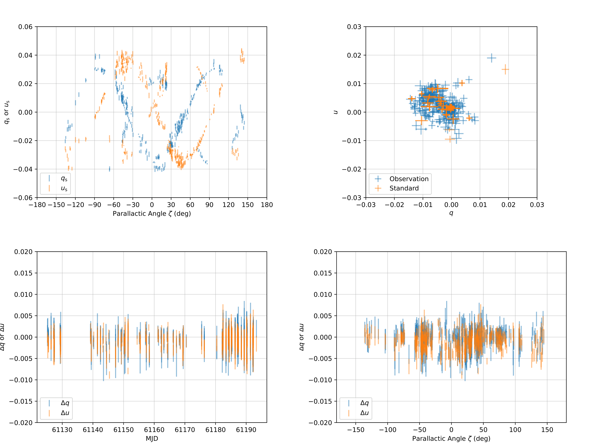
图注：Calibration with field tracking. Upper left: The raw polarizations $\qs$ and $\us$ for 579 observations of RoboPol standards. We see hints of the expected $\sin(2\zeta)$ and $\cos(2\zeta)$ modulation, but it is confused by the sign flips when tracking with offsets of $90\deg$ or $270\deg$, the corrections in the sensor frame which happen prior to these flips, and by the intrinsic polarizations of the standards. Upper right: Values of $(q,u)$ for the standards and observations after transforming the observations from $(\qs,\us)$ to $(q,u)$. Lower left: Residuals $\Delta q \equiv q - q_0$ and $\Delta u \equiv u - u_0$ (observation minus standard) as a function of date. Lower right: Residuals $\Delta q$ and $\Delta u$ as a function of the parallactic angle $\zeta$.
对应解读：建议重点查看的图表第5、6项；关键图表逐图导读图5；模型拟合中关于 field-tracking 需要约 0.10% 附加校准不确定度的段落。
入选理由：这张图与 Fig11 构成最重要的对照，直接对应 field-tracking 的标准星校准和残差诊断。图中包含原始 qs、us 的旋转调制迹象、变换后的 q、u 与标准值比较，以及 Δq、Δu 随日期和视差角的残差，是判断 field-tracking 额外系统误差来源和姿态相关趋势的关键证据。
来源与置信度：\(arxiv_source\)；high；\(arxiv_source\) / main.tex:figure[12]
Fig08
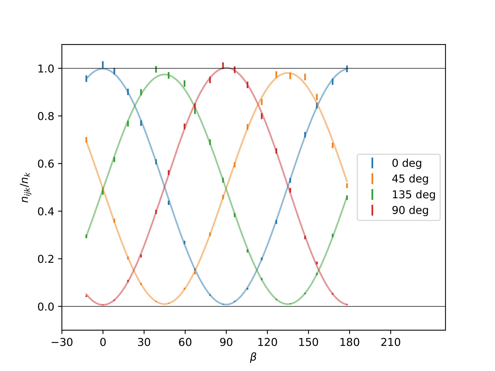
图注：The laboratory data and corresponding model fits for pixels in a representative super-pixel. The fits have $\bar\chi^2 = 0.93$
对应解读：模型拟合段落中第一层响应模型，即微偏振像素计数到 I、Q、U 的线性解调与实验室标定拟合。
入选理由：该图直接展示实验室数据及代表性 super-pixel 的模型拟合，并给出约化卡方，最能说明微偏振阵列响应模型是否能描述不同偏振角下的像素计数。相比单纯的仪器照片，它更直接支撑从像素读数解调 Stokes 参数这一方法学核心。
来源与置信度：\(arxiv_source\)；high；\(arxiv_source\) / main.tex:figure[8]
Fig09
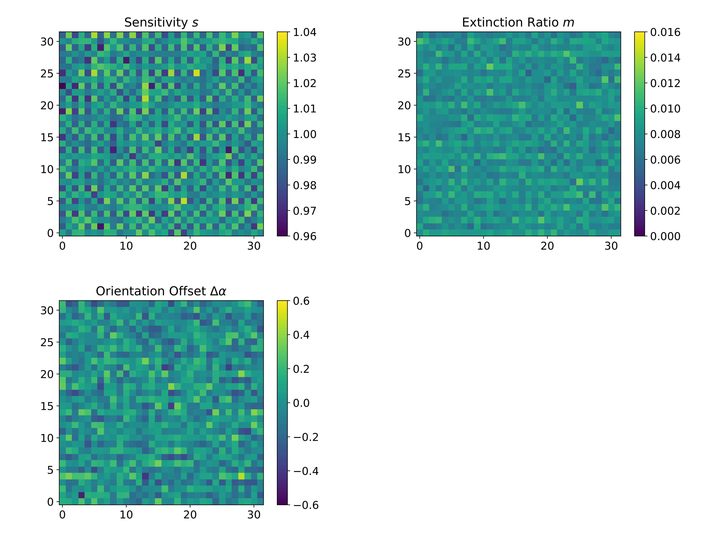
图注：The sensor parameters $s_{xy}$, $m_{xy}$, and $\Delta\alpha_{xy}$ derived in the laboratory calibration in a representative region close to the center of the sensor.
对应解读：建议重点查看的图表第2、3项；模型拟合段落中关于通道相对增益、偏振效率、偏振角偏差及像素级响应参数的讨论。
入选理由：该图给出实验室标定得到的传感器参数 sxy、mxy 和 Δαxy 的空间分布，直接反映微偏振阵列各像素/通道的响应差异和角度偏差。它比普通传感器示意图更适合解释 PSF 采样、通道增益差异和解调系统误差如何进入 q、u 测量。
来源与置信度：\(arxiv_source\)；high；\(arxiv_source\) / main.tex:figure[9]
Fig06
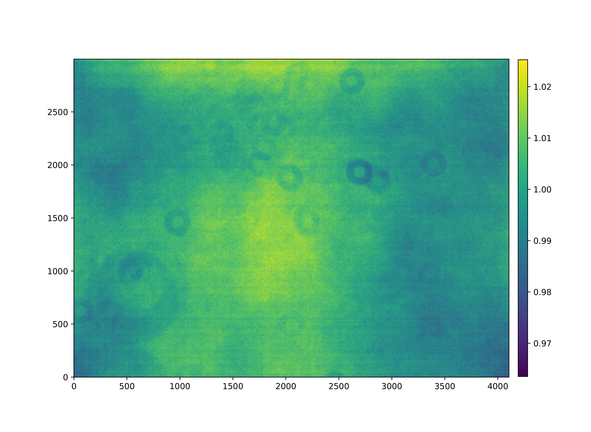
图注：A typical mean twilight flat field image. The pixel-to-pixel variation is about 1\% RMS and the large scale structure has an RMS of about 0.7\% and a peak-to-valley range of $\pm2\%$
对应解读：建议重点查看的图表第3项；关键图表逐图导读图3；详细解读中关于平场结构、扩展源校准仍在进行中的局限。
入选理由：该图展示 twilight flat 的像素级和大尺度响应结构，虽然 caption 主要描述强度平场而非完整 q、u 偏振平场，但它仍是候选图中最接近平场结构诊断的图。它有助于说明探测器响应并非完全均匀，以及平场结构可能如何影响扩展源和 field-tracking 系统误差。
来源与置信度：\(arxiv_source\)；high；\(arxiv_source\) / main.tex:figure[6]
Fig02
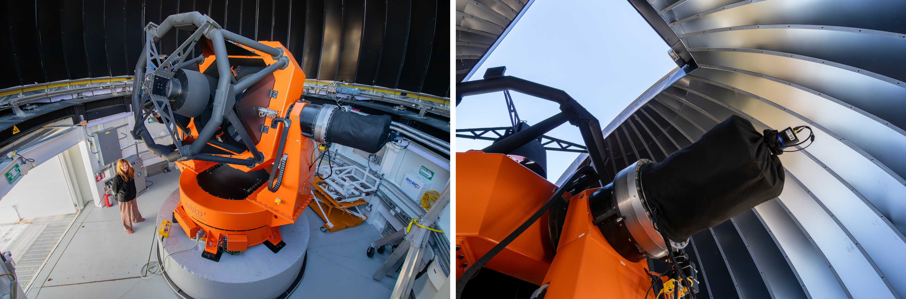
图注：{\TEQUILA} mounted on one of the Nasmyth foci of the COLIBRÍ telescope. {\TEQUILA} is the small black-and-blue cylinder at the right seen mounted on the larger felt-covered OGSE test-camera support structure that extends from the derotator. The purpose of this structure is simply to support an instrument close to the telescope focal plane. Note the absence of a proper cable chain and the cables simply looped from the instrument to the telescope; this forces us to limit the instrument rotation during field-tracking observations. The {\TEQUILA} PI is shown for scale.
对应解读：建议重点查看的图表第1项；关键图表逐图导读图1；详细解读中关于 TEQUILA 安装在 COLIBRÍ 第二 Nasmyth 端口、无运动偏振部件但仍受 Nasmyth 几何影响的说明。
入选理由：该图真实展示 TEQUILA 在 Nasmyth 焦点处的安装方式，并特别说明 field-tracking 时仪器旋转受电缆限制。虽然不是严格光路示意图，但它比其他候选图更能支持仪器接口、Nasmyth 安装环境和 field-tracking 操作限制这些解读要点。
来源与置信度：\(arxiv_source\)；high；\(arxiv_source\) / main.tex:figure[2]
强相关工作
这篇工作属于微偏振阵列天文应用、快速瞬变偏振仪和小/中口径机器人望远镜后随观测的交叉领域。与传统旋转波片偏振仪相比，它强调单次曝光同步性和无机构可靠性；与双光束或多光束偏振仪相比，它的光路简单，但把复杂性转移到了探测器平场、像素级解调和系统误差建模上。建议检索关键词包括 “division-of-focal-plane polarimeter astronomy”、“microgrid polarizer CMOS Stokes \(IQU\)”、“GRB afterglow optical polarimetry”、“Nasmyth instrumental polarization” 和 “COLIBRÍ telescope transient follow-up”。
与相似观测工作的关系上，GRB 余辉偏振长期用于讨论喷流磁场是否有序、早期反向激波是否贡献显著、喷流破裂前后偏振角是否旋转。耀变体偏振监测则常用于识别喷流中冲击、磁重联或螺旋磁场结构。TEQUILA 本身不是提出新的辐射理论，而是提供一种更适合早期快速采样的数据获取方式。潜在张力在于：若仪器系统误差地板约为 \(0.1\%\) 到 \(0.2\%\)，它足以研究很多百分比级偏振瞬变，但对极低偏振或扩展源精密制图仍需谨慎。
同一事件 / 同类源线索：
相似工作：
（未提供）
基础理论 / 方法工作：
（未提供）
相反观点 / 张力线索：
（未提供）
7. AI-enabled gravitational-waves searches for binary neutron stars at optimal sensitivity
- 来源：arXiv / astro-ph.HE
- 链接：https://arxiv.org/abs/2607.01372v1
- 作者：Bhavya Gupta, Deep Chatterjee, William Benoit, Ethan Marx, Christina Reissel, Seiya Tsukamoto, Kyungseop Yoon, Michael W. Coughlin
- 评分：novelty 8/10，importance 8/10，relevance 7/10，final 8.65/10
- 推荐理由：AI-enabled low-latency BNS gravitational-wave search achieving near matched-filter sensitivity with reduced compute; relevant to multimessenger compact-object astronomy and reusable time-domain analysis methods.
中文题目：用人工智能以接近最优灵敏度搜索双中子星引力波
做了什么：这篇论文把作者团队的神经网络引力波搜索框架 Aframe 从较短的双黑洞信号扩展到双中子星并合信号。双中子星波形在 LIGO-Virgo-KAGRA 频段内持续时间长、模板数多，传统匹配滤波在线搜索需要把数据同约百万个参考波形比较，计算和延迟压力很大。作者用外差降频把长时信号压缩到更易处理的表示，再用已在第四观测运行中实时部署过的 Aframe 网络区分信号与噪声背景，展示其灵敏度可接近匹配滤波管线，同时在线部署只需单块非旗舰级 GPU，并可通过推理即服务进行快速离线归档搜索。核心意义不在于“AI 替代物理模型”，而在于证明低质量、长持续时间的双中子星搜索也能用学习式触发器达到接近最优的探测效率和更低延迟。
为什么重要：双中子星并合是多信使天文学的关键目标：它可能同时产生引力波、伽马暴、千新星和中微子信号。在线搜索若能在不牺牲太多灵敏度的前提下降低计算成本和延迟，就能更快发布预警、扩大电磁跟踪窗口，并让未来高事件率观测运行更可持续。本文重要之处在于把 AI 搜索推进到传统上最依赖庞大模板库、最难实时低成本处理的双中子星质量区间。
理论 / 观测 / 仪器方法价值：对方法学而言，论文给出了一条把外差、神经网络分类、背景估计和在线推理服务结合起来的可部署路径。对观测而言，它评估了 Aframe 在双中子星参数空间中的灵敏度、误警背景和延迟，说明这类管线可作为匹配滤波搜索的补充甚至实时并行触发器。对仪器和计算而言，单 GPU 在线运行和分布式 GPU 离线分析意味着同样的数据流可用更少 CPU 资源完成快速筛查。
为什么应该关注：如果你关心 GW170817 之后的双中子星多信使发现率，这篇文章直接关系到“下一次事件能否更早、更可靠地被发现”。如果你关心引力波数据分析，它给出了一个可检验的案例：深度学习不是只在高质量短信号上表现好，也可能在长波形、低信噪比、非高斯噪声背景下接近匹配滤波。若你关注未来 Cosmic Explorer、Einstein Telescope 或高 duty cycle 网络的数据压力，本文也提示在线搜索架构需要从 CPU 模板扫描向异构计算和服务化推理转型。
展开详细解读：文章讲解、背景、理论、重点章节、图表与相关工作
文章详细讲解
科学问题：双中子星引力波搜索的难点不是波形物理完全未知，而是实时数据分析的计算量巨大。低质量致密双星在探测器频段内停留时间长，频率从几十赫兹缓慢扫到千赫兹附近，传统匹配滤波必须在大规模模板库上逐一计算相关，并对多探测器一致性、噪声瞬变和误警率做在线控制。对于双中子星，模板数可达约百万量级，实时分析可能需要数百到上千 CPU 核。多信使跟踪又要求低延迟，因此“接近最优灵敏度”和“低计算成本”之间的矛盾非常实际。
作者怎么做：论文采用 Aframe，这是一个已在 LIGO-Virgo-KAGRA 第四观测运行中上线的 AI 搜索框架，此前已实时探测到多个双黑洞候选。本文关键技术转折是把双中子星长信号先做外差处理：用参考相位把高频快速振荡搬移到低频基带，再降采样或压缩表示，使神经网络面对的时间序列长度和频率内容更接近双黑洞任务。之后沿用适用于双黑洞的网络结构，把问题表述为在多探测器数据中判别“含有相干并合信号”与“只有背景噪声”。
关键结果：作者展示 Aframe 在低质量双中子星区间可以达到与成熟匹配滤波管线可比的灵敏度，且部署成本显著降低。摘要强调在线运行只需要一块非旗舰级 GPU，这一点对实时预警系统很关键；同时，推理即服务架构允许把离线归档搜索分发到 GPU 资源池中快速执行。换言之，本文不是只报告离线 benchmark，而是围绕真实 LVK 观测运行需要的吞吐量、延迟、背景估计和可部署性来验证方法。
局限和下一步：从摘要能确定的是，论文证明了方法在双中子星低质量 regime 的可行性和接近匹配滤波的灵敏度；但专业读者仍需检查训练集与注入分布、真实噪声时段选择、非平稳噪声和 glitch 的处理、对自旋和潮汐参数的覆盖，以及与现有 LVK 低延迟管线在同一误警率下的距离 reach 或敏感体积比较。下一步自然是扩大到更宽参数空间，包括中子星-黑洞、偏心或高自旋系统，并在真实在线运行中评估候选事件的端到端自动化验证。
关键结果是怎么做出来的
本文最重要的证据链是：先把双中子星问题变成可由 Aframe 处理的输入表示，再在含真实探测器噪声或类真实噪声的数据上比较神经网络触发与匹配滤波搜索的探测效率。双中子星信号比双黑洞长得多，因此直接把原始高采样率时序喂给网络会导致输入维度、训练成本和在线推理成本都很高。作者用外差把目标质量区间内的 chirp 信号相位快速变化消去，使剩余信号在基带内缓慢变化，这一步是整篇文章能否成立的技术核心。
样本和事件层面，摘要没有给出具体注入数量、背景时长或候选数，因此读者应在正文中重点查找训练、验证和测试的分离方式：训练集是否由模拟双中子星注入到真实噪声中构成，测试集是否使用未参与训练的观测时段，背景是否由时间平移或无注入数据估计。对于这种搜索论文，最关键的不是单个样本分类准确率，而是在给定误警率下的探测效率、敏感距离或敏感时空体积。
显著性和置信度通常应通过背景触发分布来评估。读者应检查论文是否把 Aframe 输出分数转换为搜索统计量，并用无信号背景得到误警率或假警报概率；还应看同一误警率阈值下，注入信号的恢复比例如何随距离、网络信噪比、质量和天空位置变化。若论文给出接收者操作特征曲线、效率曲线或 sensitive volume 比值，这些图表比训练损失曲线更能支撑“接近匹配滤波灵敏度”的主张。
模型比较方面，真正有信息量的对照应包括匹配滤波低延迟管线或其等价离线基线，以及不同输入处理的消融实验，例如不外差、不同降采样率、不同参考相位或不同网络容量下的性能。若 Aframe 在固定误警率下的探测距离只略低于匹配滤波，而推理延迟和硬件成本大幅下降，那么本文结论就很有说服力；反之，如果可比性只在较高误警率或受限参数分布中成立，就需要谨慎解读。
系统误差和稳健性检验主要应围绕噪声非平稳性、探测器校准、数据质量 veto、glitch 污染、训练注入分布与真实天体分布不匹配展开。神经网络搜索的常见风险是对训练噪声“记忆”或对某些 glitch 形态过度自信，因此应检查不同观测时期、不同探测器组合、不同背景估计方法下误警率是否稳定。摘要中提到该框架已在第四观测运行部署，这增加了工程可信度，但正文中的离线注入恢复和背景外推仍是判断科学灵敏度的关键。
展开背景、理论、公式、模型、章节和图表导读
背景知识
双中子星并合是引力波天文学中最具多信使价值的源类之一。GW170817 证明，低质量致密双星并合不仅能被 LIGO 和 Virgo 看到，还能触发短伽马暴、千新星和跨波段余辉观测。与双黑洞不同，双中子星事件直接连接中子星状态方程、重元素核合成、喷流形成和宇宙学标准汽笛，因此发现一个事件的天文回报往往远高于单纯的引力波目录增量。
历史上，紧致双星搜索的主力方法是匹配滤波。其思想很清楚：广义相对论给出一族参数化波形，把数据同模板逐一相关，在高斯平稳噪声近似下这是最优线性滤波器。问题在于双中子星质量低，信号从低频进入探测器后会持续很长时间；同时质量、自旋、潮汐等参数空间需要足够密的模板覆盖，导致模板库庞大。实时搜索不仅要算相关，还要处理多探测器 coincidence、信号一致性检验和误警背景。
近年机器学习进入引力波搜索，最初多集中在较短的双黑洞信号，因为短信号更适合固定长度窗口分类，且对输入维度要求较低。双中子星是更严格的测试：信号长、低频信息重要、相位演化精细，稍微处理不当就会损失信噪比。本文值得关注，正因为它没有停留在玩具模拟，而是面向 LVK 低延迟在线运行，把外差和神经网络推理结合起来解决长信号问题。
现在重新看这个问题有现实原因。随着探测器灵敏度提高和观测运行时间增加，候选事件率、背景时长和实时警报压力都会上升；未来第三代引力波探测器会让低质量双星在频段内停留更久，传统模板扫描的成本会更高。即使匹配滤波仍是金标准，也需要能快速、低成本筛查数据流的补充管线。
该领域常见误区有两个。第一，把“AI 搜索”理解为完全不需要物理波形；实际上训练注入、外差参考相位和性能标定都依赖波形物理。第二，把分类准确率当成搜索灵敏度；真正相关的是给定误警率下的探测效率和敏感体积，以及在真实非高斯噪声中的背景尾部是否可靠。本文的价值也应按这些标准来判断。
基础理论 / 方法脉络
从物理图像看，双中子星并合的早期 inspiral 可以近似为两个点质量在缓慢收缩的准圆轨道上辐射引力波。轨道能量被引力波带走，轨道频率逐渐升高，观测到的应变呈现 chirp：振幅随时间增加，频率随时间上升。低总质量系统在给定低频截止以上停留时间长，因此双中子星比双黑洞更依赖长时相干积累。
匹配滤波的基本统计图像是：如果噪声近似平稳高斯，且信号波形已知，那么把数据按噪声功率谱加权后同模板作内积，可以最大化信噪比。这也是传统搜索近似最优的原因。AI 方法若要声称接近最优，必须在相同数据、相同误警率和相近参数空间中恢复接近的注入效率，而不是只在模拟白噪声中识别形状。
本文的关键假设是，双中子星长信号虽然原始时间序列很长，但其相位演化可由参考 chirp 相位近似捕捉。外差相当于把数据乘以一个复指数参考相位，把目标信号的快速载波移到低频，使剩余包络和相位残差更慢。这样可以降低采样率和输入维度，让此前用于双黑洞的 Aframe 架构在双中子星搜索中仍可工作。
观测方法上，神经网络输出不是最终物理参数，而是搜索统计量或候选置信分数。它需要通过背景数据标定误警率，再通过注入信号测量效率。多探测器信息很重要：真实引力波应在不同探测器中呈现相干到达时间、相位和振幅关系，而本地 glitch 往往不满足这种网络一致性。网络若能学习到这种相干性，就可能减少人工特征工程。
主要退化和系统误差包括波形参数退化、训练分布偏差、探测器噪声非平稳、校准误差和数据质量选择效应。例如，质量和自旋可在 inspiral 相位中产生部分相似影响；天空位置和倾角会改变多探测器振幅比例；glitch 可能在某些频段模仿 chirp 片段。AI 管线必须在这些情况下保持稳定，否则离线 benchmark 的灵敏度可能无法转化为可靠在线预警。
公式与推导
第一步是从数据模型出发。单个探测器的应变数据可写为
其中 \(d(t)\) 是观测数据，\(h(t;\ heta)\) 是由源参数 \(\ heta\) 决定的双中子星波形，\(n(t)\) 是探测器噪声。本文的学习任务可理解为在 \(h=0\) 与 (h\
eq 0) 两类假设之间构造快速判别统计量。
在平稳高斯噪声近似下，频域内积定义为
其中 \(\ ilde a(f)\) 是傅里叶变换，\(S_n(f)\) 是单边噪声功率谱密度。匹配滤波信噪比为
这给出传统搜索的性能基准；AI 搜索若接近最优，通常意味着在相同误警率下达到相近的 (\
ho) 阈值或敏感体积。
双中子星 inspiral 的主导频率演化可用 chirp mass 表示：
其中 \(m_1\) 和 \(m_2\) 是两颗中子星质量。最低阶近似下频率导数满足
其中 \(\mathcal{M}_z=(1+z)\mathcal{M}\) 是红移 chirp mass。由此可估计从频率 \(f\) 到并合的剩余时间
这说明低质量双中子星在低频段持续很久，是计算挑战的根源。
外差的数学核心是去掉参考相位。若窄带或复解析信号近似写作
选择参考相位 \(\phi_0(t)\)，构造
当 \(\phi(t)-\phi_0(t)\) 缓慢变化时，\(y(t)\) 的有效带宽显著降低，可降采样后输入神经网络。这里 \(\phi_0(t)\) 来自目标双中子星参数区间的代表性 chirp 相位。
神经网络输出可记为 \(s_\varphi(y)\)，其中 \(\varphi\) 是网络参数。二分类训练常用交叉熵损失
其中 \(z_i\in\\{0,1\\}\) 表示第 \(i\) 个样本是否含信号，\(p_i=\sigma[s_\varphi(y_i)]\) 是网络给出的信号概率或单调分数。实际搜索中更重要的是把 \(s_\varphi\) 标定为误警率。
若背景时长为 \(T_{\}\)
m bg})，超过阈值 \(s_*\) 的背景触发数为 (N_{\
m bg}(>s_*))，误警率可估计为
对注入集合，探测效率为
其中 \(r\) 可代表距离、网络信噪比或红移 bin。敏感体积的一个常用估计为
其中 \(D\) 是源距离。本文关于“接近匹配滤波灵敏度”的结论，本质上应通过 \(\mathrm{FAR}\)、\(\epsilon\) 和 \(V_{\}\)
m sens}) 与传统管线比较来支撑。
模型拟合 / 应用方法
这类工作中的“拟合”不一定是拟合天体参数，而是训练一个从多探测器时间序列到搜索统计量的函数。训练样本通常由真实或代表性噪声片段与模拟双中子星波形注入组成，网络参数通过最小化分类损失得到。拟合量包括网络权重、外差和预处理参数、输出阈值，以及把输出分数映射到误警率的背景标定。
参数估计层面，若 Aframe 只给出候选分数，它并不替代后续 Bayesian 参数估计。候选通过后仍需用标准波形模型对质量、自旋、潮汐、距离、倾角和天空位置做后验推断。Aframe 的作用更像低延迟触发器：在尽可能低的延迟内告诉系统“这里值得启动完整匹配滤波、参数估计和电磁通知”。
似然或统计检验的核心在背景分布。网络输出分数本身没有天然的物理单位，必须用无信号数据、时间平移或离线背景估计得到尾部分布。读者应重点看高分尾部是否由少数 glitch 主导，误警率外推是否需要假设，背景时长是否足够支撑目标显著性。若背景估计不足，即使注入恢复率很高，也难以给出可靠天文候选。
主要退化来自训练分布和真实数据分布的偏离。若训练注入主要覆盖低自旋、准圆、特定质量范围，网络可能对边缘参数性能下降；若训练噪声来自某些观测时期，遇到新仪器状态或新类型 glitch 时误警率可能漂移。外差参考相位也可能引入选择效应：与参考 chirp 相差太大的真实信号在基带中不再缓慢，网络效率可能降低。
实际应用中，应把 Aframe 看成多管线生态的一部分。它的低计算成本适合在线全天候筛查和快速归档重分析；匹配滤波仍提供透明的最优统计基准和成熟的信号一致性检验；两者联合可提高候选置信度并帮助定位系统误差。若 Aframe 与匹配滤波在同一候选上独立触发，可信度会增加；若二者显著不一致，则应检查波形覆盖、数据质量和背景估计。
重点章节 / 结果段落怎么读
数据与样本部分应首先阅读。重点看作者使用哪些 LVK 观测时段或模拟数据，噪声是否来自真实探测器，训练、验证、测试是否严格分离，注入双中子星参数分布如何设定。对 AI 搜索而言，这一部分决定结果能否推广到真实在线运行。
预处理与外差方法是技术核心。读者应检查参考相位如何选择、外差后保留的带宽和采样率是多少、是否对不同质量区间使用不同设置，以及该过程对信噪比的损失是否被量化。若论文有消融实验，应优先看外差前后性能和计算成本的对比。
网络架构与训练部分应关注输入通道、窗口长度、多探测器组合方式、损失函数、训练注入策略和数据增强。由于摘要称双黑洞架构在外差后已足够用于双中子星，读者应看作者是否证明了无需更深或更长上下文网络，以及是否存在过拟合诊断。
结果部分应围绕灵敏度对比阅读。关键是固定误警率下 Aframe 与匹配滤波基线的效率曲线、敏感距离或敏感体积，而不是单纯的分类准确率。若有在线延迟和硬件吞吐量表，也应与灵敏度图一起读，因为本文的主张是“接近最优灵敏度加低成本”。
讨论和稳健性检验部分应看系统误差边界。包括真实噪声非平稳、数据质量 veto、glitch、探测器组合变化、不同注入分布以及离线推理服务的扩展性。若附录中有背景估计、阈值标定或额外注入结果，建议不要跳过。
建议重点查看的图表
-
灵敏度或效率曲线：看横轴是距离、网络信噪比还是注入参数，纵轴是恢复效率；重点比较 Aframe 与匹配滤波在同一误警率下的差距。
-
误警率背景分布：看网络分数的背景尾部是否平滑，是否由少数异常时段或 glitch 主导；关注用于声明显著性的背景时长。
-
外差前后信号表示图：看原始 chirp 是否被搬移到低频基带，降采样后是否仍保留相位和包络信息；这直接支撑方法可行性。
-
计算成本和延迟表：看在线推理所需 GPU、吞吐量、单窗口延迟和端到端延迟；与传统 CPU 匹配滤波成本对比才是本文工程价值所在。
-
参数空间效率热图：看效率是否随总质量、质量比、自旋、距离或天空位置出现明显空洞；这能暴露训练分布或外差参考的选择效应。
-
消融实验或稳健性图：看不同外差设置、网络大小、噪声时期和探测器组合下性能是否稳定；若缺少这类图，结论应更谨慎。
-
注入恢复的搜索统计量分布：看信号和背景分布的分离程度，尤其是低信噪比注入是否仍能从背景尾部凸显。
-
与在线部署相关的运行监控图：若论文给出第四观测运行部署经验，应看吞吐量、故障率和候选生成延迟随时间是否稳定。
关键图表逐图导读
图 1：建议首先寻找方法流程图。横向流程通常应从多探测器应变数据开始，经数据质量选择、白化或滤波、外差、降采样，进入 Aframe 网络并输出候选分数。读图时不要只看网络框图，要看预处理是否依赖目标参数区间；若外差参考过窄，可能造成参数空间选择效应。
图 2：外差示意图应展示原始双中子星 chirp 与外差后基带信号。若坐标轴是时间和频率，原始图中信号轨迹应随时间上扫，外差后应更接近低频缓慢变化结构。陷阱是视觉上“更简单”不等于无损，需配合信噪比保留率或注入恢复效率判断。
图 3：效率曲线通常是核心结果。横轴可能为距离、红移或最优信噪比，纵轴为探测概率；多条曲线代表 Aframe、匹配滤波基线和不同误警率阈值。主要结论应是 Aframe 曲线接近基线，尤其在效率从高到低过渡的阈值区间。读图时要确认各曲线使用同一背景定义和同一注入分布。
图 4：背景或误警率图应以网络分数、排名统计量或假警报率为坐标。背景尾部若有台阶或孤立离群点，说明显著性可能受少数 glitch 控制。若图中有时间平移背景与零延迟候选对比，需看零延迟触发是否显著超出背景预期。
图 5：计算性能图或表应展示每秒处理数据量、GPU 利用率、延迟和硬件需求。若作者声称单块非旗舰 GPU 即可在线部署，应看吞吐量是否超过实时数据速率并留有安全裕度。读图陷阱是只报告神经网络前向传播时间，而忽略数据读取、预处理、候选聚类和告警生成。
图 6：稳健性或消融图应检查外差、网络架构和噪声时期的影响。若去掉外差后性能或成本显著变差，说明本文的创新主要来自“物理启发预处理加深度学习”，而不是纯黑箱网络。若不同噪声时期性能变化很大，则在线长期运行仍需动态重训练或再标定。
论文原图 / 可嵌入图片
Fig04
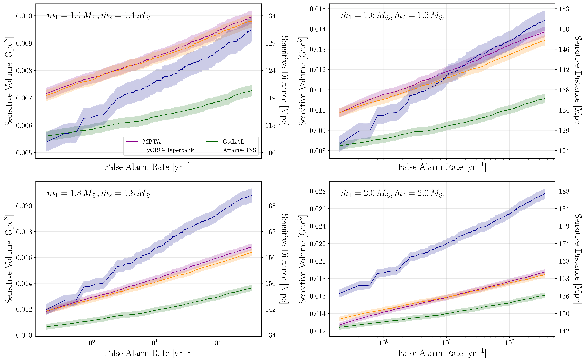
图注：Sensitive volume as a function of false alarm rate for four representative binary neutron star mass distributions: $\hat{m}_{1,2} = \{1.4, 1.6, 1.8, 2.0\}\;\msun$ in the source frame, with a width of $\Delta m_{1,2}=0.1\msun$. For each representative system, component masses are drawn from log-normal distributions centered on the quoted masses. The re-weighting procedure and the sensitivities for matched-filter pipelines are taken from GWTC-3~\(\cite{Abbott_2023}\) estimates. We show that {\aframe} achieves sensitivity comparable to matched-filter searches.
对应解读：对应“建议重点查看的图表”中的灵敏度或效率曲线，以及“关键图表逐图导读”图3关于 Aframe 与匹配滤波在同一误警率下比较的核心结果。
入选理由：该图直接给出 sensitive volume 随 false alarm rate 的变化，并按四组代表性双中子星质量分布比较 Aframe 与 GWTC-3 匹配滤波灵敏度，是支撑论文“接近匹配滤波最优灵敏度”主张的最关键证据。
来源与置信度：\(arxiv_source\)；high；\(arxiv_source\) / main.tex:figure[4]
Fig01
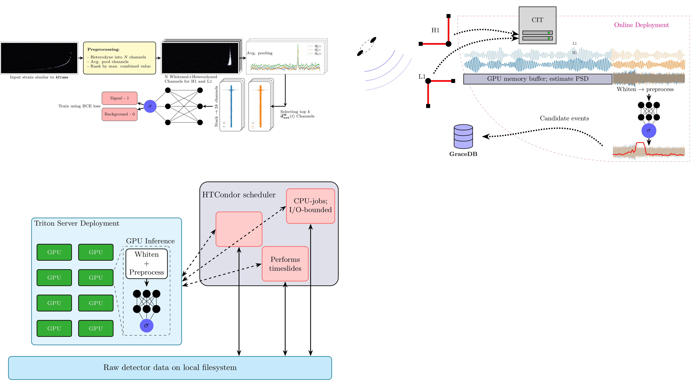
图注：This figure illustrates the three main components of the {\aframe} search pipeline. (a) \(\textit{Training pipeline}\): detector strain is loaded from disk and processed through a preprocessing stage that includes waveform injection, dynamic power spectral density estimation and whitening, heterodyning, average pooling, and selection of the top $k$ heterodyne channels. The resulting representations are labeled as signal or background and used to train the neural network through binary cross-entropy loss. (b) \(\textit{Online inference pipeline}\): streaming strain data from the H1 and L1 detectors are buffered in a snapshotter and processed using the same preprocessing steps as during training. The selected top $k$ heterodyned channels are passed to the trained neural network, whose outputs are integrated to produce a detection statistic. Events exceeding a public detection threshold are uploaded to GraceDB~\footnote{\url{https://gracedb.ligo.org}} for follow-up. (c) \(\textit{Offline sensitivity analysis}\): the trained model is deployed in a streaming configuration using Triton Inference Server. Background distributions are constructed through \(\emph{timeslides}\) to estimate false alarm rates, while simulated signal injections are analyzed to measure the sensitive volume. The analysis is distributed across multiple GPUs using {\htcondor} workflow to accelerate large-scale background and foreground processing.
对应解读：对应“关键图表逐图导读”图1的方法流程图，以及日报中关于训练、在线推理、离线背景估计和部署链路的解读。
入选理由：该图完整展示训练管线、在线推理管线和离线灵敏度分析，包括注入、PSD估计、白化、外差、top k 通道选择、神经网络输出、GraceDB 上传、timeslides 背景和多 GPU 离线分析，能同时支撑方法可行性和工程部署价值。
来源与置信度：\(arxiv_source\)；high；\(arxiv_source\) / main.tex:figure[1]
Fig02
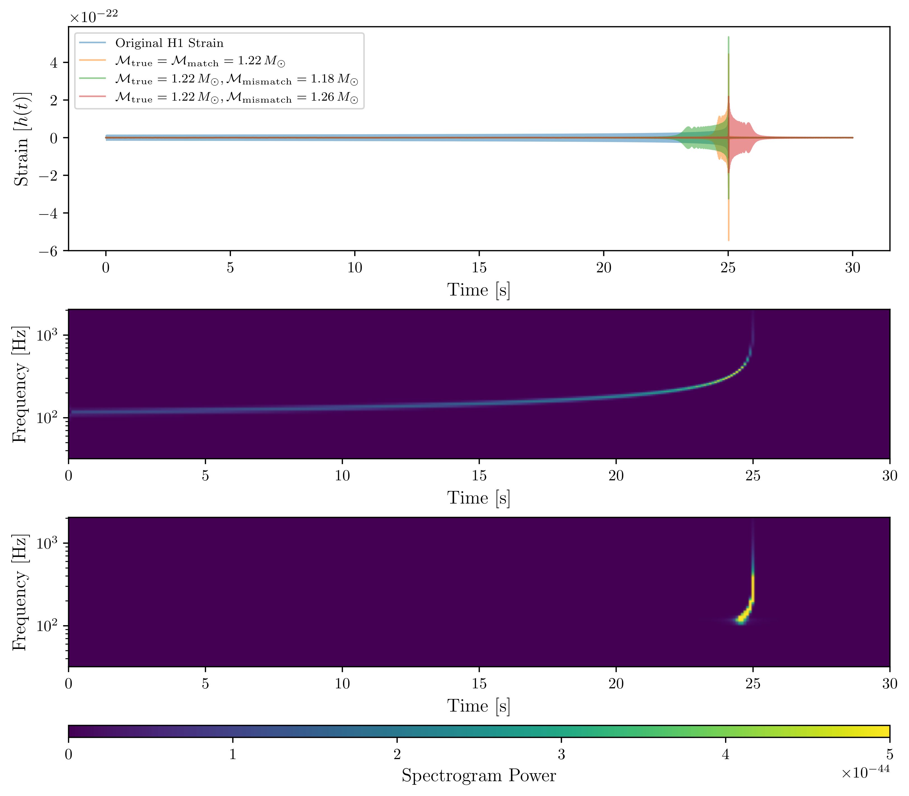
图注：We show the effect of the heterodyne transformation on a representative binary neutron stars waveform for matched and mismatched chirp masses in the H1 detector. The top panel shows the heterodyned timeseries representation, while the bottom two panels show the corresponding spectrograms. For a matched chirp mass, the inspiral phase is largely removed, and the signal power becomes concentrated near the merger time. This localization is visible in the spectrogram as a concentration of power within a compact temporal region. In contrast, mismatched chirp masses leave a residual phase evolution in the waveform but remain concentrated closer to the merger.
对应解读：对应“建议重点查看的图表”中的外差前后信号表示图，以及“关键图表逐图导读”图2关于原始 BNS chirp 被搬移到低频基带的说明。
入选理由：该图直接展示外差变换对双中子星波形的影响，并比较 chirp mass 匹配与不匹配时的时序和谱图表现，是理解本文如何把长时 BNS 信号压缩成神经网络可处理表示的关键图。
来源与置信度：\(arxiv_source\)；high；\(arxiv_source\) / main.tex:figure[2]
Fig09
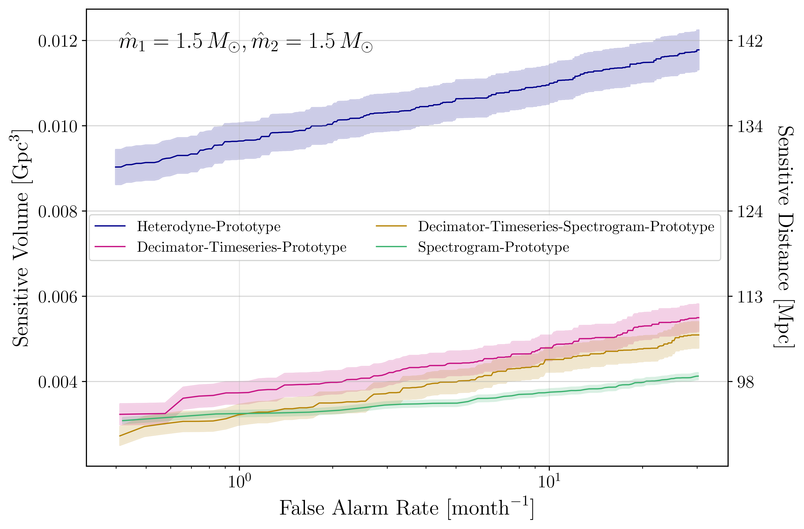
图注：Sensitive volume as a function of false alarm rates for the different exploratory approaches designed to incorporate longer-duration inspiral information for binary neutron stars.
对应解读：对应“建议重点查看的图表”中的消融实验或稳健性图，以及“关键图表逐图导读”图6关于不同外差或长时 inspiral 信息处理方案的比较。
入选理由：该图比较多种纳入长时 inspiral 信息的探索方案在 sensitive volume 与 false alarm rate 上的表现，能够判断最终方法的性能提升是否来自特定物理启发预处理，是解释方法选择和消融结论的重要证据。
来源与置信度：\(arxiv_source\)；high；\(arxiv_source\) / main.tex:figure[9]
Fig06
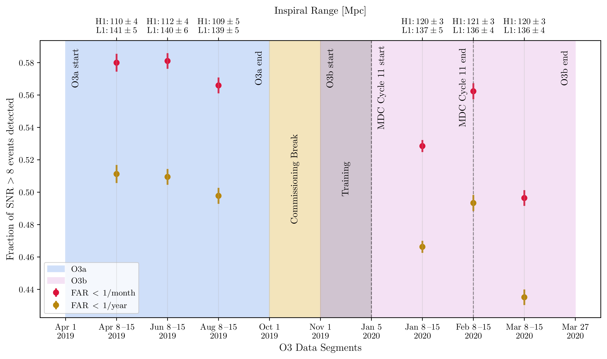
图注：The fraction of network $\mathrm{SNR}>8$ injected events recovered at false alarm rate thresholds of $\mathrm{1/month}$ and $\mathrm{1/year}$ for different weeks throughout the O3 observing run.
对应解读：对应“建议重点查看的图表”中的稳健性图和参数空间/噪声时期效率检查，尤其是不同 O3 周次、不同 FAR 阈值下的注入恢复率。
入选理由：该图给出 network SNR>8 注入事件在 1/month 和 1/year 误警率阈值下、跨 O3 不同周的恢复比例，可检验模型对真实观测噪声非平稳性的稳定性，比单一平均灵敏度更能暴露运行期性能波动。
来源与置信度：\(arxiv_source\)；high；\(arxiv_source\) / main.tex:figure[6]
Fig03
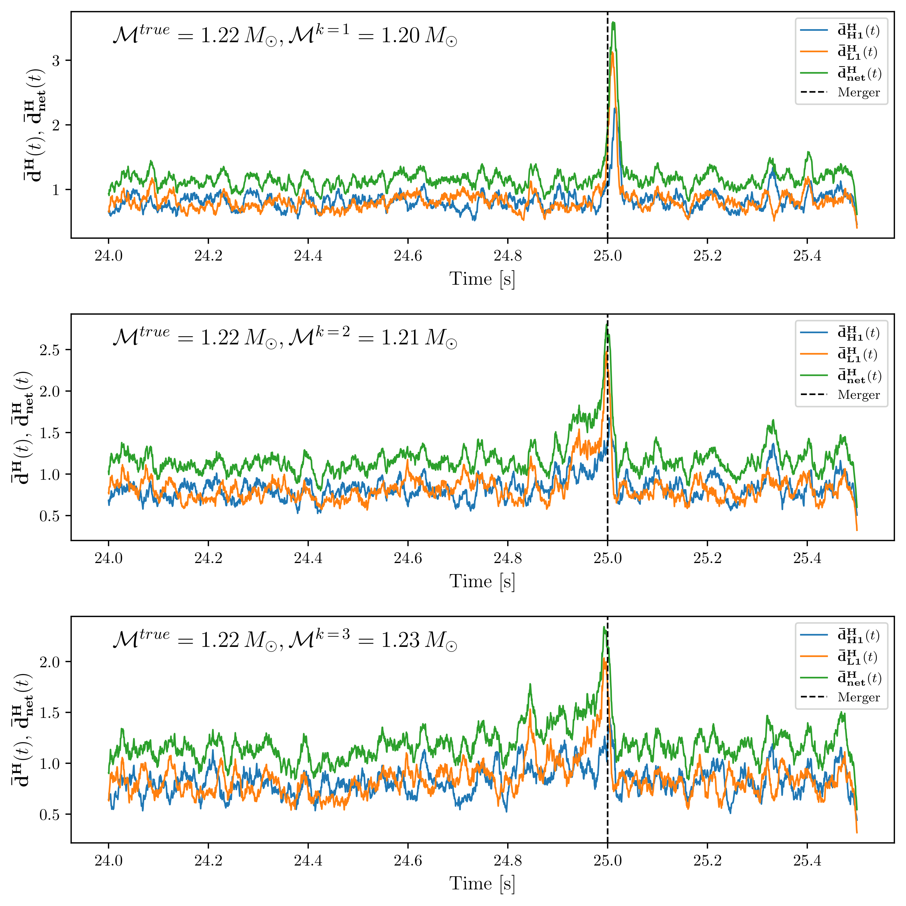
图注：This figure shows the selection of the most informative heterodyned chirp-mass channels for a binary neutron star signal using a top $k$ ranking based on the peak amplitude of the network-combined response. The panels show the average-pooled heterodyned timeseries {\heterodatapooled}(t) for H1 and L1, for individual chirp-mass channels and the corresponding network-combined representation, $\heterodatapooled_{\mathrm{net}}(t)$. The merger occurs at $t_{c}=25$s, which is near the peak time $t_0 = \argmax [{\heterodatapooled}_{\mathrm{net}}(t)]$ for each of the panels. Channels are then ranked according to the peak amplitude $\heterodatapooled_{\mathrm{net}}(t)$, and the top $k=10$ channels are retained for subsequent inference. Here the top three are shown for a visual sense.
对应解读：对应“建议重点查看的图表”中关于外差设置、参数空间选择效应和诊断量的检查，也补充“关键图表逐图导读”图1、图2中 top k heterodyne channels 的方法细节。
入选理由：该图展示不同 chirp-mass 外差通道的平均池化时序、H1/L1 及网络合成响应，并说明如何按峰值幅度选择 top k=10 通道；它有助于判断外差参考和通道筛选是否可能造成参数空间选择效应。
来源与置信度：\(arxiv_source\)；high；\(arxiv_source\) / main.tex:figure[3]
强相关工作
这篇工作与两条文献线直接相连。第一条是传统紧致双星匹配滤波搜索，包括 PyCBC、GstLAL、MBTA 和 LVK 低延迟告警系统；这些工作提供了本文所谓“最优灵敏度”或“成熟基线”的参照。检索关键词可用 “binary neutron star matched filtering low latency GstLAL PyCBC MBTA LIGO Virgo KAGRA”。第二条是深度学习引力波搜索，包括早期 CNN 分类双黑洞信号、端到端时序网络、以及 Aframe 在第四观测运行中的实时部署。检索关键词可用 “Aframe gravitational wave deep learning search O4 binary black hole live detection”。
同一源背景方面，本文不是针对某个单一事件，而是面向双中子星这一同类源搜索；因此最重要的历史原型是 GW170817，同类观测目录是 LVK 引力波瞬变目录以及公开警报系统。相反观点或张力主要来自方法论层面：匹配滤波在高斯噪声中有明确最优性和可解释统计量，而神经网络搜索需要额外证明背景尾部、分布漂移和训练注入选择不会造成不可控误警或漏检。建议同时检索 “GW170817 multimessenger”, “GWTC compact binary coalescence catalog”, “deep learning gravitational wave false alarm rate”, “machine learning distribution shift LIGO noise”。
同一事件 / 同类源线索：
- https://arxiv.org/abs/2607.01372
- https://arxiv.org/pdf/2607.01372
- https://www.ligo.org/detections/GW170817.php
- https://www.gw-openscience.org/
- https://gracedb.ligo.org/
相似工作：
- https://arxiv.org/abs/1711.03121
- https://arxiv.org/abs/1805.11579
- https://arxiv.org/abs/1512.02357
- https://arxiv.org/abs/2010.14527
基础理论 / 方法工作：
- https://arxiv.org/abs/1710.05832
- https://arxiv.org/abs/1710.05833
- https://arxiv.org/abs/1602.03840
- https://arxiv.org/abs/1310.1528
相反观点 / 张力线索：
8. Constraining the near-source relativistic wind medium using Fast Radio Burst circular polarization data
- 来源：arXiv / astro-ph.HE
- 链接：https://arxiv.org/abs/2607.01369v1
- 作者：Om Gupta, Pawan Kumar, Paz Beniamini
- 评分：novelty 8/10，importance 7/10，relevance 8/10，final 8.65/10
- 推荐理由：Uses FRB circular polarization to constrain near-source magnetar relativistic winds, including applications to SGR 1935+2154; strong compact-object plasma/FRB source-physics relevance and potentially novel diagnostic.
中文题目：用快速射电暴圆偏振约束近源相对论磁星风环境
做了什么：这篇文章问一个很具体的问题：一些快速射电暴观测到的 Stokes \(V\) 圆偏振，是否不一定是辐射机制本身产生的，而可能是在磁星近源相对论风中由 Faraday conversion 把线偏振转化出来的。作者把强 FRB 电磁波会提高 \(e^{\pm}\) 有效质量这一非线性效应放进传播计算，研究 Stokes 参数随频率和风参数的演化。主要结论是：磁星风中的 Faraday conversion 可以覆盖 FRB 中从显著圆偏振到非探测的宽范围观测结果；反过来，圆偏振上限已经能对风光度、磁化度、体洛伦兹因子、离子成分和有效粒子质量给出强约束。文章还指出，产生显著圆偏振的区域通常不同于产生大旋转量 \(\mathrm{RM}\) 的区域，这对解释 FRB 近源等离子体结构很关键。
为什么重要：FRB 偏振通常被用来讨论磁层辐射机制、传播介质和宿主环境，但圆偏振尤其难解释：它可能是本征的，也可能是传播效应。本文的重要性在于，它把 Stokes \(V\) 从一个“现象学特征”变成了可反推近源相对论风参数的诊断量。若模型成立，非探测同样有信息量，因为低 \(V\) 可以排除某些高风光度、低体洛伦兹因子或特定离子负载的风模型。
理论 / 观测 / 仪器方法价值：对理论而言，文章把强波修正后的等离子体传播、Faraday conversion 和磁星风动力学联系起来，给出了可直接和频率分辨偏振谱比较的框架。对观测而言，它说明宽带全 Stokes 观测不只是描述 FRB 辐射特征，还能约束爆发瞬时的近源风状态。对方法而言，它强调需要同时拟合 \(I,Q,U,V\) 及其频率振荡，而不是只用带宽平均圆偏振比例。
为什么应该关注：如果你关心 FRB 的中心引擎、磁星风、磁层辐射机制或偏振传播，这篇文章值得看，因为它提出了一条用单次爆发偏振谱测量近源环境的新路线。特别是对 FRB 20201124A、FRB 20180301A 和 SGR 1935+2154 这类有高质量偏振数据的源，模型把“有没有圆偏振”转化为风光度、磁化度和洛伦兹因子的约束，而这些量通常很难直接观测。
展开详细解读：文章讲解、背景、理论、重点章节、图表与相关工作
文章详细讲解
科学问题：FRB 常表现出高线偏振、复杂的频率结构和有时显著的圆偏振。圆偏振 \(V\) 的来源长期不清楚：它可能来自发射区的相干辐射机制，也可能是线偏振在传播过程中经过各向异性磁化等离子体后转化而来。本文关注后者，特别是磁星近源相对论风中的 Faraday conversion。这个问题重要，因为近源风的风光度、磁化度、粒子成分和体洛伦兹因子决定了 FRB 辐射能否逃逸、是否会被吸收或退偏振，也关系到磁星活动如何向外输运能量。
作者怎么做：文章建立了 FRB 脉冲穿过磁星风时的偏振传播模型，跟踪 Stokes 参数 \(I,Q,U,V\) 沿路径和频率的演化。与许多线性传播处理不同，作者特别考虑了 FRB 强电磁波本身对 \(e^{\pm}\) 运动的影响：在强波中，带电粒子的横向振荡会提高有效惯性，可用有效质量或等效洛伦兹因子修正等离子体频率和双折射系数。模型参数包括风光度、磁化度、体洛伦兹因子、磁场几何、粒子成分以及 FRB 的瞬时光度。随后作者把模型结果与已有 FRB 的圆偏振探测或上限比较，包括 FRB 20201124A、FRB 20180301A 和银河磁星 SGR 1935+2154 的相关爆发。
关键结果：模型可以产生从接近零到可观的圆偏振比例，因而同时解释“有些 FRB 有明显 \(V\)”和“许多 FRB 没有显著 \(V\)”这两类观测。频率分辨 Stokes 谱尤其有诊断力：在高风密度或低 FRB 光度区域，Stokes 参数会随频率快速振荡，带宽平均后表现为 Stokes \(V\) 退偏振。这意味着简单报告一个积分圆偏振比例可能会低估传播效应。作者还发现，若同一近源风同时负责很大的 \(\mathrm{RM}\) 和显著的 Faraday conversion，参数空间会受到很强限制；在很多可行情形下，产生显著圆偏振和产生主要 \(\mathrm{RM}\) 的区域应当分离。
局限和下一步：模型依赖对磁星风结构、磁场几何、粒子成分和 FRB 发射高度的假设，真实近源环境可能是时变、非轴对称和团块化的。观测上，许多 FRB 的 Stokes \(V\) 上限受到仪器泄漏、偏振校准、带宽平均和散射影响。下一步最关键的是获得高时间分辨、高频率分辨、严格校准的全 Stokes 动态谱，并对同一重复源的多次爆发做联合拟合；这样可以检验风参数是否随爆发能量、活动相位或 \(\mathrm{RM}\) 变化而系统演化。
关键结果是怎么做出来的
本文的证据链从样本和观测量选择开始。作者关注的是已有全 Stokes 偏振测量的 FRB，而不是只看总强度样本；核心输入包括圆偏振比例或其上限、线偏振比例、频率覆盖、爆发光度估计，以及在部分源中可用的频率分辨 Stokes 谱。文中特别提到 FRB 20201124A、FRB 20180301A 和 SGR 1935+2154，因为这些源要么有较好的偏振数据，要么在磁星解释中具有直接物理参照。样本不是用来做人口统计显著性，而是用来把具体观测约束投影到近源风参数空间。
最重要的模型比较是：给定 FRB 光度和观测频段，哪些风光度、磁化度、体洛伦兹因子和粒子成分会产生超过观测上限的 \(V\)，哪些会由于 conversion 不足或频率振荡平均而保持低 \(V\)。因此，非探测并非“没有结果”，而是形成排除区。作者计算 Stokes 参数随传播距离和频率的演化，并把带宽内的振荡纳入讨论；这直接影响观测中报告的平均 \(V/I\)。若模型预测 \(V\) 在频率上快速正负摆动，低分辨或宽带积分观测会显示较小的净圆偏振。
统计意义在本文中主要表现为参数约束和上限排除，而不是单一的 \(5\sigma\) 式发现。对每个源，观测给出 \(V/I\) 的测量值或上限，模型网格给出对应参数组合的预测值；若预测超过上限，参数组合被排除。若有频率分辨 Stokes 谱，则不仅比较总 \(V/I\)，还可比较 \(Q,U,V\) 的频率依赖形状、振荡周期和相位结构，这比单点圆偏振比例更强。支撑结论的图表应包括参数空间排除图、Stokes 谱随频率的模型曲线，以及不同 FRB 光度或风状态下的转换效率图。
系统误差主要来自四类。第一是偏振校准误差，特别是仪器把 Stokes \(U\) 或 \(Q\) 泄漏到 Stokes \(V\) 的项。第二是源的本征圆偏振未知；若发射机制本身产生 \(V\)，传播模型反推出的风参数会偏移。第三是 FRB 光度、距离和辐射束角的不确定性，这些直接进入强波有效质量修正。第四是风模型简化，例如采用平滑径向风、固定磁化度或理想化磁场几何，而真实磁星风可能有磁重联、团块和时间变化。
稳健性检验的核心思路是改变风参数、FRB 光度、粒子成分和频率分辨率，看结论是否仍成立。本文的关键稳健结果是，Faraday conversion 在合理参数范围内确实能产生观测到的宽范围 \(V\)，同时频率振荡导致的退偏振可解释许多非探测。另一个值得关注的稳健结论是 \(\mathrm{RM}\) 与显著 \(V\) 的区域分离：如果未来对同一爆发同时测到强 \(V\) 和极大 \(\mathrm{RM}\)，且二者频率结构不能由分区模型解释，将会成为检验本文框架的重要反例。
展开背景、理论、公式、模型、章节和图表导读
背景知识
FRB 是毫秒级射电暂现源，亮温度极高，几乎必然需要相干辐射机制。许多重复 FRB 显示高线偏振和显著的旋转量 \(\mathrm{RM}\)，说明辐射在离开源区后经过了强磁化等离子体。偏振不仅记录发射机制，也记录传播路径；这使得 FRB 成为探测致密天体近源环境的工具。
圆偏振在 FRB 中尤其微妙。若 Stokes \(V\) 是本征的，它可能指向曲率辐射、等离子体 maser 或磁层相干过程中的手征性。若 \(V\) 是传播产生的，则同一个观测现象可以反映近源等离子体的双折射，而非发射区本身。区分这两种情况对于判断 FRB 发射位置和中心引擎性质非常重要。
Faraday rotation 和 Faraday conversion 是两个相关但不同的传播效应。前者让线偏振角随波长平方旋转，通常由磁场沿视线分量和电子柱密度控制；后者则可在线偏振和圆偏振之间转换，依赖等离子体的相对论性、磁场方向、粒子分布和传播本征模结构。很多讨论把 FRB 偏振主要归结为 \(\mathrm{RM}\)，但本文强调 \(V\) 携带的是不同组合的近源信息。
为什么现在值得重新看？一方面，重复源如 FRB 20201124A 和 FRB 20180301A 已经积累了频率分辨偏振数据；另一方面，SGR 1935+2154 的银河磁星射电爆发把磁星与 FRB 现象直接联系起来。随着观测灵敏度和偏振校准提升，Stokes \(V\) 的上限本身也变得有物理意义。过去“未探测到圆偏振”常被当作附带信息，现在可以成为排除近源风模型的约束。
该领域常见误区包括：把圆偏振直接等同于本征发射；把低 \(V/I\) 理解为没有近源传播效应；只用带宽平均偏振比例而忽视频率振荡；以及把产生 \(\mathrm{RM}\) 的区域默认等同于产生 Faraday conversion 的区域。本文的贡献正是把这些直觉拆开，给出可计算的参数依赖。
基础理论 / 方法脉络
从物理图像看，线偏振电磁波穿过磁化等离子体时，会分解成两个传播本征模。若两个本征模的相速度不同，二者相位差会随传播距离累积。相位差表现为 Stokes 向量在偏振空间中的旋转：某些条件下是 \(Q\) 与 \(U\) 之间的 Faraday rotation，另一些条件下则会把线偏振分量转换成圆偏振 \(V\)。
在普通冷等离子体中，传播系数主要由等离子体频率、回旋频率、磁场方向和观测频率决定。但 FRB 波非常强，带电粒子在波场中产生相对论性振荡，有效惯性增加。等效地，\(e^{\pm}\) 的有效质量变大，等离子体频率降低，双折射强度也改变。本文把这一点纳入磁星风传播模型，是区别于简单线性 Faraday conversion 估计的关键。
磁星风通常被描述为相对论外流，具有风光度、磁化度和体洛伦兹因子。磁化度衡量 Poynting 通量相对于粒子动能通量的大小；体洛伦兹因子决定共动系中的密度、磁场和辐射频率；离子是否存在会改变惯性和电荷中性条件。FRB 脉冲在风中传播时，观测到的 conversion 效率取决于这些量在发射半径到外部半径之间的径向积分。
观测方法上，真正有用的是频率分辨的 Stokes 动态谱。若只测一个带宽平均 \(V/I\)，可能把快速正负振荡平均掉；若能看到 \(Q,U,V\) 随频率的同步振荡，就能直接估计 conversion 深度和风参数。偏振角、\(\mathrm{RM}\)、线偏振比例和圆偏振比例必须一起看，因为它们对应不同传播系数。
主要退化关系包括：较高风密度与较长路径长度都可增强相位积累；较高 FRB 光度会通过强波有效质量修正削弱等离子体响应；较大的体洛伦兹因子会改变共动频率和密度；磁场几何会改变投影因子。系统误差则包括偏振泄漏、带宽退偏振、散射尾混合不同偏振相位，以及源本征 \(V\) 与传播产生 \(V\) 的不可分性。
公式与推导
第一步从 Stokes 向量开始。设辐射的偏振状态为 \({\bf S}=(Q,U,V)\)，总强度为 \(I\)。在无吸收、只考虑双折射的近似下，偏振传播可写成
其中 \(s\) 是路径长度，\({\boldsymbol{\Omega}}\) 是由磁化等离子体本征模相位差决定的旋转向量。\({\boldsymbol{\Omega}}\) 的不同分量分别对应 Faraday rotation 和 Faraday conversion。
Faraday rotation 的经典可观测量是旋转量
其中 \(e\) 是元电荷，\(m_e\) 是电子质量，\(c\) 是光速，\(n_e\) 是电子数密度，\(B_{\parallel}\) 是沿视线磁场。它给出偏振角
这里 \(\lambda\) 是波长，\(\psi_0\) 是本征偏振角。本文强调的是，\(\mathrm{RM}\) 与 conversion 不一定来自同一区域。
在磁星风中，粒子密度可由风的粒子能流估计。若各向同性等效风光度为 \(L_w\)，体洛伦兹因子为 \(\Gamma_w\)，磁化度为 \(\sigma\)，半径为 \(r\)，则粒子能流数量级满足
其中 \(n'_w\) 是风共动系粒子密度，\(m_{\rm eff}\) 是强波修正后的有效质量。该式说明给定 \(L_w\) 时，较大的 \(\Gamma_w\)、\(m_{\rm eff}\) 或 \(\sigma\) 会降低所需的共动粒子密度。
强 FRB 波的无量纲振幅可写为
其中 \(E\) 是波电场强度，\(\omega=2\pi\nu\) 是角频率。相对论振荡使有效质量近似变为
在 \(a_0\gg1\) 时等离子体响应被显著削弱。这是本文把 FRB 光度纳入传播系数的关键入口。
有效等离子体频率因此变为
它控制双折射强度。Faraday conversion 的深度可用一个沿路径积分的相位量表示，数量级为
其中 (
\(ho_C\)) 是 conversion 系数，依赖 \(\omega_{p,\rm eff}\)、回旋频率、磁场投影角、共动频率和粒子分布。
若初始辐射主要为线偏振，且 conversion 深度不太大，一个简化极限给出
其中 \(p_L=\sqrt{Q^2+U^2}/I\) 是线偏振比例。该式不是完整模型，但直观说明 \(V/I\) 会随 \( au_C\) 振荡，而不是单调增加。
观测带宽平均会进一步改变结果。若仪器在频率区间 \([\nu_1,\nu_2]\) 内积分，则测得的圆偏振为
其中 \(R(\nu)\) 是频率响应。若 \(V(\nu)\) 快速正负振荡，平均值会显著小于瞬时幅度。
参数约束可写成似然或排除条件。若观测给出 \(V/I\) 的测量值 \(d_i\) 和误差 \(\sigma_i\)，模型为 \(M_i({\boldsymbol{\theta}})\)，则
其中 \({\boldsymbol{\theta}}=(L_w,\sigma,\Gamma_w,m_{\rm eff},\ldots)\)。若只有上限 \(V_{\rm lim}\)，则满足 \(|M({\boldsymbol{\theta}})|>V_{\rm lim}\) 的参数组合被排除。
模型拟合 / 应用方法
本文的拟合对象不是传统意义上的光变曲线，而是全 Stokes 偏振量，尤其是 \(V/I\) 及其频率依赖。模型参数包括风光度 \(L_w\)、磁化度 \(\sigma\)、体洛伦兹因子 \(\Gamma_w\)、粒子成分、有效质量修正、磁场几何和 FRB 光度。若有频率分辨数据，应同时拟合 \(Q(\nu),U(\nu),V(\nu)\)，而不只是一个平均圆偏振比例。
似然可以按观测情况分两类。对于有测量值的频率通道，可用高斯误差构造 \(\chi^2\) 或全协方差似然；对于非探测，则用截断似然或上限排除条件。由于 Stokes 参数之间存在仪器校准协方差，严格分析应把偏振泄漏矩阵纳入模型，否则微弱 \(V\) 的显著性可能被高估。
参数退化是解读的重点。较大的 \(L_w\) 通常增加等离子体密度并增强 conversion，但较大的 FRB 光度会增大 \(m_{\rm eff}\)，反而削弱响应。较大的 \(\Gamma_w\) 同时改变共动密度、频率和路径长度，不能只按单一方向理解。离子负载会增加惯性并改变有效质量，使同样的 \(V/I\) 对应不同的风光度或磁化度。
残差诊断应重点看频率结构。如果模型只匹配带宽平均 \(V/I\)，却无法再现 \(V(\nu)\) 的振荡周期或与 \(Q,U\) 的相位关系，那么传播解释并不充分。相反，如果 \(Q,U,V\) 的频率结构可以由同一组风参数解释，就比单点圆偏振测量更有说服力。
模型可能失败的场景包括：源本征圆偏振占主导；传播介质高度非均匀导致多路径混合；磁场几何与假设相差很大；或者观测中的 \(V\) 主要来自仪器泄漏。实际应用中，最稳妥的方式是对同一重复源的多次爆发做层级拟合，把源的长期环境参数和每次爆发的瞬时风状态分开。
重点章节 / 结果段落怎么读
数据和观测约束部分应先读。这里需要弄清作者采用了哪些 FRB 的 Stokes \(V\) 探测或上限、频率覆盖如何、是否有频率分辨谱、爆发光度如何估计。对 FRB 20201124A、FRB 20180301A 和 SGR 1935+2154，要特别注意它们是作为个例约束而非均匀统计样本使用。
理论模型部分是全文核心。读者应关注作者如何写磁星风的密度、磁场、磁化度和体洛伦兹因子，以及如何把强 FRB 波导致的 \(e^{\pm}\) 有效质量增加放入传播系数。这决定了参数约束是否可信。
Stokes 传播计算部分需要看 \(I,Q,U,V\) 如何沿路径演化，以及 Faraday conversion 与 Faraday rotation 如何区分。特别要看模型是否允许频率上的快速振荡，因为这直接关系到为什么某些源即使存在强传播效应也可能显示低带宽平均 \(V\)。
结果部分应重点读参数空间图。哪些区域被 \(V\) 上限排除，哪些区域能产生可测圆偏振，哪些区域因退偏振而看似无 \(V\)，这些图比文字结论更重要。要注意不同 FRB 光度、不同 \(\Gamma_w\)、不同 \(\sigma\) 的趋势。
讨论和局限部分要看作者如何处理 \(\mathrm{RM}\) 与 \(V\) 的关系。本文的一个关键物理判断是，显著圆偏振和大 \(\mathrm{RM}\) 往往不应简单归因于同一均匀区域。这个结论对未来多频偏振观测的设计很有指导意义。
建议重点查看的图表
-
参数空间排除图：看横纵轴是否为 \(L_w\)、\(\Gamma_w\)、\(\sigma\) 或等效质量相关参数；重点看观测 \(V/I\) 上限排除了哪些区域。
-
Stokes 参数随频率变化图：检查 \(Q,U,V\) 是否出现快速振荡，振荡周期是否在实际观测频率分辨率内可见，以及带宽平均后是否会退偏振。
-
不同 FRB 光度下的 conversion 效率图：看低光度爆发是否更容易产生可测 \(V\)，以及高光度爆发是否因强波有效质量修正而降低 conversion。
-
针对 FRB 20201124A、FRB 20180301A、SGR 1935+2154 的个例约束图或表：检查每个源的输入观测量、假设距离、光度和偏振上限。
-
\(\mathrm{RM}\) 与 Faraday conversion 区域比较图：看产生大 \(\mathrm{RM}\) 的参数区域是否与产生显著 \(V\) 的区域重叠。
-
稳健性或附录图：重点检查改变粒子成分、离子负载、磁场角度和频率分辨率后，主要排除结论是否保持。
关键图表逐图导读
图 1：通常应是模型示意或参数依赖概览。横轴可能是半径、风参数或频率，纵轴可能是传播系数或 conversion 深度。读图时要确认曲线是在观测者系还是风共动系下给出，以及是否已经包含强波有效质量修正。陷阱是把 conversion 系数的局部峰值误读成最终可观测 \(V/I\)。
图 2：若展示 Stokes 谱，横轴应为频率，纵轴为归一化的 \(Q/I,U/I,V/I\) 或偏振比例。数据点或模型线的关键是 \(V\) 是否随频率正负振荡，以及振荡是否与 \(Q,U\) 的变化相干。读图时要注意通道宽度；若模型振荡比通道更快，观测会看到平均后的低 \(V\)。
图 3：参数空间约束图应是本文最重要的图类之一。横轴和纵轴可能为 \(L_w\) 与 \(\Gamma_w\)、\(L_w\) 与 \(\sigma\)，颜色表示 \(V/I\) 或是否超过观测上限。读者应看排除边界是否陡峭、是否随 FRB 光度明显移动，以及是否存在多解区域。陷阱是把单个源的排除区推广为所有 FRB 的通用限制。
图 4：若有不同源的对比图，重点是 FRB 20201124A、FRB 20180301A 和 SGR 1935+2154 的约束是否来自相同假设。坐标轴相同并不意味着物理条件相同，因为距离、爆发光度和观测频段会改变强波参数。读图时应同时查对应表格中的输入观测量。
图 5：若展示 \(\mathrm{RM}\) 与 conversion 的关系，应看两种诊断量的高值区域是否重叠。若不重叠，说明同一均匀屏幕同时解释大 \(\mathrm{RM}\) 和强 \(V\) 会困难。陷阱是认为没有重叠就否定磁星风模型；更合理的解释可能是不同半径或不同时间的风区贡献不同。
图 6：稳健性图通常检查粒子成分、磁场角度、离子负载或有效质量处理。读者应看主要结论是否只在很窄的假设下成立。如果少量改变参数就使 \(V/I\) 从可测变为不可测，那么未来观测需要用频率分辨谱而非单一上限来打破退化。
论文原图 / 可嵌入图片
Fig07
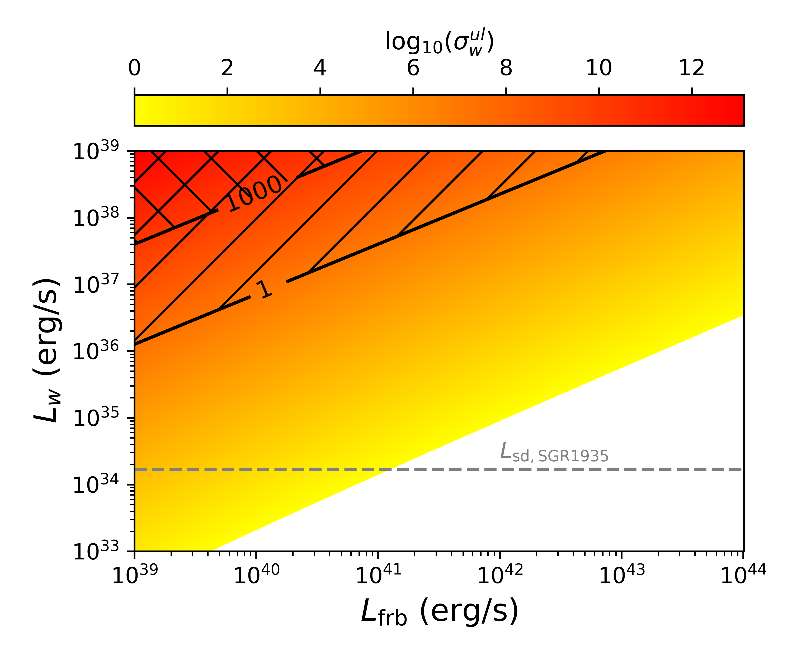
图注：log$_{10}$ of $\sigma_w^{ul}$ --- the upper limit of $\sigma_w$ --- required to generate detectable circular polarization ($|V/U_0| \gtrsim 0.01$), as a function of $L_{\rm frb}$ and $L_{w}$. The white region represents the parameter space that is not allowed, if we assume the wind to be magnetically dominated. We can also use the frequency resolution, $\nu_{\rm res}$, of our detector to additionally rule out the parameter space where $\Pi_V < 0.01$ due to depolarization. The black diagonal contours denote that the parameter space toward the top-left is ruled out, in the case where $\sigma_w > \{1, 1000\}$, when $V(\nu)$ is averaged over $\nu_{\rm res} = 1$ MHz. The respective regions are shown as hatched and cross-hatched. Alternatively, the same contours and hatches work with the combination of $\sigma_w > 1$ and $\nu_{\rm res} = \{1 \;{\rm MHz}, 1 \;{\rm kHz} \}$. The contours are an observational limitation derived result, and make no restriction to the physically possible parameter range. The horizontal dashed gray line marks the spin-down luminosity of SGR 1935+2154 \(\citep{Israel2016},\) indicative of a typical active magnetar. Our analytical model has been used to generate these constraints.
对应解读：“建议重点查看的图表”第1项参数空间排除图，以及“关键图表逐图导读”图3；也对应模型拟合段落中关于用圆偏振上限约束风光度、磁化度和频率分辨率退偏振的讨论。
入选理由：这是候选图中最直接的全局参数空间约束图，坐标为FRB光度与风光度，颜色给出可产生可探测圆偏振所需的磁化度上限，并标出因带宽平均退偏振而被排除的区域。它最能支撑日报中关于观测V/I上限、频率分辨率和磁化主导风参数排除边界的核心解读。
来源与置信度：\(arxiv_source\)；high；\(arxiv_source\) / main.tex:figure[7]
Fig02
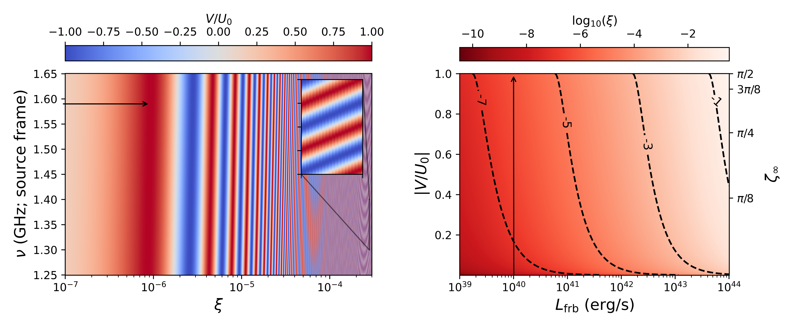
图注：(\textit{left}) The frequency dependence of $V/U_0$ (in color) from our analytical model as a function of the wind parameter $\xi \equiv L_{w, 37}^2\sigma_w / (1+\sigma_w)^2 \gamma^2$. The frequency-dependent oscillation of $V$ intensifies with increasing $\xi$, and the inset shows rapid oscillations from a small patch at high $\xi$. $L_{\rm frb} = 10^{40}$ erg/s, and the FRB is initially 100\% linearly polarized, with $U_0 = 1.0, Q_0 = V_0 = 0$ at the base of the wind $R_0$. Only $U_0$ is converted into circular polarization, since—by the choice of coordinates—the magnetic field in the $e^\pm$ wind is aligned along the x-axis. Inset coordinates are $\xi \in [2.8-2.82]\times10^{-4}$ and $\nu \in [1.3-1.4]$ GHz. (\textit{right}) The color denotes $\xi$ as a function of the FRB luminosity and the observed $|V|$ normalized by $|U_0|$, computed when $\zeta_{\infty} \leq \pi/2$ (shown on the right-side y-axis). The dashed contour lines indicate levels of log$_{10}(\xi)$ corresponding to the color. The angular frequency $\omega = 10^{10}$ rad/s, and input Stokes parameters are the same as the left plot. The two plots can be related as follows: the vertical arrow in the right plot at $L_{\rm frb} = 10^{40}$ erg/s is equivalent to the horizontal arrow in the left plot at $\nu \approx 1.59$ GHz, extending to the first region where $V/U_0=1$.
对应解读：“建议重点查看的图表”第2项Stokes参数随频率变化图和第3项不同FRB光度下conversion效率图；对应“关键图表逐图导读”图2。
入选理由：左图直接展示V/U0随频率和风参数xi的振荡，右图把FRB光度、观测|V|和xi联系起来，正好对应日报强调的快速频率振荡、低/高光度下conversion效率变化，以及强波有效质量修正导致的参数退化。
来源与置信度：\(arxiv_source\)；high；\(arxiv_source\) / main.tex:figure[2]
Fig03
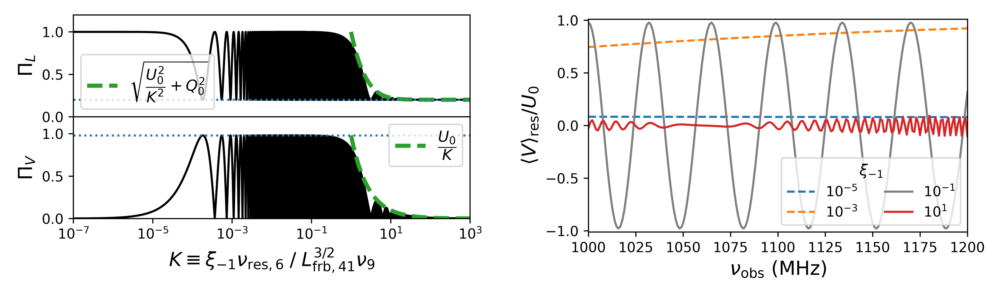
图注：(\textit{left}) The evolution of the degree of linear polarization, $\Pi_L$, and the degree of circular polarization, $\Pi_V$, as a function of $K = \xi_{-1} \nu_{\rm res,6} \;/\; L_{\rm frb,41}^{3/2} \nu_9$, for the analytical case with $Q_0= 0.2$ and $V_0=0$. Because of the magnetic field orientation we have chosen, Faraday conversion between Stokes $U$ and $V$ occurs. For $K < 1$, the oscillations qualitatively follow a horizontal trajectory in Figure \(\ref{fig:Lfrb_nu_vs_xi}.\) For larger $K$, the envelope of LP $= \sqrt{(U_0/K)^2+Q_0^2}$ while that of CP $= U_0/K$ (both shown as the dashed green line), denoting the observed linear and circular depolarization. The dotted blue line in the upper panel shows $\Pi_L (K \gg 1) \rightarrow Q_0$, while in the lower panel, it denotes $U_0$. (\textit{right}) The evolution of $V/U_0$, averaged over a frequency resolution of $\nu_{\rm res} = 1$ MHz, denoted as $\langle V \rangle_{\rm res}/U_0$, as a function of frequency. We set $L_{\rm frb} = 10^{41}$ erg/s. The dashed and solid colored lines show a few cases of interest, and $\xi_{-1}$ values much higher or lower than those shown result in $\langle V \rangle_{\rm res}/U_0 \approx 0$ ($\Pi_V \approx 0$; which are not shown). The frequency evolution of these cases can be used to determine how strong $K$ (or $\xi$) is, except when $K$ is too small or when complete depolarization happens ($K$ is large).
对应解读：“建议重点查看的图表”第2项关于Stokes频率振荡和带宽平均退偏振；也对应模型拟合段落中残差诊断应关注频率结构的部分。
入选理由：该图明确给出线偏振和圆偏振随控制参数K的演化，并在右图展示1 MHz频率分辨率平均后的V/U0随频率变化。它比单纯的理论示意更适合说明为何高风参数区会因快速振荡导致观测到的V退偏振。
来源与置信度：\(arxiv_source\)；high；\(arxiv_source\) / main.tex:figure[3]
Fig05
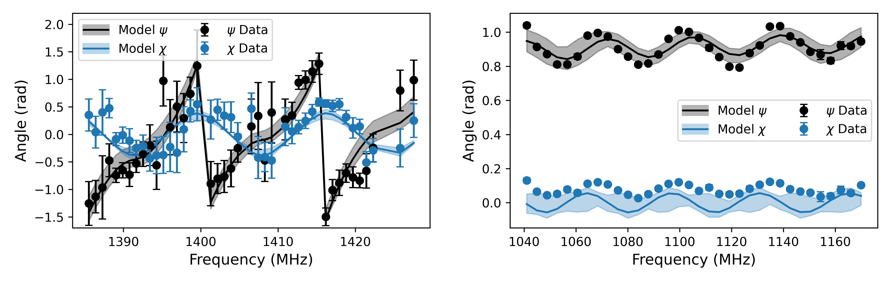
图注：(\textit{left}) Model fit of the frequency dependence of the observed Faraday uncorrected polarization angle, $\psi = 0.5 \tan^{-1}(U/Q)$ (in black), and ellipticity angle, $\chi = 0.5 \tan^{-1}(V/\sqrt{Q^2+U^2})$ (in blue), of the discovery burst of FRB 20180301A \(\citep{Price2019}.\) We choose $L_{w,37} = 100$ and restrict the initial CP by setting $\chi_0 = 0$. The best-fit RM is found to be $-3235$ \(\rmunit.\) The shaded $68\%$ confidence region shown is obtained using the methodology described in Appendix \(\ref{app:frb20201124a}.\) Our Faraday conversion model can reproduce closely the most rapid frequency-dependent variations seen for any FRB to date. (\textit{right}) Model fit of the frequency evolution of $\psi$ (Faraday corrected) and $\chi$ of FRB 20201124A's burst 926 from \(\citet{Xu2022},\) allowing full freedom on $\psi_0$ and $\chi_0$, and choosing $L_{w,37}=8$. This model is not able to explain the observed circular polarization, because it is limited to producing $\chi(\nu)$ that is symmetric about $0$ for this burst's luminosity, $L_{\rm frb} \sim 6.9 \times 10^{40}$ erg/s.
对应解读：“建议重点查看的图表”第4项FRB 20180301A和FRB 20201124A个例约束图；对应“关键图表逐图导读”图4及模型拟合段落中同时拟合偏振角、椭圆率角和频率结构的讨论。
入选理由：该图包含FRB 20180301A发现暴的频率依赖偏振角和椭圆率角拟合，并给出68%置信区间和最佳RM；右图还展示FRB 20201124A某次爆发中模型不能解释观测圆偏振的案例。它非常适合支撑日报中关于频率分辨Stokes谱比单点V/I更有诊断力、以及模型可能失败的讨论。
来源与置信度：\(arxiv_source\)；high；\(arxiv_source\) / main.tex:figure[5]
Fig09
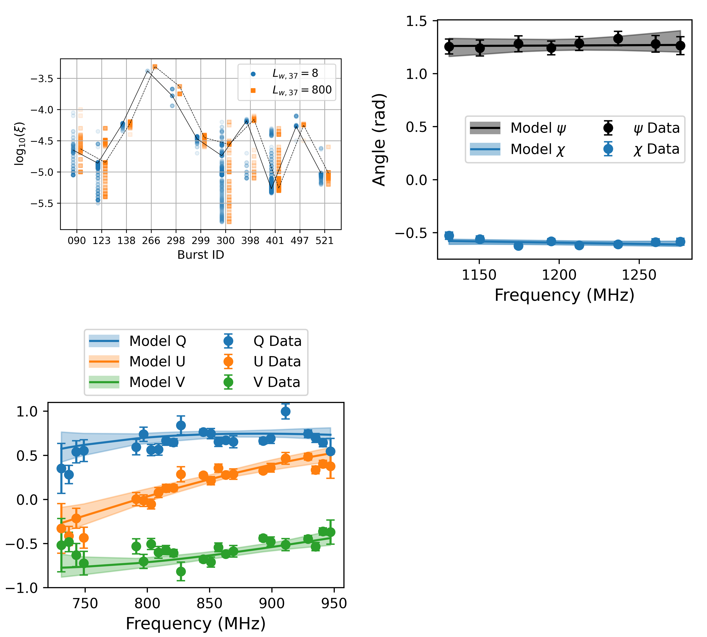
图注：(\textit{left}) The evolution of the best fit wind parameter $\xi$ for selected bursts from FRB 20201124A \(\citep{Jiang2024},\) shown for $L_{w,37} = 8$ (solid black line) and for $L_{w,37}=800$ (dashed black line). Values of $\xi$ which also provide a good fit, within $1\sigma$ of the minimum chi-squared are also shown as colored points (see Section \ref{app:frb20201124a}), with the intensity of color indicating the number of grid points in the parameter space supporting the fit. Other bursts from this observing campaign are not shown, and only bursts $298-300$ are consecutive. (\textit{middle}) Shows the negligible frequency dependence of the polarization angle $\psi$ and the ellipticity angle $\chi$ of the $90.9$\% circularly polarized Burst 521 of FRB 20201124A from \(\citet{Jiang2024},\) and its model fit. This burst highlights that some high-$V$ bursts can have a tiny frequency dependence, which is easily explained by our model but not by previous works. (\textit{right}) The model fit to the Stokes parameters for the first component of the FRB 20201124A burst P05 listed in \(\citet{Kumar2022, Kumar2023}\) for $L_{w,37}=8$. This burst requires a non-zero ellipticity angle at the base of the wind to fit the spectrum. The shaded regions show the $1\sigma$ deviation computed in the chi-squared minimization process.
对应解读：“建议重点查看的图表”第4项FRB 20201124A个例约束图；对应模型拟合段落中对重复源多次爆发做联合或层级拟合的建议。
入选理由：该图集中展示FRB 20201124A多个爆发的最佳拟合风参数xi演化、高圆偏振爆发的模型拟合，以及Stokes参数谱拟合和1σ区域。它能补充Fig05中单个20201124A案例，体现同一重复源不同爆发的瞬时风状态差异。
来源与置信度：\(arxiv_source\)；high；\(arxiv_source\) / main.tex:figure[9]
Fig06
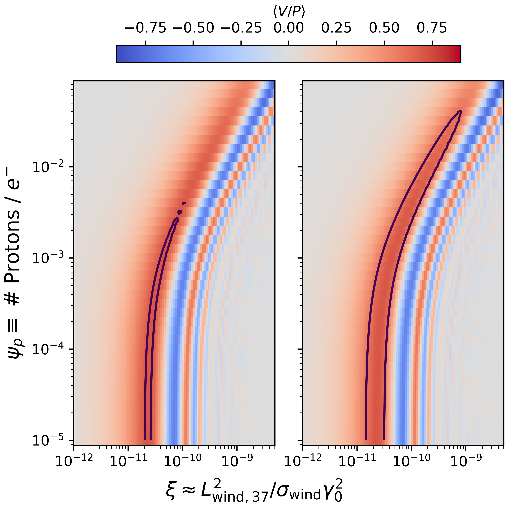
图注：Contour lines (in black) show the parameter space enclosing the averaged circular polarization $\langle V/P \rangle\pm0.1$ over the observed frequency range $1260 - 1388$ MHz, for SGR 1935+2154 radio bursts from \(\citet{Kirsten2021}.\) Here, $P$ refers to the total polarization of the bursts, since it is not $100\%$. The background plot is similar to Figure \(\ref{fig:Lfrb_iload_vs_xi},\) but for the burst luminosities corresponding to the (\textit{left}) first and (\textit{right}) second bursts that were separated by about 1.4s. The numerical model is initialized with $R_0 = 1.55 \times 10^{10}$ cm, which is the light cylinder radius of SGR 1935+2154.
对应解读：“建议重点查看的图表”第4项SGR 1935+2154个例约束图，以及第6项关于粒子成分/离子负载稳健性的检查。
入选理由：该图针对SGR 1935+2154两次相隔约1.4秒的射电暴，在离子负载psi_p与风参数xi平面上给出与观测平均圆偏振相符的等值线。它是候选图中唯一直接对应银河磁星SGR 1935+2154约束的图，也能展示离子负载对圆偏振约束的影响。
来源与置信度：\(arxiv_source\)；high；\(arxiv_source\) / main.tex:figure[6]
强相关工作
这篇工作处在 FRB 偏振传播和磁星中心引擎两条文献线的交叉处。同类工作包括用 \(\mathrm{RM}\)、色散量变化、散射和偏振角摆动约束 FRB 近源环境的研究；基础理论则来自磁化等离子体中的 Faraday rotation、Faraday conversion 和相对论风模型。建议检索关键词包括 “FRB circular polarization Faraday conversion”、“magnetar wind FRB polarization”、“FRB 20201124A Stokes V”、“FRB 20180301A polarization” 和 “SGR 1935+2154 radio burst polarization”。
可能存在的张力在于本征圆偏振解释。若某些 FRB 的 \(V\) 与脉冲相位、子爆发结构或发射频率漂移紧密相关，而无法由平滑传播屏幕产生，那么磁层相干辐射模型可能更自然。反过来，若同一源不同爆发的 \(V\) 随风活动指标或 \(\mathrm{RM}\) 系统变化，传播解释会更有优势。本文并不排除本征 \(V\)，而是给出一种可检验的近源传播通道。
对于具名源，FRB 20201124A 和 FRB 20180301A 属于重复 FRB 个例，应查同源偏振观测论文；SGR 1935+2154 是银河磁星射电爆发原型源，应查 CHIME/FRB、STARE2 以及后续多波段观测。若要系统比较，应同时查 FRB 目录论文、重复源偏振综述和磁星风理论文献。
同一事件 / 同类源线索：
- https://arxiv.org/abs/2607.01369
- https://arxiv.org/pdf/2607.01369
- https://www.chime-frb.ca/catalog
- https://www.wis-tns.org/object/2020uym
相似工作：
基础理论 / 方法工作：
相反观点 / 张力线索：
（未提供）
9. No Evidence for Superradiant Axions in LIGO-Virgo-KAGRA GWTC-5 Binary Black Hole Spins
- 来源：arXiv / astro-ph.HE
- 链接：https://arxiv.org/abs/2607.01317v1
- 作者：Orion Ning, Benjamin R. Safdi, Catherine Welch
- 评分：novelty 8/10，importance 8/10，relevance 7/10，final 8.65/10
- 推荐理由：利用GWTC-5双黑洞自旋层级贝叶斯分析约束超轻轴子超辐射，结果较稳健并与致密天体/引力波高能天体物理相关；非伽马方向但重要性较高。
中文题目：在 LIGO-Virgo-KAGRA GWTC-5 双黑洞自旋中未发现超辐射轴子证据
做了什么：这篇论文用 GWTC-5 中 \(N=257\) 个双黑洞并合事件的质量和自旋后验，做了一个层级贝叶斯总体分析，检验超轻轴子是否通过黑洞超辐射抽取恒星级黑洞自旋。核心思想是：若某一轴子质量 \(m_a\) 存在，特定质量范围的旋转黑洞会被快速降自旋，从而在黑洞质量—自旋分布上留下“禁区”或缺口。作者没有发现这种特征，并在 \(95\%\) 置信水平排除 \(1.7\times10^{-14}\,{\rm eV}\lesssim m_a\lesssim3.3\times10^{-12}\,{\rm eV}\)。
为什么重要：超轻轴子和类轴子粒子是暗物质与强 \({\rm CP}\) 问题研究中的重要候选。过去这一质量区间的强约束主要来自 X 射线黑洞自旋测量，但那类约束依赖吸积盘模型、距离、倾角、谱硬化因子和盘内缘假设。引力波双黑洞样本给出的是完全不同的系统误差体系：它不需要吸积盘，但要处理低自旋测量、选择效应和双黑洞形成总体模型。因此这篇工作重要之处不只是“没有发现轴子”，而是把超辐射检验推进到一个可用总体统计和公开引力波目录复现的框架中。
理论 / 观测 / 仪器方法价值：对理论而言，它把黑洞超辐射的质量—自旋排除图转化成可同引力波总体模型直接比较的似然问题；对观测而言，它说明当前双黑洞自旋数据已经能与传统电磁自旋约束竞争；对方法而言，它展示了如何把单事件参数后验、探测选择函数、形成自旋分布和新物理效应放进同一个层级模型里。即使读者不关心轴子，这篇论文也是研究“如何从引力波群体中寻找粒子物理痕迹”的有用范例。
为什么应该关注：如果你关注暗物质、黑洞天体物理或引力波总体统计，这篇文章值得读：它给出了一个目前相当强且相对稳健的超轻轴子下限；它也提醒我们，双黑洞自旋总体虽然单个事件信息有限，但累积样本会对质量相关的新物理效应非常敏感。未来 O5/O6 目录扩大后，类似分析可能成为检验轻玻色子、原初黑洞形成、自旋演化和双黑洞形成通道的标准工具。
展开详细解读：文章讲解、背景、理论、重点章节、图表与相关工作
文章详细讲解
科学问题：黑洞超辐射预言，当玻色子的康普顿波长与黑洞引力半径相当时，旋转黑洞会把一部分转动能转移给玻色子束缚态云团。对恒星级黑洞，敏感的玻色子质量正好落在 \(10^{-14}\) 到 \(10^{-12}\,{\rm eV}\) 量级。若 QCD 轴子或类轴子粒子存在，某些质量段的高自旋黑洞会在天体物理时间尺度内被“刹车”，因此在观测到的黑洞质量—自旋平面上形成可预测的空洞或上边界。
作者怎么做：论文使用 LIGO-Virgo-KAGRA GWTC-5 公开双黑洞目录，包含 \(N=257\) 个并合事件，黑洞质量大约覆盖 \(5\) 到 \(135\,M_\odot\)。他们不是逐个事件判断某个黑洞是否“违反”超辐射边界，而是在层级贝叶斯框架下同时拟合黑洞形成自旋总体和可能的轴子超辐射演化。这样可以把单事件质量、自旋后验的不确定性、探测选择效应、总体模型参数和轴子质量 \(m_a\) 的假设统一进一个证据比较问题。
关键结果：在超过两个数量级的轴子质量范围内，作者没有发现相对于无轴子总体模型的显著偏好。相反，他们给出了排除区间 \(1.7\times10^{-14}\,{\rm eV}\lesssim m_a\lesssim3.3\times10^{-12}\,{\rm eV}\)，置信水平为 \(95\%\)。物理上，这意味着如果该质量区间存在耦合足以形成标准超辐射云的轴子或类轴子，那么 GWTC-5 应该已经看到质量相关的自旋耗散印记，但数据并不支持这种印记。
局限和下一步：该结论仍依赖双黑洞形成自旋分布的参数化、超辐射时间尺度与黑洞年龄假设、并合前后自旋演化处理、以及引力波自旋测量的选择效应。当前双黑洞的有效自旋 \(\chi_{\rm eff}\) 通常比单个分量自旋 \(\chi_1\)、\(\chi_2\) 约束得更好，因此质量—单体自旋图上的细结构仍会被后验展宽。下一步最关键的是用更大的 O5/O6 样本、改进选择函数和形成通道模型，并与 X 射线连续谱拟合、铁线反射谱、随机引力波背景或连续波搜索形成交叉验证。
关键结果是怎么做出来的
样本与数据链：本文的证据来自 GWTC-5 中 \(N=257\) 个双黑洞并合事件。每个事件提供源系质量、自旋和其他参数的后验样本，而不是单点估计。作者关心的是分量黑洞在并合前的质量 \(m_1,m_2\) 和无量纲自旋 \(\chi_1,\chi_2\)，因为超辐射边界主要出现在单个黑洞的 \(M\)–\(\chi\) 平面。目录的质量范围大约为 \(5\) 到 \(135\,M_\odot\)，正好对应 \(m_a\sim10^{-14}\) 到 \(10^{-12}\,{\rm eV}\) 的超辐射敏感窗口。
统计检验不是简单数点。若只看某些高自旋候选是否落入超辐射禁区，很容易受后验尾部、选择偏差和形成总体影响。作者采用层级贝叶斯方法：给定一个形成自旋总体模型，再加入某个 \(m_a\) 对应的超辐射演化映射，计算整个事件集合的总体似然。无轴子模型与有轴子模型之间的比较，实质上是在问：加入质量相关的自旋耗散后，是否显著提高了对所有事件后验样本的解释能力。
显著性和置信度的来源是边缘化后的总体后验或证据比，而不是单事件 \(p\) 值。作者在轴子质量网格上扫描，边缘化总体超参数，并把探测选择效应纳入归一化。最终结果是未发现某一 \(m_a\) 的正信号，并给出 \(95\%\) 排除区间。读者应重点检查文中展示 \(m_a\) 后验、排除曲线或贝叶斯因子随 \(m_a\) 变化的图，以及质量—自旋平面上有无轴子模型对观测后验的覆盖情况。
支撑结论的图表通常应包括三类：第一，GWTC-5 事件在 \(M\)–\(\chi\) 平面的分布与超辐射临界线；第二，轴子质量 \(m_a\) 的似然或后验曲线，显示哪些质量被排除；第三，不同总体自旋模型或稳健性检验下的排除区间变化。若论文提供表格，应关注排除区间端点、不同模型假设下的 \(95\%\) 上下界、以及相对于无轴子模型的证据差。
主要系统误差来自几个环节：单事件自旋后验本身宽且与质量比、进动、倾角退化；探测器对不同质量和自旋系统的探测概率不同；双黑洞形成分布可能随质量、红移、金属丰度或形成通道变化；超辐射耗散是否完成取决于黑洞年龄和玻色子自相互作用。论文的稳健性价值在于把这些问题尽量放进总体模型与选择函数，而不是把观测点硬性同一条理论边界比较。
最终的证据链可以概括为：GWTC-5 提供足够多的质量—自旋样本；超辐射对该平面的影响具有随 \(m_a\) 移动的特征尺度；层级似然没有发现这种尺度化缺口；因此在模型假设下排除 \(1.7\times10^{-14}\,{\rm eV}\lesssim m_a\lesssim3.3\times10^{-12}\,{\rm eV}\)。这条链条的强度来自样本总体，而不是某一个特别高自旋或低自旋事件。
展开背景、理论、公式、模型、章节和图表导读
背景知识
研究对象是超轻轴子或类轴子粒子与旋转黑洞之间的超辐射相互作用。轴子最初来自 Peccei-Quinn 机制，用于解释强相互作用中为何没有明显 \({\rm CP}\) 破坏；在更广义的高能理论和弦论图像中，也常出现一族质量很轻、耦合很弱的赝标量粒子。只要这类粒子的康普顿波长与黑洞尺度匹配，它们就能在黑洞周围形成类似氢原子的束缚态。
历史问题是：我们能否用天体黑洞当作“粒子探测器”。黑洞超辐射本身是广义相对论中的经典波动放大效应，对标量、矢量或张量场都可讨论。若玻色子质量非零，放大的波不会逃到无穷远，而会形成云团并继续抽取黑洞角动量。最终结果是在给定黑洞质量 \(M\) 下，高于某个自旋阈值的区域会被快速清空。
观测上，以前最常用的是 X 射线黑洞自旋。连续谱拟合法和铁线反射谱拟合法都能给出某些恒星级或超大质量黑洞的高自旋估计，因此若这些黑洞落入超辐射禁区，就能排除相应 \(m_a\)。但这类约束依赖吸积盘是否到达 \({\rm ISCO}\)、盘是否薄且稳态、黑洞质量和距离是否准确、盘倾角是否等同于轨道倾角等假设，系统误差长期有争议。
引力波目录让这个问题值得重新看。双黑洞并合的质量测量相对稳健，自旋虽然较难测，但事件数快速增长。单个事件也许无法精确定位 \(\chi_1\) 和 \(\chi_2\)，但总体上可以检验是否存在随质量移动的自旋上限。GWTC-5 的 \(257\) 个双黑洞事件使这种统计检验首次在较宽质量范围内变得有竞争力。
该领域常见误区之一是把超辐射边界当成硬切线：看到一个高自旋黑洞就简单排除一个轴子质量。真实情况要考虑黑洞年龄、吸积或并合后再自旋上升、轴子云增长时间、粒子自相互作用、以及测量后验。另一个误区是认为低自旋黑洞本身就是轴子证据；实际上双星演化、动力学形成和角动量输运都能自然产生低自旋，因此必须寻找质量相关的特征，而不是只看自旋偏低。
基础理论 / 方法脉络
物理图像可以从 Kerr 黑洞的能量抽取开始。旋转黑洞有视界角速度 \(\Omega_H\)，入射波若满足超辐射条件，其散射后振幅会被放大，能量和角动量来自黑洞自旋。对无质量波，放大后的波通常逃向远处；对有质量玻色子，质量项提供有效势阱，波可以被困在黑洞附近，于是形成不稳定增长的束缚态云。
尺度匹配由引力精细结构常数控制。定义 \(\alpha_g=G M m_a/(\hbar c)\)，当 \(\alpha_g\) 不是太小也不是太大时，束缚态增长最快。对恒星级黑洞 \(M\sim10\,M_\odot\)，匹配质量约为 \(m_a\sim10^{-12}\,{\rm eV}\)；对更重的 \(100\,M_\odot\) 黑洞，匹配质量向 \(10^{-13}\,{\rm eV}\) 移动。这就是为什么 GWTC-5 的质量覆盖直接对应论文给出的轴子质量窗口。
本文实际使用的是总体统计版本的这个理论。一个给定 \(m_a\) 会定义一组在 \(M\)–\(\chi\) 平面上的演化规则：形成时自旋 (\chi_{
m form}) 经过超辐射耗散后变为观测前自旋 (\chi_{
m obs})，其中耗散是否有效取决于增长时间是否短于黑洞可用演化时间。然后把这个映射嵌入双黑洞总体模型，预测观测样本中质量和自旋的联合分布。
观测方法的关键是层级贝叶斯。引力波参数估计给出每个事件的后验样本 \(p(\theta_i\mid d_i)\)，其中 \(\theta_i\) 包括质量、自旋、红移、取向等。总体分析需要把这些样本重新加权到一个总体分布 \(p(\theta\mid\Lambda,m_a)\)，并除以探测选择因子。这里 \(\Lambda\) 表示天体物理总体超参数，例如质量谱、自旋幅度分布和自旋方向分布。
常见退化包括：分量自旋与质量比、有效自旋 \(\chi_{\rm eff}\) 与进动参数、源系质量与红移、形成自旋分布与超辐射耗散强度之间的退化。选择效应也不容忽视，因为高质量、高自旋或特定取向的系统更容易被探测到。如果不校正这些效应，可能把探测器偏好误认为物理缺口，或者把真实缺口洗掉。
公式与推导
第一步是确定尺度匹配。对质量为 \(M\) 的黑洞和质量为 \(m_a\) 的玻色子，引力束缚强度常写为
这里 \(G\) 是引力常数，\(\hbar\) 是约化普朗克常数，\(c\) 是光速。\(\alpha_g\sim0.1\) 到 \(1\) 表示玻色子的康普顿波长与黑洞引力半径同阶，超辐射增长最相关。
第二步是写出旋转黑洞视界角速度。Kerr 黑洞无量纲自旋为 \(\chi=cJ/(G M^2)\)，视界角速度近似为
其中 \(J\) 是黑洞角动量。\(\Omega_H\) 越大，黑洞可被抽取的转动能越多。
第三步是超辐射条件。一个频率为 \(\omega\)、角量子数为 \(m\) 的模式满足
时可以从黑洞获得能量。对非相对论束缚态，\(\omega\) 约等于玻色子静质量频率并带有束缚能修正，因此常用
其中 \(n\) 是类似氢原子的主量子数。这个式子说明不同 \(m_a\) 会在不同 \(M\) 上触发不稳定性。
第四步是把超辐射条件转成临界自旋。令 \(\omega=m\Omega_H\)，可以定义某一模式的临界自旋 \(\chi_c(M,m_a)\)，满足
若形成自旋高于 \(\chi_c\)，且增长时间足够短，黑洞会被抽取角动量直到接近临界线。
第五步是引入增长时间尺度。对标量场最快模式，增长率可概念化写为
其中 \(p\) 取决于模式量子数和场的自旋。论文的物理判断是比较 \(\tau_{}\)
m sr}=1/\Gamma_{
m sr}) 与系统可用年龄 (t_{
m age})：若 (\tau_{
m sr}<t_{
m age})，超辐射会显著改变自旋。
第六步是形成分布到观测分布的映射。若形成时单黑洞参数为 \(\phi=(M,\chi_{})\)
m form}))，超辐射演化可抽象为
其中 \(\mathcal{S}\) 在无有效超辐射时近似为恒等映射，在有效区域内把 \(\chi_{}\)
m form}) 推向 \(\chi_c\)。这一步把粒子物理模型转化为可观测总体预测。
第七步是层级总体似然。对 \(N\) 个事件数据 \(\{d_i\}\)，总体超参数为 \(\Lambda\)，轴子质量为 \(m_a\)，选择效应校正后的似然可写作
这里 \(\theta\) 是单事件源参数，\(p(\theta\mid\Lambda,m_a)\) 是含超辐射映射的总体分布，\(\xi(\Lambda,m_a)\) 是探测概率归一化。
第八步是用后验样本实现重加权。若单事件参数估计使用了采样先验 \(\pi(\theta)\)，则积分可用后验样本 \(\theta_{ij}\) 近似为
这里 \(K_i\) 是第 \(i\) 个事件的后验样本数。这个式子说明总体分析如何利用公开后验样本而不必重新做波形参数估计。
第九步是模型比较和排除。轴子质量的边缘后验可写为
若某些 \(m_a\) 对数据给出明显较低的边缘似然，则可被排除。本文的 \(95\%\) 排除区间就是在这种总体后验或等价证据诊断下得到的。
第十步是直观缩放关系。由 \(\alpha_g\sim0.1\) 可估计敏感质量
这个关系解释了为什么 \(5\) 到 \(135\,M_\odot\) 的双黑洞样本会对应 \(10^{-14}\) 到 \(10^{-12}\,{\rm eV}\) 的轴子质量窗口。
模型拟合 / 应用方法
这类分析拟合的不是某个单一黑洞的自旋，而是双黑洞总体分布。典型参数包括质量谱超参数、自旋幅度分布、自旋倾角分布、红移演化，以及轴子质量 \(m_a\) 或表示有无超辐射效应的模型标签。论文的关键是将形成总体 \(p(\theta\mid\Lambda)\) 经由超辐射演化映射成观测前总体 \(p(\theta\mid\Lambda,m_a)\)。
似然通常由单事件后验样本重加权得到。每个 GW 事件原始参数估计都有自己的采样先验 \(\pi(\theta)\)，总体分析必须除掉这个先验再乘上新的总体模型。随后还要除以选择函数 \(\xi(\Lambda,m_a)\)，否则可探测体积随质量、自旋和红移改变会污染总体推断。对于 \(N=257\) 的样本，选择函数已是排除区间能否可信的核心部分。
残差诊断应看模型是否在质量—自旋平面系统性低估或高估事件密度。若有轴子模型预言某个质量段高自旋对象应缺失，但数据中有足够概率质量落在该区域，就会降低似然。反过来，如果无轴子形成模型本身已经允许自旋随质量降低，则可能与超辐射信号退化，因此必须比较不同自旋总体参数化下的结果稳定性。
主要参数退化包括 \(m_a\) 与黑洞年龄假设、形成自旋上限、质量相关自旋分布、以及分量自旋测量误差。若形成通道本来就在某个质量范围产生低自旋，那么超辐射造成的低自旋缺口会较难识别；若形成模型过于刚性，则可能把正常天体物理趋势误判为粒子物理效应。论文的排除意义取决于这些模型自由度是否足够吸收天体物理变化。
模型可能失败的地方也很清楚：如果双黑洞中多数黑洞在并合前经历了显著吸积而重新增自旋，简单超辐射耗散模型会失准；如果轴子有强自相互作用导致云团塌缩或饱和行为改变，标准超辐射边界也会变化；如果 GWTC-5 的某些高质量事件存在波形系统误差或选择函数误建模，排除区间端点会受影响。实际应用中，最稳妥的做法是把本文结果与 X 射线自旋、孤立黑洞、未来连续引力波搜索联合解释。
重点章节 / 结果段落怎么读
数据/样本部分应先看：作者如何定义 GWTC-5 中的双黑洞样本，是否排除边界事件或低显著性候选，使用哪些公开后验样本，以及质量、自旋和红移范围如何覆盖超辐射敏感窗口。这里要重点确认 \(N=257\) 的样本选择和后验重加权是否一致。
理论模型部分应读超辐射如何进入质量—自旋分布。重点不是超辐射教科书推导，而是作者采用哪种增长时间、临界自旋、黑洞年龄或演化规则，如何把形成自旋变成观测自旋，以及对 QCD 轴子和一般类轴子粒子的解释边界。
层级贝叶斯方法部分是全篇技术核心。读者应检查总体分布 \(p(\theta\mid\Lambda,m_a)\)、选择函数 \(\xi\)、后验样本重加权、先验选择和边缘化流程。特别要看作者是否允许足够灵活的质量相关自旋分布，否则排除可能过强。
主结果部分应围绕轴子质量 \(m_a\) 的后验、似然比或排除曲线阅读。关键是看无证据结论来自整个质量窗口的统计一致性，还是由少数高自旋事件驱动；还要看 \(95\%\) 排除区间端点在不同模型假设下是否明显移动。
讨论和稳健性检验部分用于判断结果可信度。应关注与 X 射线自旋约束的比较、对形成模型的敏感性、对黑洞年龄和超辐射饱和假设的依赖、以及未来更大引力波目录如何改进。附录若包含注入恢复、选择函数或替代先验，值得优先阅读。
建议重点查看的图表
-
质量—自旋平面图：看 GWTC-5 分量黑洞后验密度是否与不同 \(m_a\) 的超辐射临界线重叠；重点关注高自旋后验尾部，而非只看中位数。
-
轴子质量排除曲线：看 \(m_a\) 横轴上的后验、贝叶斯因子或置信排除强度，确认 \(1.7\times10^{-14}\) 到 \(3.3\times10^{-12}\,{\rm eV}\) 的区间如何定义。
-
总体自旋分布拟合图：比较无轴子模型与有轴子模型对 \(\chi\)、\(\chi_{\rm eff}\) 或质量分箱自旋分布的预测，寻找模型残差。
-
选择函数或探测效率诊断：看不同质量、自旋和红移下的探测概率如何影响总体似然，避免把探测偏差当成物理信号。
-
稳健性检验表：检查不同自旋总体模型、黑洞年龄假设、先验选择和事件筛选下的排除区间端点。
-
与既有 X 射线约束的比较图：看本文排除区间与传统电磁自旋约束重叠多少，以及哪些区间由引力波数据独立支撑。
关键图表逐图导读
图 1：通常应是黑洞质量—自旋平面或其等价展示。横轴可能是源系黑洞质量 \(M\)，纵轴是无量纲自旋 \(\chi\)。数据点或阴影代表 GWTC-5 事件后验，模型线代表不同轴子质量 \(m_a\) 的超辐射临界自旋。读图时不要把后验中位数当成真实点；应看完整置信区域是否跨越禁区。
图 2：可能展示轴子质量 \(m_a\) 的边缘后验、似然比或排除显著性。横轴为 \(m_a\)，纵轴为相对概率、\(\Delta\ln\mathcal{L}\) 或排除置信度。主要结论是没有出现相对于无轴子模型的峰值，且一段连续质量区间被 \(95\%\) 排除。读图陷阱是端点常受样本质量范围和增长时间假设控制，不应解释成绝对粒子物理边界。
图 3：若论文给出总体预测图，应看无轴子与有轴子模型对观测自旋分布的差异。横轴可能为 \(\chi\)、\(\chi_{\rm eff}\) 或质量分箱，纵轴为概率密度。模型线之间的差别若小于观测后验宽度，说明该 \(m_a\) 难以检验；若有轴子模型强行移除数据支持的高自旋区域，则似然会下降。
图 4：稳健性或系统误差图通常以多条曲线比较不同总体模型。应看排除区间是否在改变自旋先验、质量谱、选择函数或年龄假设后仍保持。若某些假设使排除明显变弱，读者需要回到模型部分判断那些假设是否天体物理上合理。
图 5：与外部约束比较图一般横轴为 \(m_a\)，纵轴可能为耦合、衰变常数 \(f_a\) 或仅为排除带。本文结果若作为黑洞超辐射质量排除带，应与 X 射线黑洞自旋约束区分开：前者系统误差来自引力波总体和形成模型，后者来自吸积盘自旋测量。
论文原图 / 可嵌入图片
Fig03
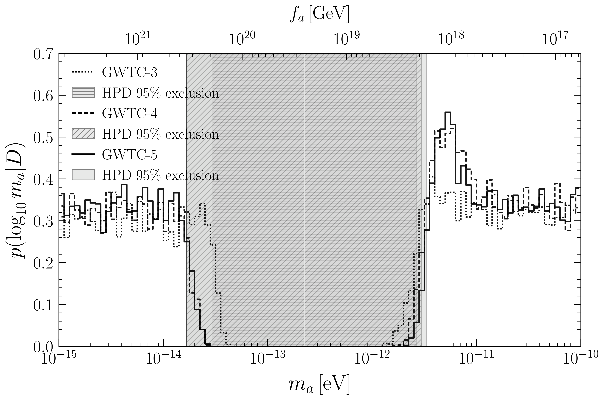
图注：The axion mass marginalized posteriors derived from our hierarchical likelihood analysis using BBH data from the GWTC-3, GWTC-4, and GWTC-5 catalogs (note that $f_a$ for the QCD axion is shown as the top x-axis). The posteriors reflect the uniform prior outside the SR region, but display a deep deficit in the SR-active window where axion clouds should have spun down most of the BBH population. We additionally illustrate our fiducial 95\% exclusion regions defined through the HPD credible interval, for all three catalog searches.
对应解读：对应“建议重点查看的图表”第2项和“关键图表逐图导读”图2：轴子质量排除曲线、边缘后验与95%排除区间。
入选理由：这张图直接展示GWTC-3/4/5层级似然得到的轴子质量边缘后验和95% HPD排除区间，是支撑论文核心结论“无证据且排除1.7×10^-14到3.3×10^-12 eV”的最关键图。相比其他候选图，它最直接回答排除区间如何定义、GWTC-5相对早期目录如何增强约束，以及后验在超辐射活跃窗口中的缺口。
来源与置信度：\(arxiv_source\)；high；\(arxiv_source\) / main.tex:figure[3]
Fig02
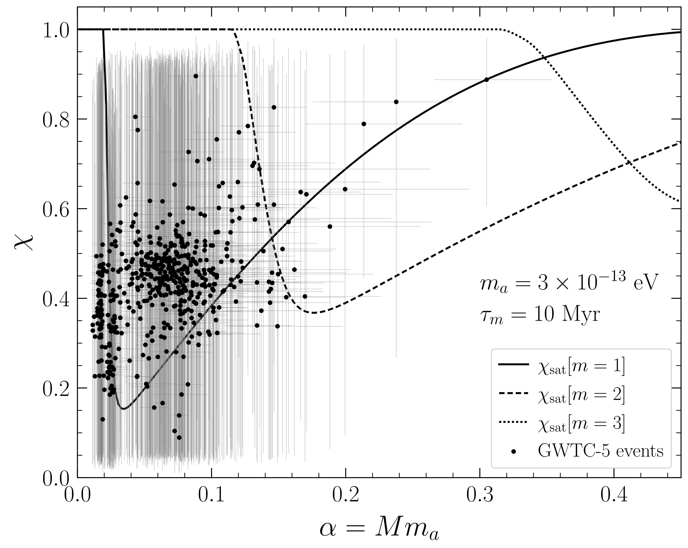
图注：The distribution of masses and spins (with error bars reflecting the PE 90\% credible interval) used in our GWTC-5 axion SR search, overlaid with the SR-induced Regge curves (saturated spin trajectories) for the modes $m=1, 2, 3$ at the given axion mass $m_a$ and assuming a merger timescale $\tau_m = 10$ Myr. Under the axion hypothesis, BHs in regions above each Regge curve would be spun down through SR to the saturated spin values along the mode curves.
对应解读：对应“建议重点查看的图表”第1项和“关键图表逐图导读”图1：质量—自旋平面与不同超辐射Regge曲线的重叠关系。
入选理由：这张图在黑洞质量M—自旋χ平面上叠加GWTC-5分量黑洞后验误差条与给定m_a下的超辐射饱和自旋轨迹，正是解释轴子如何在质量—自旋平面产生可检验缺口的核心诊断图。它能帮助读者理解为什么不能只看中位数，而要看90%可信区间是否进入曲线以上的超辐射禁区。
来源与置信度：\(arxiv_source\)；high；\(arxiv_source\) / main.tex:figure[2]
Fig12
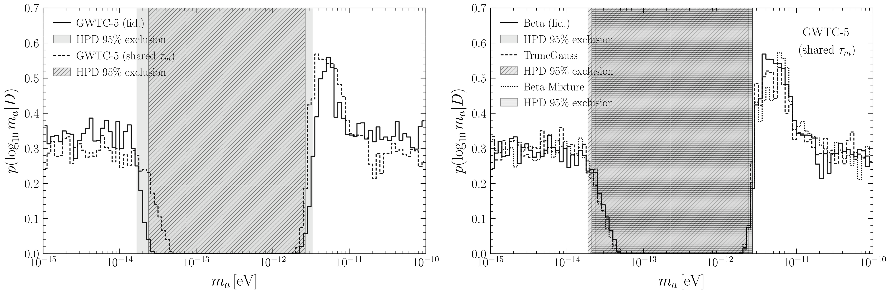
图注：(Left) Our fiducial axion mass $m_a$ marginalized posterior from GWTC-5 using the configuration where per-event $\tau_m$ are drawn from our DTD distribution, compared to the $m_a$ posteriors from an alternate simpler, but less realistic, analysis where all BBH events share a common singular $\tau_m$ from a log-flat prior $\tau_m \in [10^5, 10^9]$ yr. (Right) Our fiducial axion mass $m_a$ marginalized posterior from GWTC-5 using two other alternative natal spin distributions: a truncated gaussian and a Beta-mixture model (see text). Both result in similar $m_a$ posteriors as our fiducial Beta natal spin model. Note that we compare these alternative natal spin distributions assuming a single shared $\tau_m$ for computational simplicity, and to further isolate the effects of just changing the natal spin distribution.
对应解读：对应“建议重点查看的图表”第5项、“关键图表逐图导读”图4以及模型拟合段落中关于黑洞年龄假设、并合时间尺度τ_m和形成自旋分布退化的稳健性讨论。
入选理由：这张图直接比较不同并合时间尺度处理、不同natal spin总体模型下的m_a后验，是检验排除区间是否依赖自旋总体参数化和黑洞年龄假设的关键系统误差图。日报中特别强调m_a与年龄、形成自旋上限和自旋分布模型的退化，因此该图比单纯展示事件分布的图更能支撑稳健性判断。
来源与置信度：\(arxiv_source\)；high；\(arxiv_source\) / main.tex:figure[12]
Fig01
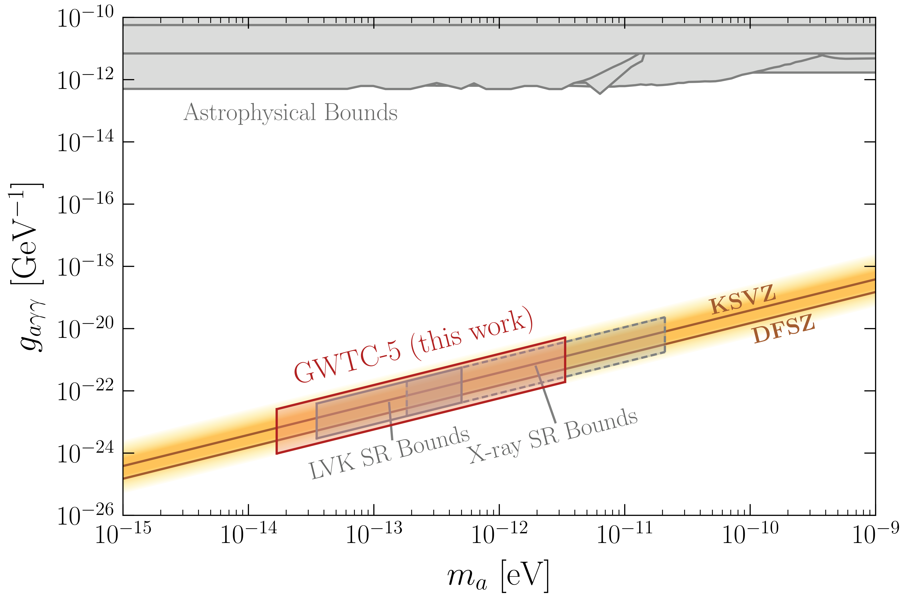
图注：Constraints from this work (95\% confidence exclusion region) on the QCD axion mass $m_a$ from our search for axion superradiance in the GWTC-5 BBH catalog. We illustrate our results against $\gagg$ for presentation purposes, and, since we focus on the QCD axion, truncate our constraint just above and below the QCD axion band, though our analysis does not involve $g_{a\gamma\gamma}$ directly and also applies to more general axion-like particles. We compare our results to existing superradiance constraints from X-ray and LVK spin measurements (gray bands), with the dashed X-ray portion indicating possible systematics from the high spins inferred for X-ray-based constraints. In the context of $g_{a\gamma\gamma}$ we also show other constraints for similar $m_a$ in gray, which are all astrophysical.
对应解读：对应“建议重点查看的图表”第6项和“关键图表逐图导读”图5：本文GWTC-5超辐射约束与既有X射线/LVK及其他天体物理约束的比较。
入选理由：这张图把本文95%置信排除区域放在QCD轴子质量和g_{aγγ}参数空间中，并与X射线自旋约束及其可能系统误差区分开来。它最适合支撑日报中关于“本文结果是较强且更稳健的QCD轴子质量下限之一，但应与传统电磁自旋约束分开解读”的结论。
来源与置信度：\(arxiv_source\)；high；\(arxiv_source\) / main.tex:figure[1]
Fig08
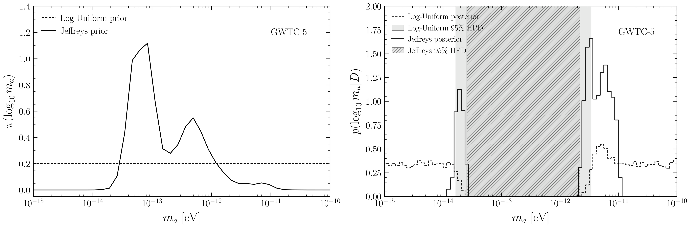
图注：Left: The Jeffreys prior $\pi_J(\log_{10}m_a)$ for GWTC-5. Right: The resulting GWTC-5 posteriors under Jeffreys (solid) and log-uniform (dashed) priors, with 95\% HPD exclusion regions shaded. Note that the Jeffreys prior is non-zero only in regions where the data carry positive Fisher information about $m_a$. The two posteriors yield largely consistent exclusion regions, with the Jeffreys exclusion region being slightly more conservative.
对应解读：对应“建议重点查看的图表”第5项和模型拟合段落中关于先验选择、Jeffreys先验与log-uniform先验对排除区间影响的稳健性检验。
入选理由：这张图专门展示GWTC-5下Jeffreys先验和对数均匀先验得到的m_a后验及95% HPD排除区间，能检验排除结果是否由先验体积驱动。日报强调先验选择和系统误差对端点的影响，因此该图是Fig12之外最重要的稳健性补充。
来源与置信度：\(arxiv_source\)；high；\(arxiv_source\) / main.tex:figure[8]
Fig09
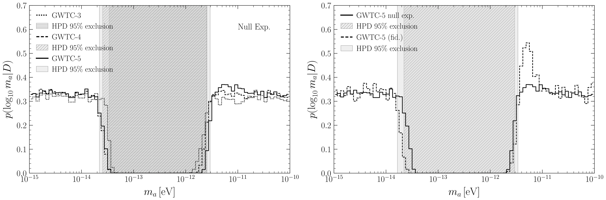
图注：Left: The expected $m_a$ posteriors and 95\% exclusion regions under the null hypothesis, following the Monte Carlo procedure described in the main text, across our three catalogs. Right: The expected posteriors and exclusion regions for GWTC-5 compared to our fiducial analysis using real GWTC-5 data.
对应解读：对应“关键图表逐图导读”图2和模型拟合段落中关于无轴子模型、真实GWTC-5数据与零假设期望后验的比较。
入选理由：这张图将零假设Monte Carlo预期的m_a后验和95%排除区间与真实GWTC-5分析进行比较，可帮助判断观测到的后验缺口是否符合无轴子总体模型预期。它虽不是选择函数图或残差图，但能支撑日报中“没有相对于无轴子模型的显著峰值”的统计解释。
来源与置信度：\(arxiv_source\)；high；\(arxiv_source\) / main.tex:figure[9]
强相关工作
这篇工作属于“用黑洞自旋检验轻玻色子”的同类研究谱系。理论原型包括 Kerr 黑洞超辐射、类氢束缚态和 axiverse 黑洞约束；综述性关键词可检索 “black hole superradiance axion review”、“ultralight bosons black hole spin constraints”、“Regge plane axion black holes”。与本文最直接相关的是把黑洞质量—自旋平面上的 Regge 空区从单个 X 射线源检验推进到引力波双黑洞总体检验。
与既有观测约束的关系需要谨慎读。X 射线连续谱和反射谱曾给出强的恒星级黑洞自旋约束，但系统误差与本文完全不同；引力波双黑洞自旋测量较弱，却有清晰的选择函数和可增长的样本量。相反观点通常会强调双黑洞形成自旋分布不确定、分量自旋后验宽、以及超辐射演化时间和轴子自相互作用的模型依赖。检索关键词可用 “GWTC black hole spin population axion superradiance”、“Bayesian hierarchical black hole superradiance”、“X-ray spin axion superradiance systematics”。
同一事件层面上，本文不是针对某一个命名引力波事件，而是针对 GWTC-5 双黑洞目录整体；因此 source context 应理解为同类目录、同类源和历史原型，而非单一 transient 的后续观测。
同一事件 / 同类源线索：
- https://arxiv.org/abs/2607.01317
- https://arxiv.org/pdf/2607.01317
- https://www.gw-openscience.org/
- https://arxiv.org/abs/2111.03606
相似工作：
基础理论 / 方法工作：
相反观点 / 张力线索：
（未提供）
说明
评分由 LLM 给出初评，再由本地阈值策略过滤；IACT、TeV 伽马射线和高能中微子天文学按重点方向处理。